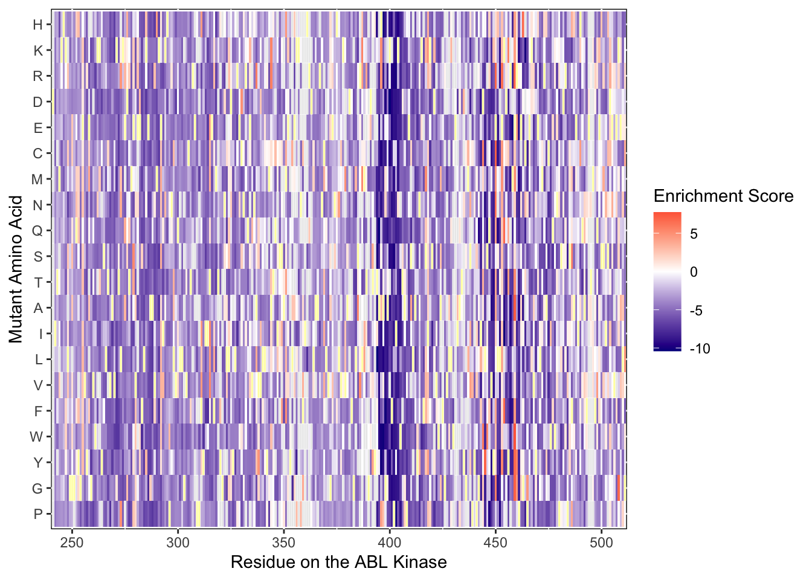
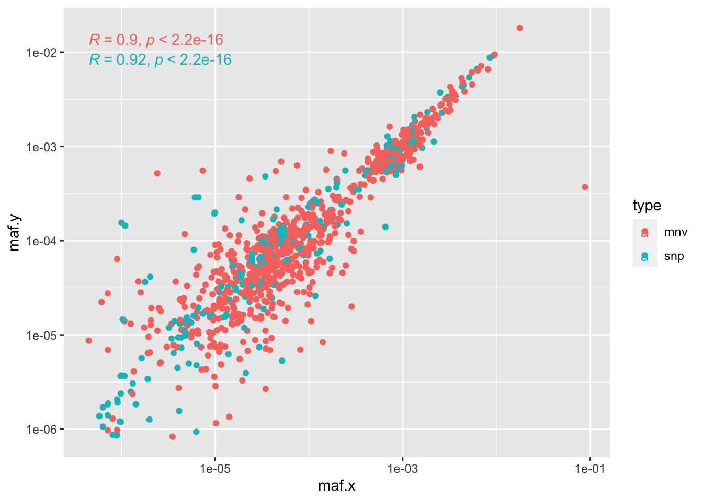

ABL_allregions_analysis
Haider Inam
2023-08-10
Last updated: 2024-09-02
Checks: 6 1
Knit directory: duplex_sequencing_screen/
This reproducible R Markdown analysis was created with workflowr (version 1.6.2). The Checks tab describes the reproducibility checks that were applied when the results were created. The Past versions tab lists the development history.
The R Markdown is untracked by Git. To know which version of the R
Markdown file created these results, you’ll want to first commit it to
the Git repo. If you’re still working on the analysis, you can ignore
this warning. When you’re finished, you can run
wflow_publish to commit the R Markdown file and build the
HTML.
Great job! The global environment was empty. Objects defined in the global environment can affect the analysis in your R Markdown file in unknown ways. For reproduciblity it’s best to always run the code in an empty environment.
The command set.seed(20200402) was run prior to running
the code in the R Markdown file. Setting a seed ensures that any results
that rely on randomness, e.g. subsampling or permutations, are
reproducible.
Great job! Recording the operating system, R version, and package versions is critical for reproducibility.
Nice! There were no cached chunks for this analysis, so you can be confident that you successfully produced the results during this run.
Great job! Using relative paths to the files within your workflowr project makes it easier to run your code on other machines.
Great! You are using Git for version control. Tracking code development and connecting the code version to the results is critical for reproducibility.
The results in this page were generated with repository version b998df6. See the Past versions tab to see a history of the changes made to the R Markdown and HTML files.
Note that you need to be careful to ensure that all relevant files for
the analysis have been committed to Git prior to generating the results
(you can use wflow_publish or
wflow_git_commit). workflowr only checks the R Markdown
file, but you know if there are other scripts or data files that it
depends on. Below is the status of the Git repository when the results
were generated:
Ignored files:
Ignored: .Rhistory
Ignored: .Rproj.user/
Ignored: code/archive/
Ignored: data/Consensus_Data/.Rhistory
Ignored: data/Consensus_Data/Novogene_lane11/.DS_Store
Ignored: data/Consensus_Data/Novogene_lane11/sample1/.DS_Store
Ignored: data/Consensus_Data/Novogene_lane11/sample2/.DS_Store
Ignored: data/Consensus_Data/Novogene_lane11/sample3/.DS_Store
Ignored: data/Consensus_Data/Novogene_lane11/sample4/.DS_Store
Ignored: data/Consensus_Data/Novogene_lane11/sample7/.DS_Store
Ignored: data/Consensus_Data/Novogene_lane12/.DS_Store
Ignored: data/Consensus_Data/Novogene_lane12/sample1/.DS_Store
Ignored: data/Consensus_Data/Novogene_lane13/.DS_Store
Ignored: data/Consensus_Data/Novogene_lane13/sample1/.DS_Store
Ignored: data/Consensus_Data/Novogene_lane13/sample10/.DS_Store
Ignored: data/Consensus_Data/Novogene_lane13/sample11/.DS_Store
Ignored: data/Consensus_Data/Novogene_lane13/sample12/.DS_Store
Ignored: data/Consensus_Data/Novogene_lane13/sample7/.DS_Store
Ignored: data/Consensus_Data/Novogene_lane13/sample8/variant_caller_outputs/
Ignored: data/Consensus_Data/Novogene_lane13/sample9/.DS_Store
Ignored: data/Consensus_Data/Novogene_lane14/.DS_Store
Ignored: data/Consensus_Data/Novogene_lane14/sample10_combined/.DS_Store
Ignored: data/Consensus_Data/Novogene_lane14/sample11/.DS_Store
Ignored: data/Consensus_Data/Novogene_lane14/sample12/.DS_Store
Ignored: data/Consensus_Data/Novogene_lane14/sample13/
Ignored: data/Consensus_Data/Novogene_lane14/sample14_combined/.DS_Store
Ignored: data/Consensus_Data/Novogene_lane14/sample14b/
Ignored: data/Consensus_Data/Novogene_lane14/sample15/.DS_Store
Ignored: data/Consensus_Data/Novogene_lane14/sample16/.DS_Store
Ignored: data/Consensus_Data/Novogene_lane14/sample17/.DS_Store
Ignored: data/Consensus_Data/Novogene_lane14/sample18/.DS_Store
Ignored: data/Consensus_Data/Novogene_lane14/sample1_combined/
Ignored: data/Consensus_Data/Novogene_lane14/sample7/variant_caller_outputs/duplex/
Ignored: data/Consensus_Data/Novogene_lane14/sample8/variant_caller_outputs/
Ignored: data/Consensus_Data/Novogene_lane14/sample9/.DS_Store
Ignored: data/Consensus_Data/Novogene_lane2/
Ignored: data/Consensus_Data/Novogene_lane3/
Ignored: data/Consensus_Data/Novogene_lane4/
Ignored: data/Consensus_Data/Novogene_lane5/
Ignored: data/Consensus_Data/Novogene_lane6/
Ignored: data/Consensus_Data/Novogene_lane7/
Ignored: data/Consensus_Data/R01Figure/.DS_Store
Ignored: data/Consensus_Data/Ranomics_Pooled/
Ignored: data/Consensus_Data/archive/
Ignored: data/Consensus_Data/novogene_lane15/.DS_Store
Ignored: data/Consensus_Data/novogene_lane15/egfr/.DS_Store
Ignored: data/Consensus_Data/novogene_lane15/egfr/sample_1/.DS_Store
Ignored: data/Consensus_Data/novogene_lane15/egfr/sample_1/firstrun(lowsequencing)/.DS_Store
Ignored: data/Consensus_Data/novogene_lane15/egfr/sample_1/firstrun(lowsequencing)/sscs/
Ignored: data/Consensus_Data/novogene_lane15/egfr/sample_1/sscs/.DS_Store
Ignored: data/Consensus_Data/novogene_lane15/egfr/sample_2/.DS_Store
Ignored: data/Consensus_Data/novogene_lane15/egfr/sample_2/firstrun(lowsequencing)/.DS_Store
Ignored: data/Consensus_Data/novogene_lane15/egfr/sample_2/firstrun(lowsequencing)/sscs/
Ignored: data/Consensus_Data/novogene_lane15/egfr/sample_2/sscs/.DS_Store
Ignored: data/Consensus_Data/novogene_lane15/egfr/sample_2/sscs/sscs_sorted_filtered.tsv.gz
Ignored: data/Consensus_Data/novogene_lane15/sample_3/.DS_Store
Ignored: data/Consensus_Data/novogene_lane15/sample_3/firstrun(lowsequencing)/.DS_Store
Ignored: data/Consensus_Data/novogene_lane15/sample_3/firstrun(lowsequencing)/sscs/sscs_sorted_filtered.tsv.gz
Ignored: data/Consensus_Data/novogene_lane15/sample_3/ngs/Sample3_sorted_filtered.tsv.gz
Ignored: data/Consensus_Data/novogene_lane15/sample_3/sscs/sscs_sorted_filtered.tsv.gz
Ignored: data/Consensus_Data/novogene_lane15/sample_4/.DS_Store
Ignored: data/Consensus_Data/novogene_lane15/sample_4/firstrun(lowsequencing)/.DS_Store
Ignored: data/Consensus_Data/novogene_lane15/sample_4/firstrun(lowsequencing)/sscs/sscs_sorted_filtered.tsv.gz
Ignored: data/Consensus_Data/novogene_lane15/sample_4/sscs/sscs_sorted_filtered.tsv.gz
Ignored: data/Consensus_Data/novogene_lane15/sample_5/.DS_Store
Ignored: data/Consensus_Data/novogene_lane15/sample_5/firstrun(lowsequencing)/.DS_Store
Ignored: data/Consensus_Data/novogene_lane15/sample_5/firstrun(lowsequencing)/sscs/sscs_sorted_filtered.tsv.gz
Ignored: data/Consensus_Data/novogene_lane15/sample_5/firstrun(lowsequencing)/sscs/variant_caller_outputs/.empty/
Ignored: data/Consensus_Data/novogene_lane15/sample_5/sscs/sscs_sorted_filtered.tsv.gz
Ignored: data/Consensus_Data/novogene_lane15/sample_6/.DS_Store
Ignored: data/Consensus_Data/novogene_lane15/sample_6/firstrun(lowsequencing)/.DS_Store
Ignored: data/Consensus_Data/novogene_lane15/sample_6/firstrun(lowsequencing)/sscs/sscs_sorted_filtered.tsv.gz
Ignored: data/Consensus_Data/novogene_lane15/sample_6/sscs/.DS_Store
Ignored: data/Consensus_Data/novogene_lane15/sample_6/sscs/sscs_sorted_filtered.tsv.gz
Ignored: data/Consensus_Data/novogene_lane15/sample_7/.DS_Store
Ignored: data/Consensus_Data/novogene_lane15/sample_7/firstrun(lowsequencing)/.DS_Store
Ignored: data/Consensus_Data/novogene_lane15/sample_7/firstrun(lowsequencing)/sscs/sscs_sorted_filtered.tsv.gz
Ignored: data/Consensus_Data/novogene_lane15/sample_7/sscs/.DS_Store
Ignored: data/Consensus_Data/novogene_lane15/sample_7/sscs/sscs_sorted_filtered.tsv.gz
Ignored: data/Consensus_Data/novogene_lane16a/.DS_Store
Ignored: data/Consensus_Data/novogene_lane16a/Sample10/.DS_Store
Ignored: data/Consensus_Data/novogene_lane16a/Sample10/sscs/sscs_sorted_filtered.tsv.gz
Ignored: data/Consensus_Data/novogene_lane16a/Sample11/.DS_Store
Ignored: data/Consensus_Data/novogene_lane16a/Sample11/sscs/sscs_sorted_filtered.tsv.gz
Ignored: data/Consensus_Data/novogene_lane16a/Sample12/.DS_Store
Ignored: data/Consensus_Data/novogene_lane16a/Sample12/sscs/
Ignored: data/Consensus_Data/novogene_lane16a/Sample13/.DS_Store
Ignored: data/Consensus_Data/novogene_lane16a/Sample13/sscs/
Ignored: data/Consensus_Data/novogene_lane16a/Sample14/.DS_Store
Ignored: data/Consensus_Data/novogene_lane16a/Sample14/sscs/sscs_sorted_filtered.tsv.gz
Ignored: data/Consensus_Data/novogene_lane16a/Sample1_combined/.DS_Store
Ignored: data/Consensus_Data/novogene_lane16a/Sample1_combined/sscs/sscs_sorted_filtered.tsv.gz
Ignored: data/Consensus_Data/novogene_lane16a/Sample2/.DS_Store
Ignored: data/Consensus_Data/novogene_lane16a/Sample3/.DS_Store
Ignored: data/Consensus_Data/novogene_lane16a/Sample3/sscs/sscs_sorted_filtered.tsv.gz
Ignored: data/Consensus_Data/novogene_lane16a/Sample4/.DS_Store
Ignored: data/Consensus_Data/novogene_lane16a/Sample4/sscs/sscs_sorted_filtered.tsv.gz
Ignored: data/Consensus_Data/novogene_lane16a/Sample5/.DS_Store
Ignored: data/Consensus_Data/novogene_lane16a/Sample5/sscs/sscs_sorted_filtered.tsv.gz
Ignored: data/Consensus_Data/novogene_lane16a/Sample6/.DS_Store
Ignored: data/Consensus_Data/novogene_lane16a/Sample6/sscs/sscs_sorted_filtered.tsv.gz
Ignored: data/Consensus_Data/novogene_lane16a/Sample7/.DS_Store
Ignored: data/Consensus_Data/novogene_lane16a/Sample7/sscs/sscs_sorted_filtered.tsv.gz
Ignored: data/Consensus_Data/novogene_lane16a/Sample8/.DS_Store
Ignored: data/Consensus_Data/novogene_lane16a/Sample8/sscs/sscs_sorted_filtered.tsv.gz
Ignored: data/Consensus_Data/novogene_lane16a/Sample9/.DS_Store
Ignored: data/Consensus_Data/novogene_lane16a/Sample9/sscs/sscs_sorted_filtered.tsv.gz
Ignored: data/Consensus_Data/novogene_lane16a/duplex/
Ignored: data/Consensus_Data/novogene_lane16b/Sample10/.DS_Store
Ignored: data/Consensus_Data/novogene_lane16b/Sample11/
Ignored: data/Consensus_Data/novogene_lane16b/Sample15/.DS_Store
Ignored: data/Consensus_Data/novogene_lane16b/Sample1_combined/.DS_Store
Ignored: data/Consensus_Data/novogene_lane16b/Sample2/.DS_Store
Ignored: data/Consensus_Data/novogene_lane16b/Sample3/.DS_Store
Ignored: data/Consensus_Data/novogene_lane16b/Sample4/.DS_Store
Ignored: data/Consensus_Data/novogene_lane16b/Sample5/.DS_Store
Ignored: data/Consensus_Data/novogene_lane16b/Sample6/.DS_Store
Ignored: data/Consensus_Data/novogene_lane16b/Sample7_combined/.DS_Store
Ignored: data/Consensus_Data/novogene_lane16b/Sample8_combined/.DS_Store
Ignored: data/Consensus_Data/novogene_lane16b/Sample8_combined/sscs/variant_caller_outputs/archive/
Ignored: data/Consensus_Data/novogene_lane16b/Sample9/.DS_Store
Ignored: data/Consensus_Data/novogene_lane17/.DS_Store
Ignored: data/Consensus_Data/novogene_lane17/sample10/.DS_Store
Ignored: data/Consensus_Data/novogene_lane17/sample10/duplex/variant_caller_outputs/
Ignored: data/Consensus_Data/novogene_lane17/sample10/sscs/sscs_sorted_filtered.tsv.gz
Ignored: data/Consensus_Data/novogene_lane17/sample11/.DS_Store
Ignored: data/Consensus_Data/novogene_lane17/sample11/sscs/sscs_sorted_filtered.tsv.gz
Ignored: data/Consensus_Data/novogene_lane17/sample1_combined/.DS_Store
Ignored: data/Consensus_Data/novogene_lane17/sample1_combined/low_depth/duplex/low_depth/
Ignored: data/Consensus_Data/novogene_lane17/sample1_combined/low_depth/sscs/sscs_sorted_filtered.tsv.gz
Ignored: data/Consensus_Data/novogene_lane17/sample1_combined/sscs/sscs_sorted_filtered.tsv.gz
Ignored: data/Consensus_Data/novogene_lane17/sample2/.DS_Store
Ignored: data/Consensus_Data/novogene_lane17/sample2/sscs/sscs_sorted_filtered.tsv.gz
Ignored: data/Consensus_Data/novogene_lane17/sample3/.DS_Store
Ignored: data/Consensus_Data/novogene_lane17/sample3/sscs/sscs_sorted_filtered.tsv.gz
Ignored: data/Consensus_Data/novogene_lane17/sample4/.DS_Store
Ignored: data/Consensus_Data/novogene_lane17/sample4/sscs/sscs_sorted_filtered.tsv.gz
Ignored: data/Consensus_Data/novogene_lane17/sample5/.DS_Store
Ignored: data/Consensus_Data/novogene_lane17/sample5/low_seq_depth/sscs/sscs_sorted_filtered.tsv.gz
Ignored: data/Consensus_Data/novogene_lane17/sample5/sscs/sscs_sorted_filtered.tsv.gz
Ignored: data/Consensus_Data/novogene_lane17/sample6/.DS_Store
Ignored: data/Consensus_Data/novogene_lane17/sample6/low_seq_depths/sscs/sscs_sorted_filtered.tsv.gz
Ignored: data/Consensus_Data/novogene_lane17/sample6/sscs/sscs_sorted_filtered.tsv.gz
Ignored: data/Consensus_Data/novogene_lane17/sample7/.DS_Store
Ignored: data/Consensus_Data/novogene_lane17/sample7/low_seq_depths/sscs/sscs_sorted_filtered.tsv.gz
Ignored: data/Consensus_Data/novogene_lane17/sample7/sscs/sscs_sorted_filtered.tsv.gz
Ignored: data/Consensus_Data/novogene_lane17/sample8/.DS_Store
Ignored: data/Consensus_Data/novogene_lane17/sample8/sscs/sscs_sorted_filtered.tsv.gz
Ignored: data/Consensus_Data/novogene_lane17/sample9/.DS_Store
Ignored: data/Consensus_Data/novogene_lane17/sample9/sscs/sscs_sorted_filtered.tsv.gz
Ignored: data/Consensus_Data/novogene_lane17b/.DS_Store
Ignored: data/Consensus_Data/novogene_lane17b/Sample1 copy 2/
Ignored: data/Consensus_Data/novogene_lane17b/Sample1 copy 3/
Ignored: data/Consensus_Data/novogene_lane17b/Sample1/.DS_Store
Ignored: data/Consensus_Data/novogene_lane17b/Sample1/duplex/.DS_Store
Ignored: data/Consensus_Data/novogene_lane17b/Sample1/sscs/sscs_sorted_filtered.tsv.gz
Ignored: data/Consensus_Data/novogene_lane17b/Sample2/.DS_Store
Ignored: data/Consensus_Data/novogene_lane17b/Sample2/duplex/.DS_Store
Ignored: data/Consensus_Data/novogene_lane18/.DS_Store
Ignored: data/Consensus_Data/novogene_lane18/sample1/.DS_Store
Ignored: data/Consensus_Data/novogene_lane18/sample1/duplex/.DS_Store
Ignored: data/Consensus_Data/novogene_lane18/sample1/l298l/.DS_Store
Ignored: data/Consensus_Data/novogene_lane18/sample1/l298l/duplex/.DS_Store
Ignored: data/Consensus_Data/novogene_lane18/sample1/l298l/sscs/.DS_Store
Ignored: data/Consensus_Data/novogene_lane18/sample1/nol298l/.DS_Store
Ignored: data/Consensus_Data/novogene_lane18/sample1/nol298l/duplex/.DS_Store
Ignored: data/Consensus_Data/novogene_lane18/sample1/nol298l/sscs/.DS_Store
Ignored: data/Consensus_Data/novogene_lane18/sample1/sscs/.DS_Store
Ignored: data/Consensus_Data/novogene_lane18/sample10/.DS_Store
Ignored: data/Consensus_Data/novogene_lane18/sample10/l298l/.DS_Store
Ignored: data/Consensus_Data/novogene_lane18/sample10/ngs/.DS_Store
Ignored: data/Consensus_Data/novogene_lane18/sample10/nol298l/.DS_Store
Ignored: data/Consensus_Data/novogene_lane18/sample10/sscs/.DS_Store
Ignored: data/Consensus_Data/novogene_lane18/sample11/.DS_Store
Ignored: data/Consensus_Data/novogene_lane18/sample11/l298l/.DS_Store
Ignored: data/Consensus_Data/novogene_lane18/sample11/nol298l/.DS_Store
Ignored: data/Consensus_Data/novogene_lane18/sample11/sscs/.DS_Store
Ignored: data/Consensus_Data/novogene_lane18/sample12/.DS_Store
Ignored: data/Consensus_Data/novogene_lane18/sample13/.DS_Store
Ignored: data/Consensus_Data/novogene_lane18/sample13/duplex/.DS_Store
Ignored: data/Consensus_Data/novogene_lane18/sample13/l298l/.DS_Store
Ignored: data/Consensus_Data/novogene_lane18/sample13/nol298l/.DS_Store
Ignored: data/Consensus_Data/novogene_lane18/sample13/nol298l/duplex/.DS_Store
Ignored: data/Consensus_Data/novogene_lane18/sample13/sscs/.DS_Store
Ignored: data/Consensus_Data/novogene_lane18/sample14/.DS_Store
Ignored: data/Consensus_Data/novogene_lane18/sample14/duplex/
Ignored: data/Consensus_Data/novogene_lane18/sample14/l298l/.DS_Store
Ignored: data/Consensus_Data/novogene_lane18/sample14/l298l/duplex/variant_caller_outputs/
Ignored: data/Consensus_Data/novogene_lane18/sample14/nol298l/.DS_Store
Ignored: data/Consensus_Data/novogene_lane18/sample14/nol298l/duplex/.DS_Store
Ignored: data/Consensus_Data/novogene_lane18/sample14/nol298l/duplex/variant_caller_outputs/
Ignored: data/Consensus_Data/novogene_lane18/sample14/sscs/.DS_Store
Ignored: data/Consensus_Data/novogene_lane18/sample15/.DS_Store
Ignored: data/Consensus_Data/novogene_lane18/sample15/duplex/.DS_Store
Ignored: data/Consensus_Data/novogene_lane18/sample15/l298l/.DS_Store
Ignored: data/Consensus_Data/novogene_lane18/sample15/nol298l/.DS_Store
Ignored: data/Consensus_Data/novogene_lane18/sample15/sscs/.DS_Store
Ignored: data/Consensus_Data/novogene_lane18/sample16/.DS_Store
Ignored: data/Consensus_Data/novogene_lane18/sample16/l298l/.DS_Store
Ignored: data/Consensus_Data/novogene_lane18/sample16/nol298l/.DS_Store
Ignored: data/Consensus_Data/novogene_lane18/sample16/sscs/.DS_Store
Ignored: data/Consensus_Data/novogene_lane18/sample17/.DS_Store
Ignored: data/Consensus_Data/novogene_lane18/sample18/.DS_Store
Ignored: data/Consensus_Data/novogene_lane18/sample18/duplex/.DS_Store
Ignored: data/Consensus_Data/novogene_lane18/sample18/l298l/.DS_Store
Ignored: data/Consensus_Data/novogene_lane18/sample18/l298l/duplex/.DS_Store
Ignored: data/Consensus_Data/novogene_lane18/sample18/l298l/sscs/.DS_Store
Ignored: data/Consensus_Data/novogene_lane18/sample18/nol298l/.DS_Store
Ignored: data/Consensus_Data/novogene_lane18/sample18/nol298l/duplex/.DS_Store
Ignored: data/Consensus_Data/novogene_lane18/sample18/nol298l/sscs/.DS_Store
Ignored: data/Consensus_Data/novogene_lane18/sample18/sscs/.DS_Store
Ignored: data/Consensus_Data/novogene_lane18/sample2/.DS_Store
Ignored: data/Consensus_Data/novogene_lane18/sample2/l298l/.DS_Store
Ignored: data/Consensus_Data/novogene_lane18/sample2/nol298l/.DS_Store
Ignored: data/Consensus_Data/novogene_lane18/sample2/sscs/.DS_Store
Ignored: data/Consensus_Data/novogene_lane18/sample3/.DS_Store
Ignored: data/Consensus_Data/novogene_lane18/sample3/duplex/.DS_Store
Ignored: data/Consensus_Data/novogene_lane18/sample3/l298l/.DS_Store
Ignored: data/Consensus_Data/novogene_lane18/sample3/nol298l/.DS_Store
Ignored: data/Consensus_Data/novogene_lane18/sample3/sscs/.DS_Store
Ignored: data/Consensus_Data/novogene_lane18/sample4/.DS_Store
Ignored: data/Consensus_Data/novogene_lane18/sample4/l298l/.DS_Store
Ignored: data/Consensus_Data/novogene_lane18/sample4/l298l/duplex/.DS_Store
Ignored: data/Consensus_Data/novogene_lane18/sample4/l298l/sscs/.DS_Store
Ignored: data/Consensus_Data/novogene_lane18/sample4/nol298l/.DS_Store
Ignored: data/Consensus_Data/novogene_lane18/sample4/nol298l/sscs/.DS_Store
Ignored: data/Consensus_Data/novogene_lane18/sample4/sscs/.DS_Store
Ignored: data/Consensus_Data/novogene_lane18/sample5/.DS_Store
Ignored: data/Consensus_Data/novogene_lane18/sample5/l298l/.DS_Store
Ignored: data/Consensus_Data/novogene_lane18/sample5/nol298l/.DS_Store
Ignored: data/Consensus_Data/novogene_lane18/sample5/sscs/.DS_Store
Ignored: data/Consensus_Data/novogene_lane18/sample6/.DS_Store
Ignored: data/Consensus_Data/novogene_lane18/sample6/duplex/.DS_Store
Ignored: data/Consensus_Data/novogene_lane18/sample6/l298l/.DS_Store
Ignored: data/Consensus_Data/novogene_lane18/sample6/nol298l/.DS_Store
Ignored: data/Consensus_Data/novogene_lane18/sample6/sscs/.DS_Store
Ignored: data/Consensus_Data/novogene_lane18/sample7/.DS_Store
Ignored: data/Consensus_Data/novogene_lane18/sample8/.DS_Store
Ignored: data/Consensus_Data/novogene_lane18/sample9/.DS_Store
Ignored: data/Consensus_Data/novogene_lane18/sample9/l298l/.DS_Store
Ignored: data/Consensus_Data/novogene_lane18/sample9/nol298l/.DS_Store
Ignored: data/Consensus_Data/novogene_lane18/sample9/sscs/.DS_Store
Ignored: data/Consensus_Data/novogene_lane18/tlane18a_sample3/.DS_Store
Ignored: data/Consensus_Data/novogene_lane18/tlane18a_sample3/duplex/
Ignored: data/Consensus_Data/novogene_lane18/tlane18a_sample3/l298l/.DS_Store
Ignored: data/Consensus_Data/novogene_lane18/tlane18a_sample3/l298l/duplex/variant_caller_outputs/
Ignored: data/Consensus_Data/novogene_lane18/tlane18a_sample3/l298l/sscs/.DS_Store
Ignored: data/Consensus_Data/novogene_lane18/tlane18a_sample3/nol298l/.DS_Store
Ignored: data/Consensus_Data/novogene_lane18/tlane18a_sample3/nol298l/duplex/variant_caller_outputs/
Ignored: data/Consensus_Data/novogene_lane18/tlane18a_sample3/nol298l/sscs/.DS_Store
Ignored: data/Consensus_Data/novogene_lane18/tlane18a_sample3/sscs/.DS_Store
Ignored: data/Consensus_Data/novogene_lane18/tlane18a_sample5/.DS_Store
Ignored: data/Consensus_Data/novogene_lane18/tlane18a_sample5/duplex/
Ignored: data/Consensus_Data/novogene_lane18/tlane18a_sample5/l298l/duplex/variant_caller_outputs/
Ignored: data/Consensus_Data/novogene_lane18/tlane18a_sample5/nol298l/duplex/variant_caller_outputs/
Ignored: data/Consensus_Data/novogene_lane18/tlane18a_sample6/duplex/
Ignored: data/Consensus_Data/novogene_lane18/tlane18a_sample6/l298l/duplex/variant_caller_outputs/
Ignored: data/Consensus_Data/novogene_lane18/tlane18a_sample6/l298l/sscs/.DS_Store
Ignored: data/Consensus_Data/novogene_lane18/tlane18a_sample6/nol298l/duplex/variant_caller_outputs/
Ignored: data/Consensus_Data/novogene_lane18/tlane18a_sample6/nol298l/sscs/.DS_Store
Ignored: data/Consensus_Data/novogene_lane18/tlane18a_sample6/sscs/.DS_Store
Ignored: data/Consensus_Data/novogene_lane19/.DS_Store
Ignored: data/Consensus_Data/novogene_lane19/Ln19a_Sample1/.DS_Store
Ignored: data/Consensus_Data/novogene_lane19/Ln19a_Sample10/.DS_Store
Ignored: data/Consensus_Data/novogene_lane19/Ln19a_Sample11/.DS_Store
Ignored: data/Consensus_Data/novogene_lane19/Ln19a_Sample12/.DS_Store
Ignored: data/Consensus_Data/novogene_lane19/Ln19a_Sample12/duplex/variant_caller_outputs/
Ignored: data/Consensus_Data/novogene_lane19/Ln19a_Sample2/.DS_Store
Ignored: data/Consensus_Data/novogene_lane19/Ln19a_Sample3/.DS_Store
Ignored: data/Consensus_Data/novogene_lane19/Ln19a_Sample4/.DS_Store
Ignored: data/Consensus_Data/novogene_lane19/Ln19a_Sample5/.DS_Store
Ignored: data/Consensus_Data/novogene_lane19/Ln19a_Sample6/.DS_Store
Ignored: data/Consensus_Data/novogene_lane19/Ln19a_Sample7/.DS_Store
Ignored: data/Consensus_Data/novogene_lane19/Ln19a_Sample7/sscs/.DS_Store
Ignored: data/Consensus_Data/novogene_lane19/Ln19a_Sample8/.DS_Store
Ignored: data/Consensus_Data/novogene_lane19/Ln19a_Sample9/.DS_Store
Ignored: data/Consensus_Data/novogene_lane19/Ln19b_Sample1/.DS_Store
Ignored: data/Consensus_Data/novogene_lane19/Ln19b_Sample10/.DS_Store
Ignored: data/Consensus_Data/novogene_lane19/Ln19b_Sample11/.DS_Store
Ignored: data/Consensus_Data/novogene_lane19/Ln19b_Sample11/duplex/variant_caller_outputs/
Ignored: data/Consensus_Data/novogene_lane19/Ln19b_Sample12/.DS_Store
Ignored: data/Consensus_Data/novogene_lane19/Ln19b_Sample13/.DS_Store
Ignored: data/Consensus_Data/novogene_lane19/Ln19b_Sample14/.DS_Store
Ignored: data/Consensus_Data/novogene_lane19/Ln19b_Sample15/.DS_Store
Ignored: data/Consensus_Data/novogene_lane19/Ln19b_Sample16/.DS_Store
Ignored: data/Consensus_Data/novogene_lane19/Ln19b_Sample2/.DS_Store
Ignored: data/Consensus_Data/novogene_lane19/Ln19b_Sample3/.DS_Store
Ignored: data/Consensus_Data/novogene_lane19/Ln19b_Sample4/.DS_Store
Ignored: data/Consensus_Data/novogene_lane19/Ln19b_Sample5/.DS_Store
Ignored: data/Consensus_Data/novogene_lane19/Ln19b_Sample6/.DS_Store
Ignored: data/Consensus_Data/novogene_lane19/Ln19b_Sample7/.DS_Store
Ignored: data/Consensus_Data/novogene_lane19/Ln19b_Sample8/.DS_Store
Ignored: data/Consensus_Data/novogene_lane19/Ln19b_Sample9/.DS_Store
Ignored: data/Consensus_Data/novogene_lane19_20/.DS_Store
Ignored: data/Consensus_Data/novogene_lane19_20/Ln19a_Sample10/.DS_Store
Ignored: data/Consensus_Data/novogene_lane19_20/Ln19a_Sample11/.DS_Store
Ignored: data/Consensus_Data/novogene_lane19_20/Ln19a_Sample11/sscs/.DS_Store
Ignored: data/Consensus_Data/novogene_lane19_20/Ln19a_Sample2/.DS_Store
Ignored: data/Consensus_Data/novogene_lane19_20/Ln19a_Sample2/duplex/.DS_Store
Ignored: data/Consensus_Data/novogene_lane19_20/Ln19a_Sample2/sscs/.DS_Store
Ignored: data/Consensus_Data/novogene_lane19_20/Ln19a_Sample3/.DS_Store
Ignored: data/Consensus_Data/novogene_lane19_20/Ln19a_Sample3/sscs/.DS_Store
Ignored: data/Consensus_Data/novogene_lane19_20/Ln19a_Sample4/.DS_Store
Ignored: data/Consensus_Data/novogene_lane19_20/Ln19a_Sample5/.DS_Store
Ignored: data/Consensus_Data/novogene_lane19_20/Ln19a_Sample5/sscs/.DS_Store
Ignored: data/Consensus_Data/novogene_lane19_20/Ln19a_Sample6/.DS_Store
Ignored: data/Consensus_Data/novogene_lane19_20/Ln19a_Sample7/.DS_Store
Ignored: data/Consensus_Data/novogene_lane19_20/Ln19a_Sample8/.DS_Store
Ignored: data/Consensus_Data/novogene_lane19_20/Ln19a_Sample9/.DS_Store
Ignored: data/Consensus_Data/novogene_lane19_20/Ln19b_Sample9/.DS_Store
Ignored: data/Consensus_Data/novogene_lane22/.DS_Store
Ignored: data/Consensus_Data/novogene_lane22/Lane22_Sample1/.DS_Store
Ignored: data/Consensus_Data/novogene_lane22/Lane22_Sample1/sscs/.DS_Store
Ignored: data/Consensus_Data/novogene_lane22/Lane22_Sample2/.DS_Store
Ignored: data/Consensus_Data/novogene_lane22/Lane22_Sample3/.DS_Store
Ignored: data/Consensus_Data/novogene_lane22/Lane22_Sample4/.DS_Store
Ignored: data/Consensus_Data/novogene_lane22/Lane22_Sample5/.DS_Store
Ignored: data/Consensus_Data/novogene_lane22/Lane22_Sample6/.DS_Store
Ignored: data/Consensus_Data/novogene_lane22/Lane22_Sample6/duplex/variant_caller_outputs/
Ignored: data/Consensus_Data/novogene_lane22/Lane22_Sample7/duplex/variant_caller_outputs/
Ignored: data/Consensus_Data/novogene_lane22/Lane22_Sample7/sscs/variant_caller_outputs/
Ignored: data/Consensus_Data/novogene_lane22/Lane22_Sample8/duplex/variant_caller_outputs/
Ignored: data/Consensus_Data/novogene_lane22/Lane22_Sample8/sscs/variant_caller_outputs/
Ignored: data/Consensus_Data/novogene_lane23/.DS_Store
Ignored: data/Consensus_Data/novogene_lane23/Sample13/.DS_Store
Ignored: data/Consensus_Data/novogene_lane23/Sample13/duplex/.DS_Store
Ignored: data/Consensus_Data/novogene_lane23/Sample13/sscs/.DS_Store
Ignored: data/Consensus_Data/novogene_lane23/Sample14/.DS_Store
Ignored: data/Consensus_Data/novogene_lane23/Sample15/.DS_Store
Ignored: data/Consensus_Data/novogene_lane23/Sample15/duplex/.DS_Store
Ignored: data/Consensus_Data/novogene_lane23/Sample15/sscs/.DS_Store
Ignored: data/Consensus_Data/novogene_lane23/Sample16/.DS_Store
Ignored: data/Consensus_Data/novogene_lane23/Sample17/.DS_Store
Ignored: data/Consensus_Data/novogene_lane23/Sample17/sscs/.DS_Store
Ignored: data/Consensus_Data/novogene_lane23/Sample18/.DS_Store
Ignored: data/Consensus_Data/novogene_lane23/Sample18/duplex/.DS_Store
Ignored: data/Consensus_Data/novogene_lane23/Sample18/sscs/.DS_Store
Ignored: data/Consensus_Data/novogene_lane23/Sample19/.DS_Store
Ignored: data/Consensus_Data/novogene_lane23/Sample19/sscs/.DS_Store
Ignored: data/Consensus_Data/novogene_lane23/Sample20/.DS_Store
Ignored: data/Consensus_Data/novogene_lane23/Sample20/duplex/.DS_Store
Ignored: data/Consensus_Data/novogene_lane23/Sample20/sscs/.DS_Store
Ignored: data/Consensus_Data/novogene_lane23/Sample21/.DS_Store
Ignored: data/Consensus_Data/novogene_lane23/Sample21/duplex/.DS_Store
Ignored: data/Consensus_Data/novogene_lane23/Sample21/sscs/.DS_Store
Ignored: data/Consensus_Data/novogene_lane23/Sample22/.DS_Store
Ignored: data/Consensus_Data/novogene_lane23/Sample22/sscs/.DS_Store
Ignored: data/Consensus_Data/novogene_lane23/Sample23/.DS_Store
Ignored: data/Consensus_Data/novogene_lane23/Sample23/sscs/.DS_Store
Ignored: data/Consensus_Data/novogene_lane23/Sample24/.DS_Store
Ignored: data/Consensus_Data/novogene_lane23/Sample25/.DS_Store
Ignored: data/Consensus_Data/novogene_lane23/Sample26/.DS_Store
Ignored: data/Consensus_Data/novogene_lane23/Sample26/sscs/.DS_Store
Ignored: data/Consensus_Data/novogene_lane23/Sample27/.DS_Store
Ignored: data/Consensus_Data/novogene_lane23/Sample27/duplex/.DS_Store
Ignored: data/Consensus_Data/novogene_lane23/Sample27/sscs/.DS_Store
Ignored: data/Consensus_Data/novogene_lane25a/.DS_Store
Ignored: data/Consensus_Data/novogene_lane25a/Lane_25a_10/.DS_Store
Ignored: data/Consensus_Data/novogene_lane25a/Lane_25a_10/duplex/variant_caller_outputs/
Ignored: data/Consensus_Data/novogene_lane25a/Lane_25a_10/sscs/variant_caller_outputs/
Ignored: data/Consensus_Data/novogene_lane25a/Lane_25a_11/.DS_Store
Ignored: data/Consensus_Data/novogene_lane25a/Lane_25a_11/duplex/variant_caller_outputs/
Ignored: data/Consensus_Data/novogene_lane25a/Lane_25a_11/sscs/variant_caller_outputs/
Ignored: data/Consensus_Data/novogene_lane25a/Lane_25a_12/.DS_Store
Ignored: data/Consensus_Data/novogene_lane25a/Lane_25a_12/duplex/variant_caller_outputs/
Ignored: data/Consensus_Data/novogene_lane25a/Lane_25a_12/sscs/variant_caller_outputs/
Ignored: data/Consensus_Data/novogene_lane25a/Lane_25a_13/.DS_Store
Ignored: data/Consensus_Data/novogene_lane25a/Lane_25a_13/duplex/variant_caller_outputs/
Ignored: data/Consensus_Data/novogene_lane25a/Lane_25a_13/sscs/variant_caller_outputs/
Ignored: data/Consensus_Data/novogene_lane25a/Lane_25a_14/.DS_Store
Ignored: data/Consensus_Data/novogene_lane25a/Lane_25a_14/duplex/variant_caller_outputs/
Ignored: data/Consensus_Data/novogene_lane25a/Lane_25a_14/sscs/variant_caller_outputs/
Ignored: data/Consensus_Data/novogene_lane25a/Lane_25a_15/.DS_Store
Ignored: data/Consensus_Data/novogene_lane25a/Lane_25a_15/duplex/variant_caller_outputs/
Ignored: data/Consensus_Data/novogene_lane25a/Lane_25a_15/sscs/.DS_Store
Ignored: data/Consensus_Data/novogene_lane25a/Lane_25a_15/sscs/variant_caller_outputs/
Ignored: data/Consensus_Data/novogene_lane25a/Lane_25a_16/.DS_Store
Ignored: data/Consensus_Data/novogene_lane25a/Lane_25a_16/duplex/variant_caller_outputs/
Ignored: data/Consensus_Data/novogene_lane25a/Lane_25a_16/sscs/variant_caller_outputs/
Ignored: data/Consensus_Data/novogene_lane25a/Lane_25a_17/.DS_Store
Ignored: data/Consensus_Data/novogene_lane25a/Lane_25a_17/duplex/variant_caller_outputs/
Ignored: data/Consensus_Data/novogene_lane25a/Lane_25a_17/sscs/variant_caller_outputs/
Ignored: data/Consensus_Data/novogene_lane25a/Lane_25a_18/.DS_Store
Ignored: data/Consensus_Data/novogene_lane25a/Lane_25a_18/duplex/variant_caller_outputs/
Ignored: data/Consensus_Data/novogene_lane25a/Lane_25a_18/sscs/variant_caller_outputs/
Ignored: data/Consensus_Data/novogene_lane25a/Lane_25a_19/.DS_Store
Ignored: data/Consensus_Data/novogene_lane25a/Lane_25a_19/duplex/variant_caller_outputs/
Ignored: data/Consensus_Data/novogene_lane25a/Lane_25a_19/sscs/variant_caller_outputs/
Ignored: data/Consensus_Data/novogene_lane25a/Lane_25a_20/.DS_Store
Ignored: data/Consensus_Data/novogene_lane25a/Lane_25a_20/duplex/variant_caller_outputs/
Ignored: data/Consensus_Data/novogene_lane25a/Lane_25a_20/sscs/variant_caller_outputs/
Ignored: data/Consensus_Data/novogene_lane25a/Lane_25a_22/.DS_Store
Ignored: data/Consensus_Data/novogene_lane25a/Lane_25a_22/duplex/variant_caller_outputs/
Ignored: data/Consensus_Data/novogene_lane25a/Lane_25a_22/sscs/variant_caller_outputs/
Ignored: data/Consensus_Data/novogene_lane25a/Lane_25a_23/.DS_Store
Ignored: data/Consensus_Data/novogene_lane25a/Lane_25a_23/duplex/variant_caller_outputs/
Ignored: data/Consensus_Data/novogene_lane25a/Lane_25a_23/sscs/variant_caller_outputs/
Ignored: data/Consensus_Data/novogene_lane25a/Lane_25a_24/.DS_Store
Ignored: data/Consensus_Data/novogene_lane25a/Lane_25a_24/duplex/variant_caller_outputs/
Ignored: data/Consensus_Data/novogene_lane25a/Lane_25a_24/sscs/variant_caller_outputs/
Ignored: data/Consensus_Data/novogene_lane25a/Lane_25a_5/.DS_Store
Ignored: data/Consensus_Data/novogene_lane25a/Lane_25a_5/duplex/.DS_Store
Ignored: data/Consensus_Data/novogene_lane25a/Lane_25a_5/duplex/variant_caller_outputs/
Ignored: data/Consensus_Data/novogene_lane25a/Lane_25a_5/sscs/.DS_Store
Ignored: data/Consensus_Data/novogene_lane25a/Lane_25a_5/sscs/variant_caller_outputs/
Ignored: data/Consensus_Data/novogene_lane25a/Lane_25a_6/.DS_Store
Ignored: data/Consensus_Data/novogene_lane25a/Lane_25a_6/duplex/variant_caller_outputs/
Ignored: data/Consensus_Data/novogene_lane25a/Lane_25a_6/sscs/variant_caller_outputs/
Ignored: data/Consensus_Data/novogene_lane25a/Lane_25a_7/.DS_Store
Ignored: data/Consensus_Data/novogene_lane25a/Lane_25a_7/duplex/variant_caller_outputs/
Ignored: data/Consensus_Data/novogene_lane25a/Lane_25a_7/sscs/variant_caller_outputs/
Ignored: data/Consensus_Data/novogene_lane25a/Lane_25a_8/.DS_Store
Ignored: data/Consensus_Data/novogene_lane25a/Lane_25a_8/duplex/variant_caller_outputs/
Ignored: data/Consensus_Data/novogene_lane25a/Lane_25a_8/sscs/variant_caller_outputs/
Ignored: data/Consensus_Data/novogene_lane25a/Lane_25a_9/.DS_Store
Ignored: data/Consensus_Data/novogene_lane25a/Lane_25a_9/duplex/variant_caller_outputs/
Ignored: data/Consensus_Data/novogene_lane25a/Lane_25a_9/sscs/.DS_Store
Ignored: data/Consensus_Data/novogene_lane25a/Lane_25a_9/sscs/variant_caller_outputs/
Ignored: data/Consensus_Data/novogene_lane27b/.DS_Store
Ignored: data/Consensus_Data/novogene_lane27b/L1D0_Sample13_combined/.DS_Store
Ignored: data/Consensus_Data/novogene_lane27b/L1D0_Sample13_combined/duplex/.DS_Store
Ignored: data/Consensus_Data/novogene_lane27b/L1D0_Sample13_combined/sscs/.DS_Store
Ignored: data/Consensus_Data/novogene_lane27b/L2D0_Sample14_combined/.DS_Store
Ignored: data/Consensus_Data/novogene_lane27b/L2D0_Sample14_combined/sscs/.DS_Store
Ignored: data/Consensus_Data/novogene_lane27b/sample1/.DS_Store
Ignored: data/Consensus_Data/novogene_lane27b/sample1/duplex/.DS_Store
Ignored: data/Consensus_Data/novogene_lane27b/sample1/sscs/.DS_Store
Ignored: data/Consensus_Data/novogene_lane27b/sample1/sscs/sscs_sorted_filtered.tsv.gz
Ignored: data/Consensus_Data/novogene_lane27b/sample11_12/.DS_Store
Ignored: data/Consensus_Data/novogene_lane27b/sample11_12/duplex/.DS_Store
Ignored: data/Consensus_Data/novogene_lane27b/sample11_12/sscs/.DS_Store
Ignored: data/Consensus_Data/novogene_lane27b/sample11_12/sscs/sscs_sorted_filtered.tsv.gz
Ignored: data/Consensus_Data/novogene_lane27b/sample11_12/sscs/variant_caller_outputs/.DS_Store
Ignored: data/Consensus_Data/novogene_lane27b/sample1_2/.DS_Store
Ignored: data/Consensus_Data/novogene_lane27b/sample1_2/duplex/.DS_Store
Ignored: data/Consensus_Data/novogene_lane27b/sample1_2/sscs/.DS_Store
Ignored: data/Consensus_Data/novogene_lane27b/sample1_2/sscs/sscs_sorted_filtered.tsv.gz
Ignored: data/Consensus_Data/novogene_lane27b/sample3/.DS_Store
Ignored: data/Consensus_Data/novogene_lane27b/sample3/duplex/variant_caller_outputs/
Ignored: data/Consensus_Data/novogene_lane27b/sample3/sscs/.DS_Store
Ignored: data/Consensus_Data/novogene_lane27b/sample3/sscs/sscs_sorted_filtered.tsv.gz
Ignored: data/Consensus_Data/novogene_lane27b/sample3_4/.DS_Store
Ignored: data/Consensus_Data/novogene_lane27b/sample3_4/sscs/sscs_sorted_filtered.tsv.gz
Ignored: data/Consensus_Data/novogene_lane27b/sample4/.DS_Store
Ignored: data/Consensus_Data/novogene_lane27b/sample4/duplex/.DS_Store
Ignored: data/Consensus_Data/novogene_lane27b/sample4/sscs/.DS_Store
Ignored: data/Consensus_Data/novogene_lane27b/sample4/sscs/sscs_sorted_filtered.tsv.gz
Ignored: data/Consensus_Data/novogene_lane27b/sample5/.DS_Store
Ignored: data/Consensus_Data/novogene_lane27b/sample5/duplex/.DS_Store
Ignored: data/Consensus_Data/novogene_lane27b/sample5/sscs/sscs_sorted_filtered.tsv.gz
Ignored: data/Consensus_Data/novogene_lane27b/sample5_6/.DS_Store
Ignored: data/Consensus_Data/novogene_lane27b/sample5_6/duplex/.DS_Store
Ignored: data/Consensus_Data/novogene_lane27b/sample5_6/sscs/.DS_Store
Ignored: data/Consensus_Data/novogene_lane27b/sample5_6/sscs/sscs_sorted_filtered.tsv.gz
Ignored: data/Consensus_Data/novogene_lane27b/sample6/.DS_Store
Ignored: data/Consensus_Data/novogene_lane27b/sample6/sscs/sscs_sorted_filtered.tsv.gz
Ignored: data/Consensus_Data/novogene_lane27b/sample7/.DS_Store
Ignored: data/Consensus_Data/novogene_lane27b/sample7/duplex/.DS_Store
Ignored: data/Consensus_Data/novogene_lane27b/sample7/sscs/.DS_Store
Ignored: data/Consensus_Data/novogene_lane27b/sample7/sscs/sscs_sorted_filtered.tsv.gz
Ignored: data/Consensus_Data/novogene_lane27b/sample7_8/.DS_Store
Ignored: data/Consensus_Data/novogene_lane27b/sample7_8/duplex/.DS_Store
Ignored: data/Consensus_Data/novogene_lane27b/sample7_8/sscs/.DS_Store
Ignored: data/Consensus_Data/novogene_lane27b/sample7_8/sscs/sscs_sorted_filtered.tsv.gz
Ignored: data/Consensus_Data/novogene_lane27b/sample8/.DS_Store
Ignored: data/Consensus_Data/novogene_lane27b/sample8/duplex/.DS_Store
Ignored: data/Consensus_Data/novogene_lane27b/sample8/sscs/.DS_Store
Ignored: data/Consensus_Data/novogene_lane27b/sample8/sscs/sscs_sorted_filtered.tsv.gz
Ignored: data/Consensus_Data/novogene_lane27b/sample9_10/.DS_Store
Ignored: data/Consensus_Data/novogene_lane27b/sample9_10/duplex/.DS_Store
Ignored: data/Consensus_Data/novogene_lane27b/sample9_10/sscs/.DS_Store
Ignored: data/Consensus_Data/novogene_lane27b/sample9_10/sscs/sscs_sorted_filtered.tsv.gz
Ignored: data/Consensus_Data/novogene_lane28a/.DS_Store
Ignored: data/Consensus_Data/novogene_lane28a/sample1/.DS_Store
Ignored: data/Consensus_Data/novogene_lane28a/sample1/duplex/.DS_Store
Ignored: data/Consensus_Data/novogene_lane28a/sample1/duplex/variant_caller_outputs/
Ignored: data/Consensus_Data/novogene_lane28a/sample1/sscs/.DS_Store
Ignored: data/Consensus_Data/novogene_lane28a/sample10/.DS_Store
Ignored: data/Consensus_Data/novogene_lane28a/sample10/duplex/.DS_Store
Ignored: data/Consensus_Data/novogene_lane28a/sample10/sscs/.DS_Store
Ignored: data/Consensus_Data/novogene_lane28a/sample11/.DS_Store
Ignored: data/Consensus_Data/novogene_lane28a/sample11/duplex/.DS_Store
Ignored: data/Consensus_Data/novogene_lane28a/sample11/sscs/.DS_Store
Ignored: data/Consensus_Data/novogene_lane28a/sample12/.DS_Store
Ignored: data/Consensus_Data/novogene_lane28a/sample12/duplex/.DS_Store
Ignored: data/Consensus_Data/novogene_lane28a/sample12/sscs/.DS_Store
Ignored: data/Consensus_Data/novogene_lane28a/sample13/.DS_Store
Ignored: data/Consensus_Data/novogene_lane28a/sample14/.DS_Store
Ignored: data/Consensus_Data/novogene_lane28a/sample14/sscs/.DS_Store
Ignored: data/Consensus_Data/novogene_lane28a/sample15/.DS_Store
Ignored: data/Consensus_Data/novogene_lane28a/sample16/.DS_Store
Ignored: data/Consensus_Data/novogene_lane28a/sample16/duplex/.DS_Store
Ignored: data/Consensus_Data/novogene_lane28a/sample16/sscs/.DS_Store
Ignored: data/Consensus_Data/novogene_lane28a/sample17/.DS_Store
Ignored: data/Consensus_Data/novogene_lane28a/sample17/duplex/.DS_Store
Ignored: data/Consensus_Data/novogene_lane28a/sample17/sscs/.DS_Store
Ignored: data/Consensus_Data/novogene_lane28a/sample18/.DS_Store
Ignored: data/Consensus_Data/novogene_lane28a/sample18/duplex/.DS_Store
Ignored: data/Consensus_Data/novogene_lane28a/sample18/sscs/.DS_Store
Ignored: data/Consensus_Data/novogene_lane28a/sample19/.DS_Store
Ignored: data/Consensus_Data/novogene_lane28a/sample2/.DS_Store
Ignored: data/Consensus_Data/novogene_lane28a/sample2/duplex/.DS_Store
Ignored: data/Consensus_Data/novogene_lane28a/sample2/sscs/.DS_Store
Ignored: data/Consensus_Data/novogene_lane28a/sample20/.DS_Store
Ignored: data/Consensus_Data/novogene_lane28a/sample20/duplex/.DS_Store
Ignored: data/Consensus_Data/novogene_lane28a/sample20/sscs/.DS_Store
Ignored: data/Consensus_Data/novogene_lane28a/sample21/.DS_Store
Ignored: data/Consensus_Data/novogene_lane28a/sample21/duplex/.DS_Store
Ignored: data/Consensus_Data/novogene_lane28a/sample21/sscs/.DS_Store
Ignored: data/Consensus_Data/novogene_lane28a/sample22/.DS_Store
Ignored: data/Consensus_Data/novogene_lane28a/sample23/.DS_Store
Ignored: data/Consensus_Data/novogene_lane28a/sample24/.DS_Store
Ignored: data/Consensus_Data/novogene_lane28a/sample3/.DS_Store
Ignored: data/Consensus_Data/novogene_lane28a/sample5/.DS_Store
Ignored: data/Consensus_Data/novogene_lane28a/sample7/.DS_Store
Ignored: data/Consensus_Data/novogene_lane28a/sample7/duplex/.DS_Store
Ignored: data/Consensus_Data/novogene_lane28a/sample8/.DS_Store
Ignored: data/Consensus_Data/novogene_lane28a/sample8/duplex/.DS_Store
Ignored: data/Consensus_Data/novogene_lane28a/sample9/.DS_Store
Ignored: data/Consensus_Data/novogene_lane28a/sample9/duplex/.DS_Store
Ignored: data/Consensus_Data/novogene_lane28a/sample9/sscs/.DS_Store
Ignored: data/Consensus_Data/novogene_lane28b/.DS_Store
Ignored: data/Consensus_Data/novogene_lane28b/sample10/.DS_Store
Ignored: data/Consensus_Data/novogene_lane28b/sample10/duplex/.DS_Store
Ignored: data/Consensus_Data/novogene_lane28b/sample10/sscs/.DS_Store
Ignored: data/Consensus_Data/novogene_lane28b/sample11/.DS_Store
Ignored: data/Consensus_Data/novogene_lane28b/sample11/duplex/.DS_Store
Ignored: data/Consensus_Data/novogene_lane28b/sample11/sscs/.DS_Store
Ignored: data/Consensus_Data/novogene_lane28b/sample12/.DS_Store
Ignored: data/Consensus_Data/novogene_lane28b/sample12/duplex/.DS_Store
Ignored: data/Consensus_Data/novogene_lane28b/sample12/sscs/.DS_Store
Ignored: data/Consensus_Data/novogene_lane28b/sample13/.DS_Store
Ignored: data/Consensus_Data/novogene_lane28b/sample13/duplex/.DS_Store
Ignored: data/Consensus_Data/novogene_lane28b/sample13/sscs/.DS_Store
Ignored: data/Consensus_Data/novogene_lane28b/sample14/.DS_Store
Ignored: data/Consensus_Data/novogene_lane28b/sample14/duplex/.DS_Store
Ignored: data/Consensus_Data/novogene_lane28b/sample14/sscs/.DS_Store
Ignored: data/Consensus_Data/novogene_lane28b/sample15/.DS_Store
Ignored: data/Consensus_Data/novogene_lane28b/sample15/duplex/.DS_Store
Ignored: data/Consensus_Data/novogene_lane28b/sample15/sscs/.DS_Store
Ignored: data/Consensus_Data/novogene_lane28b/sample16/.DS_Store
Ignored: data/Consensus_Data/novogene_lane28b/sample16/duplex/.DS_Store
Ignored: data/Consensus_Data/novogene_lane28b/sample16/sscs/.DS_Store
Ignored: data/Consensus_Data/novogene_lane28b/sample17/.DS_Store
Ignored: data/Consensus_Data/novogene_lane28b/sample17/duplex/.DS_Store
Ignored: data/Consensus_Data/novogene_lane28b/sample17/sscs/.DS_Store
Ignored: data/Consensus_Data/novogene_lane28b/sample18/.DS_Store
Ignored: data/Consensus_Data/novogene_lane28b/sample18/duplex/.DS_Store
Ignored: data/Consensus_Data/novogene_lane28b/sample18/sscs/.DS_Store
Ignored: data/Consensus_Data/novogene_lane28b/sample19/.DS_Store
Ignored: data/Consensus_Data/novogene_lane28b/sample19/duplex/.DS_Store
Ignored: data/Consensus_Data/novogene_lane28b/sample19/sscs/.DS_Store
Ignored: data/Consensus_Data/novogene_lane28b/sample20/.DS_Store
Ignored: data/Consensus_Data/novogene_lane28b/sample20/duplex/.DS_Store
Ignored: data/Consensus_Data/novogene_lane28b/sample20/sscs/.DS_Store
Ignored: data/Consensus_Data/novogene_lane28b/sample21/.DS_Store
Ignored: data/Consensus_Data/novogene_lane28b/sample21/duplex/.DS_Store
Ignored: data/Consensus_Data/novogene_lane28b/sample21/sscs/.DS_Store
Ignored: data/Consensus_Data/novogene_lane28b/sample22/.DS_Store
Ignored: data/Consensus_Data/novogene_lane28b/sample22/duplex/.DS_Store
Ignored: data/Consensus_Data/novogene_lane28b/sample22/sscs/.DS_Store
Ignored: data/Consensus_Data/novogene_lane28b/sample23/.DS_Store
Ignored: data/Consensus_Data/novogene_lane28b/sample23/duplex/.DS_Store
Ignored: data/Consensus_Data/novogene_lane28b/sample23/sscs/.DS_Store
Ignored: data/Consensus_Data/novogene_lane28b/sample24/.DS_Store
Ignored: data/Consensus_Data/novogene_lane28b/sample24/duplex/.DS_Store
Ignored: data/Consensus_Data/novogene_lane28b/sample24/sscs/.DS_Store
Ignored: data/Consensus_Data/novogene_lane28b/sample9/.DS_Store
Ignored: data/Consensus_Data/novogene_lane28b/sample9/duplex/.DS_Store
Ignored: data/Consensus_Data/novogene_lane28b/sample9/sscs/.DS_Store
Ignored: data/Consensus_Data/novogene_lane28c/.DS_Store
Ignored: data/Consensus_Data/novogene_lane28c/sample1/.DS_Store
Ignored: data/Consensus_Data/novogene_lane28c/sample1/duplex/.DS_Store
Ignored: data/Consensus_Data/novogene_lane28c/sample1/sscs/sscs_sorted_filtered.tsv.gz
Ignored: data/Consensus_Data/novogene_lane28c/sample10/.DS_Store
Ignored: data/Consensus_Data/novogene_lane28c/sample10/duplex/.DS_Store
Ignored: data/Consensus_Data/novogene_lane28c/sample10/duplex/variant_caller_outputs/.DS_Store
Ignored: data/Consensus_Data/novogene_lane28c/sample10/sscs/.DS_Store
Ignored: data/Consensus_Data/novogene_lane28c/sample10/sscs/sscs_sorted_filtered.tsv.gz
Ignored: data/Consensus_Data/novogene_lane28c/sample11/.DS_Store
Ignored: data/Consensus_Data/novogene_lane28c/sample11/duplex/.DS_Store
Ignored: data/Consensus_Data/novogene_lane28c/sample11/duplex/variant_caller_outputs/.DS_Store
Ignored: data/Consensus_Data/novogene_lane28c/sample11/sscs/.DS_Store
Ignored: data/Consensus_Data/novogene_lane28c/sample11/sscs/sscs_sorted_filtered.tsv.gz
Ignored: data/Consensus_Data/novogene_lane28c/sample12/.DS_Store
Ignored: data/Consensus_Data/novogene_lane28c/sample12/duplex/.DS_Store
Ignored: data/Consensus_Data/novogene_lane28c/sample12/duplex/variant_caller_outputs/.DS_Store
Ignored: data/Consensus_Data/novogene_lane28c/sample12/sscs/.DS_Store
Ignored: data/Consensus_Data/novogene_lane28c/sample12/sscs/sscs_sorted_filtered.tsv.gz
Ignored: data/Consensus_Data/novogene_lane28c/sample13/.DS_Store
Ignored: data/Consensus_Data/novogene_lane28c/sample13/duplex/.DS_Store
Ignored: data/Consensus_Data/novogene_lane28c/sample13/duplex/variant_caller_outputs/.DS_Store
Ignored: data/Consensus_Data/novogene_lane28c/sample13/sscs/sscs_sorted_filtered.tsv.gz
Ignored: data/Consensus_Data/novogene_lane28c/sample14/.DS_Store
Ignored: data/Consensus_Data/novogene_lane28c/sample14/duplex/.DS_Store
Ignored: data/Consensus_Data/novogene_lane28c/sample14/duplex/variant_caller_outputs/.DS_Store
Ignored: data/Consensus_Data/novogene_lane28c/sample14/sscs/sscs_sorted_filtered.tsv.gz
Ignored: data/Consensus_Data/novogene_lane28c/sample15/.DS_Store
Ignored: data/Consensus_Data/novogene_lane28c/sample15/duplex/.DS_Store
Ignored: data/Consensus_Data/novogene_lane28c/sample15/duplex/variant_caller_outputs/.DS_Store
Ignored: data/Consensus_Data/novogene_lane28c/sample15/sscs/sscs_sorted_filtered.tsv.gz
Ignored: data/Consensus_Data/novogene_lane28c/sample16/.DS_Store
Ignored: data/Consensus_Data/novogene_lane28c/sample16/duplex/.DS_Store
Ignored: data/Consensus_Data/novogene_lane28c/sample16/duplex/variant_caller_outputs/.DS_Store
Ignored: data/Consensus_Data/novogene_lane28c/sample16/sscs/sscs_sorted_filtered.tsv.gz
Ignored: data/Consensus_Data/novogene_lane28c/sample17/.DS_Store
Ignored: data/Consensus_Data/novogene_lane28c/sample17/duplex/.DS_Store
Ignored: data/Consensus_Data/novogene_lane28c/sample17/duplex/variant_caller_outputs/.DS_Store
Ignored: data/Consensus_Data/novogene_lane28c/sample17/sscs/.DS_Store
Ignored: data/Consensus_Data/novogene_lane28c/sample17/sscs/sscs_sorted_filtered.tsv.gz
Ignored: data/Consensus_Data/novogene_lane28c/sample18/.DS_Store
Ignored: data/Consensus_Data/novogene_lane28c/sample18/duplex/.DS_Store
Ignored: data/Consensus_Data/novogene_lane28c/sample18/duplex/variant_caller_outputs/.DS_Store
Ignored: data/Consensus_Data/novogene_lane28c/sample18/sscs/.DS_Store
Ignored: data/Consensus_Data/novogene_lane28c/sample18/sscs/sscs_sorted_filtered.tsv.gz
Ignored: data/Consensus_Data/novogene_lane28c/sample19/.DS_Store
Ignored: data/Consensus_Data/novogene_lane28c/sample19/duplex/.DS_Store
Ignored: data/Consensus_Data/novogene_lane28c/sample19/duplex/variant_caller_outputs/.DS_Store
Ignored: data/Consensus_Data/novogene_lane28c/sample19/sscs/sscs_sorted_filtered.tsv.gz
Ignored: data/Consensus_Data/novogene_lane28c/sample2/.DS_Store
Ignored: data/Consensus_Data/novogene_lane28c/sample2/duplex/.DS_Store
Ignored: data/Consensus_Data/novogene_lane28c/sample2/duplex/variant_caller_outputs/.DS_Store
Ignored: data/Consensus_Data/novogene_lane28c/sample2/sscs/sscs_sorted_filtered.tsv.gz
Ignored: data/Consensus_Data/novogene_lane28c/sample20/.DS_Store
Ignored: data/Consensus_Data/novogene_lane28c/sample20/duplex/.DS_Store
Ignored: data/Consensus_Data/novogene_lane28c/sample20/duplex/variant_caller_outputs/.DS_Store
Ignored: data/Consensus_Data/novogene_lane28c/sample20/sscs/sscs_sorted_filtered.tsv.gz
Ignored: data/Consensus_Data/novogene_lane28c/sample21/.DS_Store
Ignored: data/Consensus_Data/novogene_lane28c/sample21/duplex/.DS_Store
Ignored: data/Consensus_Data/novogene_lane28c/sample21/duplex/variant_caller_outputs/.DS_Store
Ignored: data/Consensus_Data/novogene_lane28c/sample21/sscs/.DS_Store
Ignored: data/Consensus_Data/novogene_lane28c/sample21/sscs/sscs_sorted_filtered.tsv.gz
Ignored: data/Consensus_Data/novogene_lane28c/sample22/.DS_Store
Ignored: data/Consensus_Data/novogene_lane28c/sample22/duplex/.DS_Store
Ignored: data/Consensus_Data/novogene_lane28c/sample22/duplex/variant_caller_outputs/.DS_Store
Ignored: data/Consensus_Data/novogene_lane28c/sample22/sscs/sscs_sorted_filtered.tsv.gz
Ignored: data/Consensus_Data/novogene_lane28c/sample23/.DS_Store
Ignored: data/Consensus_Data/novogene_lane28c/sample23/duplex/.DS_Store
Ignored: data/Consensus_Data/novogene_lane28c/sample23/duplex/variant_caller_outputs/.DS_Store
Ignored: data/Consensus_Data/novogene_lane28c/sample23/sscs/.DS_Store
Ignored: data/Consensus_Data/novogene_lane28c/sample23/sscs/sscs_sorted_filtered.tsv.gz
Ignored: data/Consensus_Data/novogene_lane28c/sample24/.DS_Store
Ignored: data/Consensus_Data/novogene_lane28c/sample24/duplex/.DS_Store
Ignored: data/Consensus_Data/novogene_lane28c/sample24/duplex/variant_caller_outputs/.DS_Store
Ignored: data/Consensus_Data/novogene_lane28c/sample24/sscs/sscs_sorted_filtered.tsv.gz
Ignored: data/Consensus_Data/novogene_lane28c/sample3/.DS_Store
Ignored: data/Consensus_Data/novogene_lane28c/sample3/duplex/.DS_Store
Ignored: data/Consensus_Data/novogene_lane28c/sample3/duplex/variant_caller_outputs/.DS_Store
Ignored: data/Consensus_Data/novogene_lane28c/sample3/sscs/sscs_sorted_filtered.tsv.gz
Ignored: data/Consensus_Data/novogene_lane28c/sample4/.DS_Store
Ignored: data/Consensus_Data/novogene_lane28c/sample4/duplex/.DS_Store
Ignored: data/Consensus_Data/novogene_lane28c/sample4/duplex/variant_caller_outputs/.DS_Store
Ignored: data/Consensus_Data/novogene_lane28c/sample4/sscs/sscs_sorted_filtered.tsv.gz
Ignored: data/Consensus_Data/novogene_lane28c/sample5/.DS_Store
Ignored: data/Consensus_Data/novogene_lane28c/sample5/duplex/.DS_Store
Ignored: data/Consensus_Data/novogene_lane28c/sample5/duplex/variant_caller_outputs/.DS_Store
Ignored: data/Consensus_Data/novogene_lane28c/sample5/sscs/sscs_sorted_filtered.tsv.gz
Ignored: data/Consensus_Data/novogene_lane28c/sample6/.DS_Store
Ignored: data/Consensus_Data/novogene_lane28c/sample6/duplex/.DS_Store
Ignored: data/Consensus_Data/novogene_lane28c/sample6/duplex/variant_caller_outputs/.DS_Store
Ignored: data/Consensus_Data/novogene_lane28c/sample6/sscs/sscs_sorted_filtered.tsv.gz
Ignored: data/Consensus_Data/novogene_lane28c/sample7/.DS_Store
Ignored: data/Consensus_Data/novogene_lane28c/sample7/duplex/.DS_Store
Ignored: data/Consensus_Data/novogene_lane28c/sample7/duplex/variant_caller_outputs/.DS_Store
Ignored: data/Consensus_Data/novogene_lane28c/sample7/sscs/sscs_sorted_filtered.tsv.gz
Ignored: data/Consensus_Data/novogene_lane28c/sample8/.DS_Store
Ignored: data/Consensus_Data/novogene_lane28c/sample8/duplex/.DS_Store
Ignored: data/Consensus_Data/novogene_lane28c/sample8/duplex/variant_caller_outputs/.DS_Store
Ignored: data/Consensus_Data/novogene_lane28c/sample8/sscs/sscs_sorted_filtered.tsv.gz
Ignored: data/Consensus_Data/novogene_lane28c/sample9/.DS_Store
Ignored: data/Consensus_Data/novogene_lane28c/sample9/duplex/.DS_Store
Ignored: data/Consensus_Data/novogene_lane28c/sample9/duplex/variant_caller_outputs/.DS_Store
Ignored: data/Consensus_Data/novogene_lane28c/sample9/sscs/.DS_Store
Ignored: data/Consensus_Data/novogene_lane28c/sample9/sscs/sscs_sorted_filtered.tsv.gz
Ignored: data/Consensus_Data/novogene_lane28c_old/.DS_Store
Ignored: data/Consensus_Data/novogene_lane28c_old/sample1/.DS_Store
Ignored: data/Consensus_Data/novogene_lane28c_old/sample1/duplex/variant_caller_outputs/
Ignored: data/Consensus_Data/novogene_lane28c_old/sample1/sscs/.DS_Store
Ignored: data/Consensus_Data/novogene_lane28c_old/sample2/.DS_Store
Ignored: data/Consensus_Data/novogene_lane28c_old/sample2/duplex/variant_caller_outputs/
Ignored: data/Consensus_Data/novogene_lane28c_old/sample3/.DS_Store
Ignored: data/Consensus_Data/novogene_lane28c_old/sample3/duplex/variant_caller_outputs/
Ignored: data/Consensus_Data/novogene_lane28c_old/sample4/.DS_Store
Ignored: data/Consensus_Data/novogene_lane28c_old/sample4/duplex/variant_caller_outputs/
Ignored: data/Consensus_Data/novogene_lane28c_old/sample5/.DS_Store
Ignored: data/Consensus_Data/novogene_lane28c_old/sample5/duplex/variant_caller_outputs/
Ignored: data/Consensus_Data/novogene_lane28c_old/sample6/.DS_Store
Ignored: data/Consensus_Data/novogene_lane28c_old/sample6/duplex/.DS_Store
Ignored: data/Consensus_Data/novogene_lane28c_old/sample6/duplex/variant_caller_outputs/
Ignored: data/Consensus_Data/novogene_lane28c_old/sample6/sscs/.DS_Store
Ignored: data/Consensus_Data/novogene_lane28c_old/sample7/.DS_Store
Ignored: data/Consensus_Data/novogene_lane28c_old/sample7/duplex/variant_caller_outputs/
Ignored: data/Consensus_Data/novogene_lane28c_old/sample8/.DS_Store
Ignored: data/Consensus_Data/novogene_lane28c_old/sample8/duplex/variant_caller_outputs/
Ignored: data/Consensus_Data/novogene_lane28c_old/sample9/.DS_Store
Ignored: data/Consensus_Data/novogene_lane28c_old/sample9/duplex/variant_caller_outputs/
Ignored: data/Consensus_Data/novogene_lane28c_old2/.DS_Store
Ignored: data/Consensus_Data/novogene_lane28c_old2/sample1/.DS_Store
Ignored: data/Consensus_Data/novogene_lane28c_old2/sample1/duplex/.DS_Store
Ignored: data/Consensus_Data/novogene_lane28c_old2/sample1/duplex/variant_caller_outputs/
Ignored: data/Consensus_Data/novogene_lane28c_old2/sample1/sscs/.DS_Store
Ignored: data/Consensus_Data/novogene_lane28c_old2/sample1/sscs/sscs_sorted_filtered.tsv.gz
Ignored: data/Consensus_Data/novogene_lane28c_old2/sample10/.DS_Store
Ignored: data/Consensus_Data/novogene_lane28c_old2/sample10/duplex/.DS_Store
Ignored: data/Consensus_Data/novogene_lane28c_old2/sample10/duplex/variant_caller_outputs/
Ignored: data/Consensus_Data/novogene_lane28c_old2/sample10/sscs/.DS_Store
Ignored: data/Consensus_Data/novogene_lane28c_old2/sample10/sscs/sscs_sorted_filtered.tsv.gz
Ignored: data/Consensus_Data/novogene_lane28c_old2/sample11/.DS_Store
Ignored: data/Consensus_Data/novogene_lane28c_old2/sample11/duplex/.DS_Store
Ignored: data/Consensus_Data/novogene_lane28c_old2/sample11/duplex/variant_caller_outputs/
Ignored: data/Consensus_Data/novogene_lane28c_old2/sample11/sscs/.DS_Store
Ignored: data/Consensus_Data/novogene_lane28c_old2/sample11/sscs/sscs_sorted_filtered.tsv.gz
Ignored: data/Consensus_Data/novogene_lane28c_old2/sample12/.DS_Store
Ignored: data/Consensus_Data/novogene_lane28c_old2/sample12/duplex/.DS_Store
Ignored: data/Consensus_Data/novogene_lane28c_old2/sample12/duplex/variant_caller_outputs/
Ignored: data/Consensus_Data/novogene_lane28c_old2/sample12/sscs/.DS_Store
Ignored: data/Consensus_Data/novogene_lane28c_old2/sample12/sscs/sscs_sorted_filtered.tsv.gz
Ignored: data/Consensus_Data/novogene_lane28c_old2/sample13/.DS_Store
Ignored: data/Consensus_Data/novogene_lane28c_old2/sample13/duplex/.DS_Store
Ignored: data/Consensus_Data/novogene_lane28c_old2/sample13/duplex/variant_caller_outputs/
Ignored: data/Consensus_Data/novogene_lane28c_old2/sample13/sscs/.DS_Store
Ignored: data/Consensus_Data/novogene_lane28c_old2/sample13/sscs/sscs_sorted_filtered.tsv.gz
Ignored: data/Consensus_Data/novogene_lane28c_old2/sample14/.DS_Store
Ignored: data/Consensus_Data/novogene_lane28c_old2/sample14/duplex/.DS_Store
Ignored: data/Consensus_Data/novogene_lane28c_old2/sample14/duplex/variant_caller_outputs/
Ignored: data/Consensus_Data/novogene_lane28c_old2/sample14/sscs/.DS_Store
Ignored: data/Consensus_Data/novogene_lane28c_old2/sample14/sscs/sscs_sorted_filtered.tsv.gz
Ignored: data/Consensus_Data/novogene_lane28c_old2/sample15/.DS_Store
Ignored: data/Consensus_Data/novogene_lane28c_old2/sample15/duplex/.DS_Store
Ignored: data/Consensus_Data/novogene_lane28c_old2/sample15/duplex/variant_caller_outputs/
Ignored: data/Consensus_Data/novogene_lane28c_old2/sample15/sscs/.DS_Store
Ignored: data/Consensus_Data/novogene_lane28c_old2/sample15/sscs/sscs_sorted_filtered.tsv.gz
Ignored: data/Consensus_Data/novogene_lane28c_old2/sample16/.DS_Store
Ignored: data/Consensus_Data/novogene_lane28c_old2/sample16/duplex/.DS_Store
Ignored: data/Consensus_Data/novogene_lane28c_old2/sample16/duplex/variant_caller_outputs/
Ignored: data/Consensus_Data/novogene_lane28c_old2/sample16/sscs/.DS_Store
Ignored: data/Consensus_Data/novogene_lane28c_old2/sample16/sscs/sscs_sorted_filtered.tsv.gz
Ignored: data/Consensus_Data/novogene_lane28c_old2/sample17/.DS_Store
Ignored: data/Consensus_Data/novogene_lane28c_old2/sample17/duplex/.DS_Store
Ignored: data/Consensus_Data/novogene_lane28c_old2/sample17/duplex/variant_caller_outputs/
Ignored: data/Consensus_Data/novogene_lane28c_old2/sample17/sscs/.DS_Store
Ignored: data/Consensus_Data/novogene_lane28c_old2/sample17/sscs/sscs_sorted_filtered.tsv.gz
Ignored: data/Consensus_Data/novogene_lane28c_old2/sample18/.DS_Store
Ignored: data/Consensus_Data/novogene_lane28c_old2/sample18/duplex/.DS_Store
Ignored: data/Consensus_Data/novogene_lane28c_old2/sample18/duplex/variant_caller_outputs/
Ignored: data/Consensus_Data/novogene_lane28c_old2/sample18/sscs/.DS_Store
Ignored: data/Consensus_Data/novogene_lane28c_old2/sample18/sscs/sscs_sorted_filtered.tsv.gz
Ignored: data/Consensus_Data/novogene_lane28c_old2/sample19/.DS_Store
Ignored: data/Consensus_Data/novogene_lane28c_old2/sample19/duplex/.DS_Store
Ignored: data/Consensus_Data/novogene_lane28c_old2/sample19/duplex/variant_caller_outputs/
Ignored: data/Consensus_Data/novogene_lane28c_old2/sample19/sscs/.DS_Store
Ignored: data/Consensus_Data/novogene_lane28c_old2/sample19/sscs/sscs_sorted_filtered.tsv.gz
Ignored: data/Consensus_Data/novogene_lane28c_old2/sample2/.DS_Store
Ignored: data/Consensus_Data/novogene_lane28c_old2/sample2/duplex/.DS_Store
Ignored: data/Consensus_Data/novogene_lane28c_old2/sample2/duplex/variant_caller_outputs/
Ignored: data/Consensus_Data/novogene_lane28c_old2/sample2/sscs/.DS_Store
Ignored: data/Consensus_Data/novogene_lane28c_old2/sample2/sscs/sscs_sorted_filtered.tsv.gz
Ignored: data/Consensus_Data/novogene_lane28c_old2/sample20/.DS_Store
Ignored: data/Consensus_Data/novogene_lane28c_old2/sample20/duplex/.DS_Store
Ignored: data/Consensus_Data/novogene_lane28c_old2/sample20/duplex/variant_caller_outputs/
Ignored: data/Consensus_Data/novogene_lane28c_old2/sample20/sscs/.DS_Store
Ignored: data/Consensus_Data/novogene_lane28c_old2/sample20/sscs/sscs_sorted_filtered.tsv.gz
Ignored: data/Consensus_Data/novogene_lane28c_old2/sample21/.DS_Store
Ignored: data/Consensus_Data/novogene_lane28c_old2/sample21/duplex/.DS_Store
Ignored: data/Consensus_Data/novogene_lane28c_old2/sample21/duplex/variant_caller_outputs/
Ignored: data/Consensus_Data/novogene_lane28c_old2/sample21/sscs/.DS_Store
Ignored: data/Consensus_Data/novogene_lane28c_old2/sample21/sscs/sscs_sorted_filtered.tsv.gz
Ignored: data/Consensus_Data/novogene_lane28c_old2/sample22/.DS_Store
Ignored: data/Consensus_Data/novogene_lane28c_old2/sample22/duplex/.DS_Store
Ignored: data/Consensus_Data/novogene_lane28c_old2/sample22/duplex/variant_caller_outputs/
Ignored: data/Consensus_Data/novogene_lane28c_old2/sample22/sscs/.DS_Store
Ignored: data/Consensus_Data/novogene_lane28c_old2/sample22/sscs/sscs_sorted_filtered.tsv.gz
Ignored: data/Consensus_Data/novogene_lane28c_old2/sample23/.DS_Store
Ignored: data/Consensus_Data/novogene_lane28c_old2/sample23/duplex/.DS_Store
Ignored: data/Consensus_Data/novogene_lane28c_old2/sample23/duplex/variant_caller_outputs/
Ignored: data/Consensus_Data/novogene_lane28c_old2/sample23/sscs/.DS_Store
Ignored: data/Consensus_Data/novogene_lane28c_old2/sample23/sscs/sscs_sorted_filtered.tsv.gz
Ignored: data/Consensus_Data/novogene_lane28c_old2/sample24/.DS_Store
Ignored: data/Consensus_Data/novogene_lane28c_old2/sample24/duplex/.DS_Store
Ignored: data/Consensus_Data/novogene_lane28c_old2/sample24/duplex/variant_caller_outputs/
Ignored: data/Consensus_Data/novogene_lane28c_old2/sample24/sscs/.DS_Store
Ignored: data/Consensus_Data/novogene_lane28c_old2/sample24/sscs/sscs_sorted_filtered.tsv.gz
Ignored: data/Consensus_Data/novogene_lane28c_old2/sample3/.DS_Store
Ignored: data/Consensus_Data/novogene_lane28c_old2/sample3/duplex/.DS_Store
Ignored: data/Consensus_Data/novogene_lane28c_old2/sample3/duplex/variant_caller_outputs/
Ignored: data/Consensus_Data/novogene_lane28c_old2/sample3/sscs/.DS_Store
Ignored: data/Consensus_Data/novogene_lane28c_old2/sample3/sscs/sscs_sorted_filtered.tsv.gz
Ignored: data/Consensus_Data/novogene_lane28c_old2/sample4/.DS_Store
Ignored: data/Consensus_Data/novogene_lane28c_old2/sample4/duplex/.DS_Store
Ignored: data/Consensus_Data/novogene_lane28c_old2/sample4/duplex/variant_caller_outputs/
Ignored: data/Consensus_Data/novogene_lane28c_old2/sample4/sscs/.DS_Store
Ignored: data/Consensus_Data/novogene_lane28c_old2/sample4/sscs/sscs_sorted_filtered.tsv.gz
Ignored: data/Consensus_Data/novogene_lane28c_old2/sample5/.DS_Store
Ignored: data/Consensus_Data/novogene_lane28c_old2/sample5/duplex/.DS_Store
Ignored: data/Consensus_Data/novogene_lane28c_old2/sample5/duplex/variant_caller_outputs/
Ignored: data/Consensus_Data/novogene_lane28c_old2/sample5/sscs/.DS_Store
Ignored: data/Consensus_Data/novogene_lane28c_old2/sample5/sscs/sscs_sorted_filtered.tsv.gz
Ignored: data/Consensus_Data/novogene_lane28c_old2/sample6/.DS_Store
Ignored: data/Consensus_Data/novogene_lane28c_old2/sample6/duplex/.DS_Store
Ignored: data/Consensus_Data/novogene_lane28c_old2/sample6/duplex/variant_caller_outputs/
Ignored: data/Consensus_Data/novogene_lane28c_old2/sample6/sscs/.DS_Store
Ignored: data/Consensus_Data/novogene_lane28c_old2/sample6/sscs/sscs_sorted_filtered.tsv.gz
Ignored: data/Consensus_Data/novogene_lane28c_old2/sample7/.DS_Store
Ignored: data/Consensus_Data/novogene_lane28c_old2/sample7/duplex/.DS_Store
Ignored: data/Consensus_Data/novogene_lane28c_old2/sample7/duplex/variant_caller_outputs/
Ignored: data/Consensus_Data/novogene_lane28c_old2/sample7/sscs/.DS_Store
Ignored: data/Consensus_Data/novogene_lane28c_old2/sample7/sscs/sscs_sorted_filtered.tsv.gz
Ignored: data/Consensus_Data/novogene_lane28c_old2/sample8/.DS_Store
Ignored: data/Consensus_Data/novogene_lane28c_old2/sample8/duplex/.DS_Store
Ignored: data/Consensus_Data/novogene_lane28c_old2/sample8/duplex/variant_caller_outputs/
Ignored: data/Consensus_Data/novogene_lane28c_old2/sample8/sscs/.DS_Store
Ignored: data/Consensus_Data/novogene_lane28c_old2/sample8/sscs/sscs_sorted_filtered.tsv.gz
Ignored: data/Consensus_Data/novogene_lane28c_old2/sample9/.DS_Store
Ignored: data/Consensus_Data/novogene_lane28c_old2/sample9/duplex/.DS_Store
Ignored: data/Consensus_Data/novogene_lane28c_old2/sample9/duplex/variant_caller_outputs/
Ignored: data/Consensus_Data/novogene_lane28c_old2/sample9/sscs/.DS_Store
Ignored: data/Consensus_Data/novogene_lane28c_old2/sample9/sscs/sscs_sorted_filtered.tsv.gz
Ignored: data/Consensus_Data/novogene_lane28c_properlypaired/.DS_Store
Ignored: data/Consensus_Data/novogene_lane28c_properlypaired/sample_1/.DS_Store
Ignored: data/Consensus_Data/novogene_lane28c_properlypaired/sample_10/.DS_Store
Ignored: data/Consensus_Data/novogene_lane28c_properlypaired/sample_11/.DS_Store
Ignored: data/Consensus_Data/novogene_lane28c_properlypaired/sample_12/.DS_Store
Ignored: data/Consensus_Data/novogene_lane28c_properlypaired/sample_13/.DS_Store
Ignored: data/Consensus_Data/novogene_lane28c_properlypaired/sample_14/.DS_Store
Ignored: data/Consensus_Data/novogene_lane28c_properlypaired/sample_14/variant_caller_outputs/
Ignored: data/Consensus_Data/novogene_lane28c_properlypaired/sample_15/.DS_Store
Ignored: data/Consensus_Data/novogene_lane28c_properlypaired/sample_16/.DS_Store
Ignored: data/Consensus_Data/novogene_lane28c_properlypaired/sample_17/.DS_Store
Ignored: data/Consensus_Data/novogene_lane28c_properlypaired/sample_18/.DS_Store
Ignored: data/Consensus_Data/novogene_lane28c_properlypaired/sample_19/.DS_Store
Ignored: data/Consensus_Data/novogene_lane28c_properlypaired/sample_2/.DS_Store
Ignored: data/Consensus_Data/novogene_lane28c_properlypaired/sample_20/.DS_Store
Ignored: data/Consensus_Data/novogene_lane28c_properlypaired/sample_21/.DS_Store
Ignored: data/Consensus_Data/novogene_lane28c_properlypaired/sample_22/.DS_Store
Ignored: data/Consensus_Data/novogene_lane28c_properlypaired/sample_23/.DS_Store
Ignored: data/Consensus_Data/novogene_lane28c_properlypaired/sample_24/.DS_Store
Ignored: data/Consensus_Data/novogene_lane28c_properlypaired/sample_3/.DS_Store
Ignored: data/Consensus_Data/novogene_lane28c_properlypaired/sample_4/.DS_Store
Ignored: data/Consensus_Data/novogene_lane28c_properlypaired/sample_5/.DS_Store
Ignored: data/Consensus_Data/novogene_lane28c_properlypaired/sample_6/.DS_Store
Ignored: data/Consensus_Data/novogene_lane28c_properlypaired/sample_7/.DS_Store
Ignored: data/Consensus_Data/novogene_lane28c_properlypaired/sample_8/.DS_Store
Ignored: data/Consensus_Data/novogene_lane28c_properlypaired/sample_9/.DS_Store
Ignored: data/Consensus_Data/novogene_lane29a/.DS_Store
Ignored: data/Consensus_Data/novogene_lane29a/sample1/.DS_Store
Ignored: data/Consensus_Data/novogene_lane29a/sample1/duplex/.DS_Store
Ignored: data/Consensus_Data/novogene_lane29a/sample1/duplex/variant_caller_outputs/.DS_Store
Ignored: data/Consensus_Data/novogene_lane29a/sample1/l298l/.DS_Store
Ignored: data/Consensus_Data/novogene_lane29a/sample1/l298l/duplex/.DS_Store
Ignored: data/Consensus_Data/novogene_lane29a/sample1/l298l/sscs/.DS_Store
Ignored: data/Consensus_Data/novogene_lane29a/sample1/l298l/sscs/variant_caller_outputs/.DS_Store
Ignored: data/Consensus_Data/novogene_lane29a/sample1/nol298l/.DS_Store
Ignored: data/Consensus_Data/novogene_lane29a/sample1/nol298l/duplex/.DS_Store
Ignored: data/Consensus_Data/novogene_lane29a/sample1/nol298l/sscs/.DS_Store
Ignored: data/Consensus_Data/novogene_lane29a/sample1/sscs/.DS_Store
Ignored: data/Consensus_Data/novogene_lane29a/sample1/sscs/variant_caller_outputs/.DS_Store
Ignored: data/Consensus_Data/novogene_lane29a/sample10/.DS_Store
Ignored: data/Consensus_Data/novogene_lane29a/sample10/duplex/.DS_Store
Ignored: data/Consensus_Data/novogene_lane29a/sample10/sscs/.DS_Store
Ignored: data/Consensus_Data/novogene_lane29a/sample11/.DS_Store
Ignored: data/Consensus_Data/novogene_lane29a/sample11/duplex/.DS_Store
Ignored: data/Consensus_Data/novogene_lane29a/sample11/duplex/variant_caller_outputs/.DS_Store
Ignored: data/Consensus_Data/novogene_lane29a/sample11/sscs/.DS_Store
Ignored: data/Consensus_Data/novogene_lane29a/sample11/sscs/variant_caller_outputs/.DS_Store
Ignored: data/Consensus_Data/novogene_lane29a/sample12/.DS_Store
Ignored: data/Consensus_Data/novogene_lane29a/sample12/duplex/.DS_Store
Ignored: data/Consensus_Data/novogene_lane29a/sample12/sscs/.DS_Store
Ignored: data/Consensus_Data/novogene_lane29a/sample13/.DS_Store
Ignored: data/Consensus_Data/novogene_lane29a/sample13/duplex/.DS_Store
Ignored: data/Consensus_Data/novogene_lane29a/sample13/sscs/.DS_Store
Ignored: data/Consensus_Data/novogene_lane29a/sample13/sscs/variant_caller_outputs/.DS_Store
Ignored: data/Consensus_Data/novogene_lane29a/sample14/.DS_Store
Ignored: data/Consensus_Data/novogene_lane29a/sample14/duplex/.DS_Store
Ignored: data/Consensus_Data/novogene_lane29a/sample14/sscs/.DS_Store
Ignored: data/Consensus_Data/novogene_lane29a/sample15/.DS_Store
Ignored: data/Consensus_Data/novogene_lane29a/sample15/duplex/.DS_Store
Ignored: data/Consensus_Data/novogene_lane29a/sample15/sscs/.DS_Store
Ignored: data/Consensus_Data/novogene_lane29a/sample16/.DS_Store
Ignored: data/Consensus_Data/novogene_lane29a/sample16/duplex/.DS_Store
Ignored: data/Consensus_Data/novogene_lane29a/sample16/sscs/.DS_Store
Ignored: data/Consensus_Data/novogene_lane29a/sample17/.DS_Store
Ignored: data/Consensus_Data/novogene_lane29a/sample17/duplex/.DS_Store
Ignored: data/Consensus_Data/novogene_lane29a/sample17/duplex/variant_caller_outputs/
Ignored: data/Consensus_Data/novogene_lane29a/sample17/sscs/.DS_Store
Ignored: data/Consensus_Data/novogene_lane29a/sample18/.DS_Store
Ignored: data/Consensus_Data/novogene_lane29a/sample18/duplex/.DS_Store
Ignored: data/Consensus_Data/novogene_lane29a/sample18/sscs/.DS_Store
Ignored: data/Consensus_Data/novogene_lane29a/sample18/sscs/variant_caller_outputs/.DS_Store
Ignored: data/Consensus_Data/novogene_lane29a/sample19/.DS_Store
Ignored: data/Consensus_Data/novogene_lane29a/sample19/duplex/.DS_Store
Ignored: data/Consensus_Data/novogene_lane29a/sample19/sscs/.DS_Store
Ignored: data/Consensus_Data/novogene_lane29a/sample2/.DS_Store
Ignored: data/Consensus_Data/novogene_lane29a/sample2/duplex/.DS_Store
Ignored: data/Consensus_Data/novogene_lane29a/sample2/duplex/variant_caller_outputs/.DS_Store
Ignored: data/Consensus_Data/novogene_lane29a/sample2/l298l/.DS_Store
Ignored: data/Consensus_Data/novogene_lane29a/sample2/l298l/sscs/.DS_Store
Ignored: data/Consensus_Data/novogene_lane29a/sample2/nol298l/.DS_Store
Ignored: data/Consensus_Data/novogene_lane29a/sample2/nol298l/duplex/.DS_Store
Ignored: data/Consensus_Data/novogene_lane29a/sample2/nol298l/sscs/.DS_Store
Ignored: data/Consensus_Data/novogene_lane29a/sample2/sscs/.DS_Store
Ignored: data/Consensus_Data/novogene_lane29a/sample2/sscs/variant_caller_outputs/.DS_Store
Ignored: data/Consensus_Data/novogene_lane29a/sample20/.DS_Store
Ignored: data/Consensus_Data/novogene_lane29a/sample20/duplex/.DS_Store
Ignored: data/Consensus_Data/novogene_lane29a/sample20/sscs/.DS_Store
Ignored: data/Consensus_Data/novogene_lane29a/sample21/.DS_Store
Ignored: data/Consensus_Data/novogene_lane29a/sample21/duplex/.DS_Store
Ignored: data/Consensus_Data/novogene_lane29a/sample21/sscs/.DS_Store
Ignored: data/Consensus_Data/novogene_lane29a/sample3/.DS_Store
Ignored: data/Consensus_Data/novogene_lane29a/sample3/duplex/.DS_Store
Ignored: data/Consensus_Data/novogene_lane29a/sample3/duplex/variant_caller_outputs/.DS_Store
Ignored: data/Consensus_Data/novogene_lane29a/sample3/l298l/.DS_Store
Ignored: data/Consensus_Data/novogene_lane29a/sample3/l298l/duplex/.DS_Store
Ignored: data/Consensus_Data/novogene_lane29a/sample3/l298l/sscs/.DS_Store
Ignored: data/Consensus_Data/novogene_lane29a/sample3/nol298l/.DS_Store
Ignored: data/Consensus_Data/novogene_lane29a/sample3/nol298l/duplex/.DS_Store
Ignored: data/Consensus_Data/novogene_lane29a/sample3/nol298l/sscs/.DS_Store
Ignored: data/Consensus_Data/novogene_lane29a/sample3/sscs/.DS_Store
Ignored: data/Consensus_Data/novogene_lane29a/sample3/sscs/variant_caller_outputs/.DS_Store
Ignored: data/Consensus_Data/novogene_lane29a/sample4/.DS_Store
Ignored: data/Consensus_Data/novogene_lane29a/sample4/duplex/.DS_Store
Ignored: data/Consensus_Data/novogene_lane29a/sample4/duplex/variant_caller_outputs/.DS_Store
Ignored: data/Consensus_Data/novogene_lane29a/sample4/l298l/.DS_Store
Ignored: data/Consensus_Data/novogene_lane29a/sample4/l298l/duplex/.DS_Store
Ignored: data/Consensus_Data/novogene_lane29a/sample4/l298l/sscs/.DS_Store
Ignored: data/Consensus_Data/novogene_lane29a/sample4/nol298l/.DS_Store
Ignored: data/Consensus_Data/novogene_lane29a/sample4/nol298l/duplex/.DS_Store
Ignored: data/Consensus_Data/novogene_lane29a/sample4/nol298l/sscs/.DS_Store
Ignored: data/Consensus_Data/novogene_lane29a/sample4/sscs/.DS_Store
Ignored: data/Consensus_Data/novogene_lane29a/sample4/sscs/variant_caller_outputs/.DS_Store
Ignored: data/Consensus_Data/novogene_lane29a/sample5/.DS_Store
Ignored: data/Consensus_Data/novogene_lane29a/sample5/duplex/.DS_Store
Ignored: data/Consensus_Data/novogene_lane29a/sample5/duplex/variant_caller_outputs/.DS_Store
Ignored: data/Consensus_Data/novogene_lane29a/sample5/l298l/.DS_Store
Ignored: data/Consensus_Data/novogene_lane29a/sample5/l298l/duplex/.DS_Store
Ignored: data/Consensus_Data/novogene_lane29a/sample5/l298l/sscs/.DS_Store
Ignored: data/Consensus_Data/novogene_lane29a/sample5/nol298l/.DS_Store
Ignored: data/Consensus_Data/novogene_lane29a/sample5/nol298l/duplex/.DS_Store
Ignored: data/Consensus_Data/novogene_lane29a/sample5/nol298l/sscs/.DS_Store
Ignored: data/Consensus_Data/novogene_lane29a/sample5/sscs/.DS_Store
Ignored: data/Consensus_Data/novogene_lane29a/sample5/sscs/variant_caller_outputs/.DS_Store
Ignored: data/Consensus_Data/novogene_lane29a/sample6/.DS_Store
Ignored: data/Consensus_Data/novogene_lane29a/sample6/duplex/.DS_Store
Ignored: data/Consensus_Data/novogene_lane29a/sample6/sscs/.DS_Store
Ignored: data/Consensus_Data/novogene_lane29a/sample7/.DS_Store
Ignored: data/Consensus_Data/novogene_lane29a/sample7/duplex/.DS_Store
Ignored: data/Consensus_Data/novogene_lane29a/sample7/sscs/.DS_Store
Ignored: data/Consensus_Data/novogene_lane29a/sample8/.DS_Store
Ignored: data/Consensus_Data/novogene_lane29a/sample8/duplex/.DS_Store
Ignored: data/Consensus_Data/novogene_lane29a/sample8/sscs/.DS_Store
Ignored: data/Consensus_Data/novogene_lane29a/sample9/.DS_Store
Ignored: data/Consensus_Data/novogene_lane29a/sample9/duplex/.DS_Store
Ignored: data/Consensus_Data/novogene_lane29a/sample9/sscs/.DS_Store
Ignored: data/Consensus_Data/novogene_lane29b/.DS_Store
Ignored: data/Consensus_Data/novogene_lane29b/sample1/.DS_Store
Ignored: data/Consensus_Data/novogene_lane29b/sample1/duplex/.DS_Store
Ignored: data/Consensus_Data/novogene_lane29b/sample1/duplex/variant_caller_outputs/.DS_Store
Ignored: data/Consensus_Data/novogene_lane29b/sample1/l298l/.DS_Store
Ignored: data/Consensus_Data/novogene_lane29b/sample1/l298l/duplex/.DS_Store
Ignored: data/Consensus_Data/novogene_lane29b/sample1/l298l/sscs/.DS_Store
Ignored: data/Consensus_Data/novogene_lane29b/sample1/nol298l/.DS_Store
Ignored: data/Consensus_Data/novogene_lane29b/sample1/nol298l/duplex/.DS_Store
Ignored: data/Consensus_Data/novogene_lane29b/sample1/nol298l/sscs/.DS_Store
Ignored: data/Consensus_Data/novogene_lane29b/sample1/sscs/.DS_Store
Ignored: data/Consensus_Data/novogene_lane29b/sample1/sscs/variant_caller_outputs/.DS_Store
Ignored: data/Consensus_Data/novogene_lane29b/sample10/.DS_Store
Ignored: data/Consensus_Data/novogene_lane29b/sample10/duplex/.DS_Store
Ignored: data/Consensus_Data/novogene_lane29b/sample10/sscs/.DS_Store
Ignored: data/Consensus_Data/novogene_lane29b/sample11/.DS_Store
Ignored: data/Consensus_Data/novogene_lane29b/sample11/duplex/.DS_Store
Ignored: data/Consensus_Data/novogene_lane29b/sample11/sscs/.DS_Store
Ignored: data/Consensus_Data/novogene_lane29b/sample2/.DS_Store
Ignored: data/Consensus_Data/novogene_lane29b/sample2/duplex/.DS_Store
Ignored: data/Consensus_Data/novogene_lane29b/sample2/duplex/variant_caller_outputs/.DS_Store
Ignored: data/Consensus_Data/novogene_lane29b/sample2/l298l/.DS_Store
Ignored: data/Consensus_Data/novogene_lane29b/sample2/l298l/duplex/.DS_Store
Ignored: data/Consensus_Data/novogene_lane29b/sample2/l298l/sscs/.DS_Store
Ignored: data/Consensus_Data/novogene_lane29b/sample2/nol298l/.DS_Store
Ignored: data/Consensus_Data/novogene_lane29b/sample2/nol298l/duplex/.DS_Store
Ignored: data/Consensus_Data/novogene_lane29b/sample2/nol298l/sscs/.DS_Store
Ignored: data/Consensus_Data/novogene_lane29b/sample2/sscs/.DS_Store
Ignored: data/Consensus_Data/novogene_lane29b/sample2/sscs/variant_caller_outputs/.DS_Store
Ignored: data/Consensus_Data/novogene_lane29b/sample3/.DS_Store
Ignored: data/Consensus_Data/novogene_lane29b/sample3/duplex/.DS_Store
Ignored: data/Consensus_Data/novogene_lane29b/sample3/duplex/variant_caller_outputs/.DS_Store
Ignored: data/Consensus_Data/novogene_lane29b/sample3/l298l/.DS_Store
Ignored: data/Consensus_Data/novogene_lane29b/sample3/l298l/duplex/.DS_Store
Ignored: data/Consensus_Data/novogene_lane29b/sample3/l298l/sscs/.DS_Store
Ignored: data/Consensus_Data/novogene_lane29b/sample3/nol298l/.DS_Store
Ignored: data/Consensus_Data/novogene_lane29b/sample3/nol298l/duplex/.DS_Store
Ignored: data/Consensus_Data/novogene_lane29b/sample3/nol298l/duplex/variant_caller_outputs/.DS_Store
Ignored: data/Consensus_Data/novogene_lane29b/sample3/nol298l/sscs/.DS_Store
Ignored: data/Consensus_Data/novogene_lane29b/sample3/sscs/.DS_Store
Ignored: data/Consensus_Data/novogene_lane29b/sample3/sscs/variant_caller_outputs/.DS_Store
Ignored: data/Consensus_Data/novogene_lane29b/sample4/.DS_Store
Ignored: data/Consensus_Data/novogene_lane29b/sample4/duplex/.DS_Store
Ignored: data/Consensus_Data/novogene_lane29b/sample4/sscs/.DS_Store
Ignored: data/Consensus_Data/novogene_lane29b/sample5/.DS_Store
Ignored: data/Consensus_Data/novogene_lane29b/sample5/duplex/.DS_Store
Ignored: data/Consensus_Data/novogene_lane29b/sample5/sscs/.DS_Store
Ignored: data/Consensus_Data/novogene_lane29b/sample6/.DS_Store
Ignored: data/Consensus_Data/novogene_lane29b/sample6/duplex/.DS_Store
Ignored: data/Consensus_Data/novogene_lane29b/sample6/sscs/.DS_Store
Ignored: data/Consensus_Data/novogene_lane29b/sample7/.DS_Store
Ignored: data/Consensus_Data/novogene_lane29b/sample7/duplex/.DS_Store
Ignored: data/Consensus_Data/novogene_lane29b/sample7/sscs/.DS_Store
Ignored: data/Consensus_Data/novogene_lane29b/sample8/.DS_Store
Ignored: data/Consensus_Data/novogene_lane29b/sample8/duplex/.DS_Store
Ignored: data/Consensus_Data/novogene_lane29b/sample8/sscs/.DS_Store
Ignored: data/Consensus_Data/novogene_lane29b/sample9/.DS_Store
Ignored: data/Consensus_Data/novogene_lane29b/sample9/duplex/.DS_Store
Ignored: data/Consensus_Data/novogene_lane29b/sample9/sscs/.DS_Store
Ignored: data/Consensus_Data/novogene_lane29c/.DS_Store
Ignored: data/Consensus_Data/novogene_lane29c/ABL/.DS_Store
Ignored: data/Consensus_Data/novogene_lane29c/ABL/sample19_Veri_L1_D0/.DS_Store
Ignored: data/Consensus_Data/novogene_lane29c/ABL/sample19_Veri_L1_D0/duplex/.DS_Store
Ignored: data/Consensus_Data/novogene_lane29c/ABL/sample19_Veri_L1_D0/duplex/variant_caller_outputs/.DS_Store
Ignored: data/Consensus_Data/novogene_lane29c/ABL/sample19_Veri_L1_D0/l298l/.DS_Store
Ignored: data/Consensus_Data/novogene_lane29c/ABL/sample19_Veri_L1_D0/l298l/duplex/.DS_Store
Ignored: data/Consensus_Data/novogene_lane29c/ABL/sample19_Veri_L1_D0/l298l/sscs/.DS_Store
Ignored: data/Consensus_Data/novogene_lane29c/ABL/sample19_Veri_L1_D0/l298l/sscs/sscs_sorted_filtered.tsv.gz
Ignored: data/Consensus_Data/novogene_lane29c/ABL/sample19_Veri_L1_D0/nol298l/.DS_Store
Ignored: data/Consensus_Data/novogene_lane29c/ABL/sample19_Veri_L1_D0/nol298l/duplex/.DS_Store
Ignored: data/Consensus_Data/novogene_lane29c/ABL/sample19_Veri_L1_D0/nol298l/sscs/.DS_Store
Ignored: data/Consensus_Data/novogene_lane29c/ABL/sample19_Veri_L1_D0/nol298l/sscs/sscs_sorted_filtered.tsv.gz
Ignored: data/Consensus_Data/novogene_lane29c/ABL/sample19_Veri_L1_D0/sscs/.DS_Store
Ignored: data/Consensus_Data/novogene_lane29c/ABL/sample19_Veri_L1_D0/sscs/variant_caller_outputs/.DS_Store
Ignored: data/Consensus_Data/novogene_lane29c/ABL/sample1_Ivan_L1_D6/.DS_Store
Ignored: data/Consensus_Data/novogene_lane29c/ABL/sample1_Ivan_L1_D6/duplex/.DS_Store
Ignored: data/Consensus_Data/novogene_lane29c/ABL/sample1_Ivan_L1_D6/duplex/variant_caller_outputs/.DS_Store
Ignored: data/Consensus_Data/novogene_lane29c/ABL/sample1_Ivan_L1_D6/l298l/.DS_Store
Ignored: data/Consensus_Data/novogene_lane29c/ABL/sample1_Ivan_L1_D6/l298l/duplex/.DS_Store
Ignored: data/Consensus_Data/novogene_lane29c/ABL/sample1_Ivan_L1_D6/l298l/sscs/.DS_Store
Ignored: data/Consensus_Data/novogene_lane29c/ABL/sample1_Ivan_L1_D6/l298l/sscs/sscs_sorted_filtered.tsv.gz
Ignored: data/Consensus_Data/novogene_lane29c/ABL/sample1_Ivan_L1_D6/nol298l/.DS_Store
Ignored: data/Consensus_Data/novogene_lane29c/ABL/sample1_Ivan_L1_D6/nol298l/duplex/.DS_Store
Ignored: data/Consensus_Data/novogene_lane29c/ABL/sample1_Ivan_L1_D6/nol298l/sscs/.DS_Store
Ignored: data/Consensus_Data/novogene_lane29c/ABL/sample1_Ivan_L1_D6/nol298l/sscs/sscs_sorted_filtered.tsv.gz
Ignored: data/Consensus_Data/novogene_lane29c/ABL/sample1_Ivan_L1_D6/sscs/.DS_Store
Ignored: data/Consensus_Data/novogene_lane29c/ABL/sample1_Ivan_L1_D6/sscs/variant_caller_outputs/.DS_Store
Ignored: data/Consensus_Data/novogene_lane29c/ABL/sample20_Veri_L2_D0/.DS_Store
Ignored: data/Consensus_Data/novogene_lane29c/ABL/sample20_Veri_L2_D0/duplex/.DS_Store
Ignored: data/Consensus_Data/novogene_lane29c/ABL/sample20_Veri_L2_D0/duplex/variant_caller_outputs/.DS_Store
Ignored: data/Consensus_Data/novogene_lane29c/ABL/sample20_Veri_L2_D0/l298l/.DS_Store
Ignored: data/Consensus_Data/novogene_lane29c/ABL/sample20_Veri_L2_D0/l298l/duplex/.DS_Store
Ignored: data/Consensus_Data/novogene_lane29c/ABL/sample20_Veri_L2_D0/l298l/sscs/.DS_Store
Ignored: data/Consensus_Data/novogene_lane29c/ABL/sample20_Veri_L2_D0/l298l/sscs/sscs_sorted_filtered.tsv.gz
Ignored: data/Consensus_Data/novogene_lane29c/ABL/sample20_Veri_L2_D0/nol298l/.DS_Store
Ignored: data/Consensus_Data/novogene_lane29c/ABL/sample20_Veri_L2_D0/nol298l/duplex/.DS_Store
Ignored: data/Consensus_Data/novogene_lane29c/ABL/sample20_Veri_L2_D0/nol298l/sscs/.DS_Store
Ignored: data/Consensus_Data/novogene_lane29c/ABL/sample20_Veri_L2_D0/nol298l/sscs/sscs_sorted_filtered.tsv.gz
Ignored: data/Consensus_Data/novogene_lane29c/ABL/sample20_Veri_L2_D0/sscs/.DS_Store
Ignored: data/Consensus_Data/novogene_lane29c/ABL/sample20_Veri_L2_D0/sscs/variant_caller_outputs/.DS_Store
Ignored: data/Consensus_Data/novogene_lane29c/ABL/sample21_Veri_L1_D14/.DS_Store
Ignored: data/Consensus_Data/novogene_lane29c/ABL/sample21_Veri_L1_D14/duplex/.DS_Store
Ignored: data/Consensus_Data/novogene_lane29c/ABL/sample21_Veri_L1_D14/duplex/variant_caller_outputs/.DS_Store
Ignored: data/Consensus_Data/novogene_lane29c/ABL/sample21_Veri_L1_D14/l298l/.DS_Store
Ignored: data/Consensus_Data/novogene_lane29c/ABL/sample21_Veri_L1_D14/l298l/sscs/.DS_Store
Ignored: data/Consensus_Data/novogene_lane29c/ABL/sample21_Veri_L1_D14/l298l/sscs/sscs_sorted_filtered.tsv.gz
Ignored: data/Consensus_Data/novogene_lane29c/ABL/sample21_Veri_L1_D14/nol298l/.DS_Store
Ignored: data/Consensus_Data/novogene_lane29c/ABL/sample21_Veri_L1_D14/nol298l/duplex/.DS_Store
Ignored: data/Consensus_Data/novogene_lane29c/ABL/sample21_Veri_L1_D14/nol298l/sscs/.DS_Store
Ignored: data/Consensus_Data/novogene_lane29c/ABL/sample21_Veri_L1_D14/nol298l/sscs/sscs_sorted_filtered.tsv.gz
Ignored: data/Consensus_Data/novogene_lane29c/ABL/sample21_Veri_L1_D14/sscs/.DS_Store
Ignored: data/Consensus_Data/novogene_lane29c/ABL/sample21_Veri_L1_D14/sscs/variant_caller_outputs/.DS_Store
Ignored: data/Consensus_Data/novogene_lane29c/ABL/sample22_Veri_L2_D14/.DS_Store
Ignored: data/Consensus_Data/novogene_lane29c/ABL/sample22_Veri_L2_D14/duplex/.DS_Store
Ignored: data/Consensus_Data/novogene_lane29c/ABL/sample22_Veri_L2_D14/duplex/variant_caller_outputs/.DS_Store
Ignored: data/Consensus_Data/novogene_lane29c/ABL/sample22_Veri_L2_D14/l298l/.DS_Store
Ignored: data/Consensus_Data/novogene_lane29c/ABL/sample22_Veri_L2_D14/l298l/duplex/.DS_Store
Ignored: data/Consensus_Data/novogene_lane29c/ABL/sample22_Veri_L2_D14/l298l/sscs/.DS_Store
Ignored: data/Consensus_Data/novogene_lane29c/ABL/sample22_Veri_L2_D14/l298l/sscs/sscs_sorted_filtered.tsv.gz
Ignored: data/Consensus_Data/novogene_lane29c/ABL/sample22_Veri_L2_D14/nol298l/.DS_Store
Ignored: data/Consensus_Data/novogene_lane29c/ABL/sample22_Veri_L2_D14/nol298l/duplex/.DS_Store
Ignored: data/Consensus_Data/novogene_lane29c/ABL/sample22_Veri_L2_D14/nol298l/sscs/.DS_Store
Ignored: data/Consensus_Data/novogene_lane29c/ABL/sample22_Veri_L2_D14/nol298l/sscs/sscs_sorted_filtered.tsv.gz
Ignored: data/Consensus_Data/novogene_lane29c/ABL/sample22_Veri_L2_D14/sscs/.DS_Store
Ignored: data/Consensus_Data/novogene_lane29c/ABL/sample22_Veri_L2_D14/sscs/variant_caller_outputs/.DS_Store
Ignored: data/Consensus_Data/novogene_lane29c/ABL/sample2_Ivan_L2_D6/.DS_Store
Ignored: data/Consensus_Data/novogene_lane29c/ABL/sample2_Ivan_L2_D6/duplex/.DS_Store
Ignored: data/Consensus_Data/novogene_lane29c/ABL/sample2_Ivan_L2_D6/duplex/variant_caller_outputs/.DS_Store
Ignored: data/Consensus_Data/novogene_lane29c/ABL/sample2_Ivan_L2_D6/l298l/.DS_Store
Ignored: data/Consensus_Data/novogene_lane29c/ABL/sample2_Ivan_L2_D6/l298l/sscs/.DS_Store
Ignored: data/Consensus_Data/novogene_lane29c/ABL/sample2_Ivan_L2_D6/l298l/sscs/sscs_sorted_filtered.tsv.gz
Ignored: data/Consensus_Data/novogene_lane29c/ABL/sample2_Ivan_L2_D6/nol298l/.DS_Store
Ignored: data/Consensus_Data/novogene_lane29c/ABL/sample2_Ivan_L2_D6/nol298l/duplex/.DS_Store
Ignored: data/Consensus_Data/novogene_lane29c/ABL/sample2_Ivan_L2_D6/nol298l/sscs/.DS_Store
Ignored: data/Consensus_Data/novogene_lane29c/ABL/sample2_Ivan_L2_D6/nol298l/sscs/sscs_sorted_filtered.tsv.gz
Ignored: data/Consensus_Data/novogene_lane29c/ABL/sample2_Ivan_L2_D6/sscs/.DS_Store
Ignored: data/Consensus_Data/novogene_lane29c/ABL/sample2_Ivan_L2_D6/sscs/variant_caller_outputs/.DS_Store
Ignored: data/Consensus_Data/novogene_lane29c/ABL/sample3_Ivan_L1_D8/.DS_Store
Ignored: data/Consensus_Data/novogene_lane29c/ABL/sample3_Ivan_L1_D8/duplex/
Ignored: data/Consensus_Data/novogene_lane29c/ABL/sample3_Ivan_L1_D8/l298l/.DS_Store
Ignored: data/Consensus_Data/novogene_lane29c/ABL/sample3_Ivan_L1_D8/l298l/duplex/.DS_Store
Ignored: data/Consensus_Data/novogene_lane29c/ABL/sample3_Ivan_L1_D8/l298l/duplex/variant_caller_outputs/
Ignored: data/Consensus_Data/novogene_lane29c/ABL/sample3_Ivan_L1_D8/l298l/sscs/.DS_Store
Ignored: data/Consensus_Data/novogene_lane29c/ABL/sample3_Ivan_L1_D8/l298l/sscs/sscs_sorted_filtered.tsv.gz
Ignored: data/Consensus_Data/novogene_lane29c/ABL/sample3_Ivan_L1_D8/nol298l/.DS_Store
Ignored: data/Consensus_Data/novogene_lane29c/ABL/sample3_Ivan_L1_D8/nol298l/duplex/.DS_Store
Ignored: data/Consensus_Data/novogene_lane29c/ABL/sample3_Ivan_L1_D8/nol298l/sscs/.DS_Store
Ignored: data/Consensus_Data/novogene_lane29c/ABL/sample3_Ivan_L1_D8/nol298l/sscs/sscs_sorted_filtered.tsv.gz
Ignored: data/Consensus_Data/novogene_lane29c/ABL/sample3_Ivan_L1_D8/sscs/.DS_Store
Ignored: data/Consensus_Data/novogene_lane29c/ABL/sample3_Ivan_L1_D8/sscs/variant_caller_outputs/.DS_Store
Ignored: data/Consensus_Data/novogene_lane29c/ABL/sample4_Ivan_L2_D8/.DS_Store
Ignored: data/Consensus_Data/novogene_lane29c/ABL/sample4_Ivan_L2_D8/duplex/
Ignored: data/Consensus_Data/novogene_lane29c/ABL/sample4_Ivan_L2_D8/l298l/.DS_Store
Ignored: data/Consensus_Data/novogene_lane29c/ABL/sample4_Ivan_L2_D8/l298l/duplex/.DS_Store
Ignored: data/Consensus_Data/novogene_lane29c/ABL/sample4_Ivan_L2_D8/l298l/duplex/variant_caller_outputs/
Ignored: data/Consensus_Data/novogene_lane29c/ABL/sample4_Ivan_L2_D8/l298l/sscs/.DS_Store
Ignored: data/Consensus_Data/novogene_lane29c/ABL/sample4_Ivan_L2_D8/l298l/sscs/sscs_sorted_filtered.tsv.gz
Ignored: data/Consensus_Data/novogene_lane29c/ABL/sample4_Ivan_L2_D8/nol298l/.DS_Store
Ignored: data/Consensus_Data/novogene_lane29c/ABL/sample4_Ivan_L2_D8/nol298l/duplex/.DS_Store
Ignored: data/Consensus_Data/novogene_lane29c/ABL/sample4_Ivan_L2_D8/nol298l/sscs/.DS_Store
Ignored: data/Consensus_Data/novogene_lane29c/ABL/sample4_Ivan_L2_D8/nol298l/sscs/sscs_sorted_filtered.tsv.gz
Ignored: data/Consensus_Data/novogene_lane29c/ABL/sample4_Ivan_L2_D8/sscs/.DS_Store
Ignored: data/Consensus_Data/novogene_lane29c/ABL/sample4_Ivan_L2_D8/sscs/variant_caller_outputs/.DS_Store
Ignored: data/Consensus_Data/novogene_lane29c/LTK/.DS_Store
Ignored: data/Consensus_Data/novogene_lane29c/LTK/sample10_LTK_R1_Zot_D6_A/.DS_Store
Ignored: data/Consensus_Data/novogene_lane29c/LTK/sample10_LTK_R1_Zot_D6_A/duplex/.DS_Store
Ignored: data/Consensus_Data/novogene_lane29c/LTK/sample10_LTK_R1_Zot_D6_A/sscs/.DS_Store
Ignored: data/Consensus_Data/novogene_lane29c/LTK/sample11_LTK_R1_Zot_D6_B/.DS_Store
Ignored: data/Consensus_Data/novogene_lane29c/LTK/sample11_LTK_R1_Zot_D6_B/duplex/.DS_Store
Ignored: data/Consensus_Data/novogene_lane29c/LTK/sample11_LTK_R1_Zot_D6_B/sscs/.DS_Store
Ignored: data/Consensus_Data/novogene_lane29c/LTK/sample12_LTK_R2_D0/.DS_Store
Ignored: data/Consensus_Data/novogene_lane29c/LTK/sample12_LTK_R2_D0/duplex/.DS_Store
Ignored: data/Consensus_Data/novogene_lane29c/LTK/sample12_LTK_R2_D0/sscs/.DS_Store
Ignored: data/Consensus_Data/novogene_lane29c/LTK/sample13_LTK_R2_ND_D6_A/.DS_Store
Ignored: data/Consensus_Data/novogene_lane29c/LTK/sample13_LTK_R2_ND_D6_A/duplex/.DS_Store
Ignored: data/Consensus_Data/novogene_lane29c/LTK/sample13_LTK_R2_ND_D6_A/sscs/.DS_Store
Ignored: data/Consensus_Data/novogene_lane29c/LTK/sample14_LTK_R2_ND_D6_B/.DS_Store
Ignored: data/Consensus_Data/novogene_lane29c/LTK/sample14_LTK_R2_ND_D6_B/duplex/.DS_Store
Ignored: data/Consensus_Data/novogene_lane29c/LTK/sample15_LTK_R2_Lor_D6_A/.DS_Store
Ignored: data/Consensus_Data/novogene_lane29c/LTK/sample15_LTK_R2_Lor_D6_A/duplex/.DS_Store
Ignored: data/Consensus_Data/novogene_lane29c/LTK/sample15_LTK_R2_Lor_D6_A/sscs/.DS_Store
Ignored: data/Consensus_Data/novogene_lane29c/LTK/sample16_LTK_R2_Lor_D6_B/.DS_Store
Ignored: data/Consensus_Data/novogene_lane29c/LTK/sample16_LTK_R2_Lor_D6_B/duplex/.DS_Store
Ignored: data/Consensus_Data/novogene_lane29c/LTK/sample16_LTK_R2_Lor_D6_B/sscs/.DS_Store
Ignored: data/Consensus_Data/novogene_lane29c/LTK/sample17_LTK_R2_Zot_D6_A/.DS_Store
Ignored: data/Consensus_Data/novogene_lane29c/LTK/sample18_LTK_R2_Zot_D6_B/.DS_Store
Ignored: data/Consensus_Data/novogene_lane29c/LTK/sample5_LTK_R1_D0/.DS_Store
Ignored: data/Consensus_Data/novogene_lane29c/LTK/sample5_LTK_R1_D0/duplex/.DS_Store
Ignored: data/Consensus_Data/novogene_lane29c/LTK/sample5_LTK_R1_D0/sscs/.DS_Store
Ignored: data/Consensus_Data/novogene_lane29c/LTK/sample6_LTK_R1_ND_D6_A/.DS_Store
Ignored: data/Consensus_Data/novogene_lane29c/LTK/sample6_LTK_R1_ND_D6_A/duplex/.DS_Store
Ignored: data/Consensus_Data/novogene_lane29c/LTK/sample6_LTK_R1_ND_D6_A/sscs/.DS_Store
Ignored: data/Consensus_Data/novogene_lane29c/LTK/sample7_LTK_R1_ND_D6_B/.DS_Store
Ignored: data/Consensus_Data/novogene_lane29c/LTK/sample7_LTK_R1_ND_D6_B/duplex/.DS_Store
Ignored: data/Consensus_Data/novogene_lane29c/LTK/sample7_LTK_R1_ND_D6_B/sscs/.DS_Store
Ignored: data/Consensus_Data/novogene_lane29c/LTK/sample8_LTK_R1_Lor_D6_A/.DS_Store
Ignored: data/Consensus_Data/novogene_lane29c/LTK/sample8_LTK_R1_Lor_D6_A/duplex/.DS_Store
Ignored: data/Consensus_Data/novogene_lane29c/LTK/sample8_LTK_R1_Lor_D6_A/sscs/.DS_Store
Ignored: data/Consensus_Data/novogene_lane29c/LTK/sample9_LTK_R1_Lor_D6_B/.DS_Store
Ignored: data/Consensus_Data/novogene_lane29c/LTK/sample9_LTK_R1_Lor_D6_B/duplex/.DS_Store
Ignored: data/Consensus_Data/novogene_lane29c/LTK/sample9_LTK_R1_Lor_D6_B/sscs/.DS_Store
Ignored: data/Consensus_Data/novogene_lane29c/LTK_old/.DS_Store
Ignored: data/Consensus_Data/novogene_lane29c/LTK_old/sample10_LTK_R1_Zot_D6_A/.DS_Store
Ignored: data/Consensus_Data/novogene_lane29c/LTK_old/sample10_LTK_R1_Zot_D6_A/duplex/.DS_Store
Ignored: data/Consensus_Data/novogene_lane29c/LTK_old/sample10_LTK_R1_Zot_D6_A/sscs/.DS_Store
Ignored: data/Consensus_Data/novogene_lane29c/LTK_old/sample11_LTK_R1_Zot_D6_B/.DS_Store
Ignored: data/Consensus_Data/novogene_lane29c/LTK_old/sample11_LTK_R1_Zot_D6_B/duplex/.DS_Store
Ignored: data/Consensus_Data/novogene_lane29c/LTK_old/sample11_LTK_R1_Zot_D6_B/sscs/.DS_Store
Ignored: data/Consensus_Data/novogene_lane29c/LTK_old/sample12_LTK_R2_D0/.DS_Store
Ignored: data/Consensus_Data/novogene_lane29c/LTK_old/sample12_LTK_R2_D0/duplex/.DS_Store
Ignored: data/Consensus_Data/novogene_lane29c/LTK_old/sample12_LTK_R2_D0/sscs/.DS_Store
Ignored: data/Consensus_Data/novogene_lane29c/LTK_old/sample13_LTK_R2_ND_D6_A/.DS_Store
Ignored: data/Consensus_Data/novogene_lane29c/LTK_old/sample13_LTK_R2_ND_D6_A/duplex/.DS_Store
Ignored: data/Consensus_Data/novogene_lane29c/LTK_old/sample13_LTK_R2_ND_D6_A/sscs/.DS_Store
Ignored: data/Consensus_Data/novogene_lane29c/LTK_old/sample14_LTK_R2_ND_D6_B/.DS_Store
Ignored: data/Consensus_Data/novogene_lane29c/LTK_old/sample14_LTK_R2_ND_D6_B/duplex/.DS_Store
Ignored: data/Consensus_Data/novogene_lane29c/LTK_old/sample15_LTK_R2_Lor_D6_A/.DS_Store
Ignored: data/Consensus_Data/novogene_lane29c/LTK_old/sample15_LTK_R2_Lor_D6_A/duplex/.DS_Store
Ignored: data/Consensus_Data/novogene_lane29c/LTK_old/sample15_LTK_R2_Lor_D6_A/sscs/.DS_Store
Ignored: data/Consensus_Data/novogene_lane29c/LTK_old/sample16_LTK_R2_Lor_D6_B/.DS_Store
Ignored: data/Consensus_Data/novogene_lane29c/LTK_old/sample16_LTK_R2_Lor_D6_B/duplex/.DS_Store
Ignored: data/Consensus_Data/novogene_lane29c/LTK_old/sample16_LTK_R2_Lor_D6_B/sscs/.DS_Store
Ignored: data/Consensus_Data/novogene_lane29c/LTK_old/sample17_LTK_R2_Zot_D6_A/.DS_Store
Ignored: data/Consensus_Data/novogene_lane29c/LTK_old/sample18_LTK_R2_Zot_D6_B/.DS_Store
Ignored: data/Consensus_Data/novogene_lane29c/LTK_old/sample5_LTK_R1_D0/.DS_Store
Ignored: data/Consensus_Data/novogene_lane29c/LTK_old/sample5_LTK_R1_D0/duplex/.DS_Store
Ignored: data/Consensus_Data/novogene_lane29c/LTK_old/sample5_LTK_R1_D0/sscs/.DS_Store
Ignored: data/Consensus_Data/novogene_lane29c/LTK_old/sample6_LTK_R1_ND_D6_A/.DS_Store
Ignored: data/Consensus_Data/novogene_lane29c/LTK_old/sample6_LTK_R1_ND_D6_A/duplex/.DS_Store
Ignored: data/Consensus_Data/novogene_lane29c/LTK_old/sample6_LTK_R1_ND_D6_A/sscs/.DS_Store
Ignored: data/Consensus_Data/novogene_lane29c/LTK_old/sample7_LTK_R1_ND_D6_B/.DS_Store
Ignored: data/Consensus_Data/novogene_lane29c/LTK_old/sample7_LTK_R1_ND_D6_B/duplex/.DS_Store
Ignored: data/Consensus_Data/novogene_lane29c/LTK_old/sample7_LTK_R1_ND_D6_B/sscs/.DS_Store
Ignored: data/Consensus_Data/novogene_lane29c/LTK_old/sample8_LTK_R1_Lor_D6_A/.DS_Store
Ignored: data/Consensus_Data/novogene_lane29c/LTK_old/sample8_LTK_R1_Lor_D6_A/duplex/.DS_Store
Ignored: data/Consensus_Data/novogene_lane29c/LTK_old/sample8_LTK_R1_Lor_D6_A/sscs/.DS_Store
Ignored: data/Consensus_Data/novogene_lane29c/LTK_old/sample9_LTK_R1_Lor_D6_B/.DS_Store
Ignored: data/Consensus_Data/novogene_lane29c/LTK_old/sample9_LTK_R1_Lor_D6_B/duplex/.DS_Store
Ignored: data/Consensus_Data/novogene_lane29c/LTK_old/sample9_LTK_R1_Lor_D6_B/sscs/.DS_Store
Ignored: data/Consensus_Data/sscs_dcs_comparisons/
Ignored: data/Refs/.DS_Store
Ignored: output/ABLEnrichmentScreens/ABL_Ponatilink_Screens/.DS_Store
Ignored: output/ABLEnrichmentScreens/ABL_Ponatilink_Screens/backup_beforevariantcallerfix/.DS_Store
Ignored: output/ABLEnrichmentScreens/ABL_Region1_Lane18_Comparisons/Lane18_Comparisons_beforejumpyvariantcaller/.DS_Store
Ignored: output/ABLEnrichmentScreens/ABL_Region1_Lane18_Comparisons/Lane18_Comparisons_beforejumpyvariantcaller/cross-dose/.DS_Store
Ignored: output/ABLEnrichmentScreens/ABL_Region1_Lane18_Comparisons/Lane18_Comparisons_beforejumpyvariantcaller/cross-replicate/.DS_Store
Ignored: output/ABLEnrichmentScreens/ABL_Region1_Lane18_Comparisons/Lane18_Comparisons_beforejumpyvariantcaller/cross-species/.DS_Store
Ignored: output/ABLEnrichmentScreens/ABL_Region1_Lane18_Comparisons/cross-dose/.DS_Store
Ignored: output/ABLEnrichmentScreens/ABL_Region1_Lane18_Comparisons/cross-species/.DS_Store
Ignored: output/ABLEnrichmentScreens/ABL_Region234_Comparisons/.DS_Store
Ignored: output/ABLEnrichmentScreens/ABL_Region234_Comparisons/Attempt0_September2023_backup_ln28a/.DS_Store
Ignored: output/ABLEnrichmentScreens/ABL_Region234_Comparisons/Attempt2_Feb2024_backup_ln192023included/.DS_Store
Ignored: output/ABLEnrichmentScreens/ABL_Region234_Comparisons/Attempt3_3.17.24_backup_ln2728only/.DS_Store
Ignored: output/ABLEnrichmentScreens/ABL_Region234_Comparisons/Attempt4_3.17.24_backup_ln2728only_countfiltered/.DS_Store
Ignored: output/ABLEnrichmentScreens/ABL_Region234_Comparisons/backup_before_jumpydepths_fix_Jan2024/.DS_Store
Ignored: output/ABLEnrichmentScreens/ABL_Region234_Comparisons/backup_before_mergesamplesfix/.DS_Store
Ignored: output/ABLEnrichmentScreens/ABL_Region234_Comparisons/baf3_r4_IL3_low_rep1vsrep2/.DS_Store
Ignored: output/ABLEnrichmentScreens/ABL_Region234_Comparisons/before_r4_filtering_3.24.24/.DS_Store
Ignored: output/ABLEnrichmentScreens/ABL_Region234_Comparisons/sm_imatinib_plots/.DS_Store
Ignored: output/Twinstrand/ABL1AppOutput/.DS_Store
Ignored: shinyapp/.DS_Store
Untracked files:
Untracked: analysis/archive/
Untracked: analysis/homepage_base_editing.Rmd
Untracked: analysis/region234plottingcode.Rmd
Untracked: analysis/regions1234_spikeins_growthrates.Rmd
Untracked: data/region1234_spikein_growthrates_flowcytometry/
Unstaged changes:
Modified: .DS_Store
Modified: analysis/.DS_Store
Deleted: analysis/10kmutants_library_analysis.Rmd
Modified: analysis/ABL_Gnomad_analysis.Rmd
Deleted: analysis/DuNovo_Jupyter_Formatting.Rmd
Deleted: analysis/barcodes_qc.Rmd
Deleted: analysis/bcrabl_hill_ic50s.csv
Deleted: analysis/clinicalabundance_predictions_pooled.csv
Deleted: analysis/column_definitions_for_twinstrand_data_06062020.csv
Modified: analysis/dose_escalation_verification.Rmd
Deleted: analysis/dose_response_curve_fitting_with_errorbars.Rmd
Deleted: analysis/gnomad_enabled_mutants.pdf
Modified: analysis/growthrate_plots.Rmd
Deleted: analysis/ic50_growthratepredictions_forIvan.csv
Modified: analysis/index.Rmd
Deleted: analysis/mnv_analyses_ranomics.Rmd
Deleted: analysis/mnv_caller_cds_aligner_JAR_2022.Rmd
Deleted: analysis/mutagenesis_radar_chart.Rmd
Deleted: analysis/ranomics_abl_data.csv
Deleted: analysis/ranomics_data_quick_analysis.Rmd
Deleted: analysis/ranomics_merged.csv
Deleted: analysis/ranomics_merged_nolog.csv
Deleted: analysis/region234plottingc0de.Rmd
Deleted: analysis/simple_data_generation.Rmd
Modified: analysis/spikeins_depthofcoverages.Rmd
Deleted: analysis/spikeins_varying_concentrations.Rmd
Deleted: analysis/twinstrand_growthrates_simple.csv
Deleted: analysis/twinstrand_maf_merge_simple.csv
Deleted: analysis/wildtype_growthrates_sequenced.csv
Modified: data/.DS_Store
Modified: data/Consensus_Data/.DS_Store
Modified: output/.DS_Store
Modified: output/ABLEnrichmentScreens/.DS_Store
Modified: output/ABLEnrichmentScreens/ABL_Region1_Lane18_Comparisons/.DS_Store
Modified: output/ABLEnrichmentScreens/ABL_Region1_Lane18_Comparisons/cross-replicate/.DS_Store
Modified: output/ABLEnrichmentScreens/ABL_Region1_Lane18_Comparisons/cross-replicate/baf3_Imat_low_rep1vsrep2_ft/screen_comparison_baf3_Imat_low_rep1vsrep2_ft.csv
Modified: output/ABLEnrichmentScreens/ABL_Region234_Comparisons/baf3_il3_heatmap.pdf
Modified: output/ABLEnrichmentScreens/ABL_Region234_Comparisons/baf3_il3_heatmap_score.pdf
Modified: output/ABLEnrichmentScreens/ABL_Region234_Comparisons/baf3_imatinib_heatmap_1200nM.pdf
Modified: output/ABLEnrichmentScreens/ABL_Region234_Comparisons/baf3_imatinib_heatmap_1200nM_score_medianadjusted.pdf
Modified: output/ABLEnrichmentScreens/ABL_Region234_Comparisons/baf3_imatinib_heatmap_300nM.pdf
Modified: output/ABLEnrichmentScreens/ABL_Region234_Comparisons/baf3_imatinib_heatmap_300nM_score.pdf
Modified: output/ABLEnrichmentScreens/ABL_Region234_Comparisons/baf3_imatinib_heatmap_600nM.pdf
Modified: output/ABLEnrichmentScreens/ABL_Region234_Comparisons/baf3_imatinib_heatmap_600nM_score.pdf
Note that any generated files, e.g. HTML, png, CSS, etc., are not included in this status report because it is ok for generated content to have uncommitted changes.
There are no past versions. Publish this analysis with
wflow_publish() to start tracking its development.
#Cleanup code for plotting
source("code/plotting/cleanup.R")
source("code/compare_screens.R")
source("code/merge_samples.R")
source("code/plotting/heatmap_plotting_function.R")# setwd("OneDrive - The PennsylABLfullkinase_allconditions_growthratesvania State University/RProjects/duplex_sequencing_screen/")
source("code/merge_samples.R")
getwd()[1] "/Users/haiderinam/Library/CloudStorage/OneDrive-ThePennsylvaniaStateUniversity/RProjects/duplex_sequencing_screen"source("code/res_residues_adder.R")
# Region 2:
a=merge_samples("Novogene_lane19_20/Ln19a_Sample2/sscs","Novogene_lane19_20/Ln19a_Sample3/sscs")
ggplot(a%>%filter(!alt_aa%in%"O",protein_start>320,protein_start<394),aes(x=protein_start,y=alt_aa,fill=ct))+geom_tile()# Region 3:
# b=merge_samples("novogene_lane23/Lane23_Sample19/sscs","Novogene_lane19_20/Ln19b_Sample9/sscs")
b=read.csv("data/Consensus_Data/novogene_lane19_20/Ln19a_Sample11/sscs/variant_caller_outputs/variants_unique_ann.csv")
ggplot(b%>%filter(!alt_aa%in%"O",protein_start>393,protein_start<465),aes(x=protein_start,y=alt_aa,fill=ct))+geom_tile()# Region 4:
b=merge_samples("novogene_lane23/Sample19/sscs","Novogene_lane19_20/Ln19b_Sample9/sscs")
ggplot(b%>%filter(!alt_aa%in%"O",protein_start>464,protein_start<520),aes(x=protein_start,y=alt_aa,fill=ct))+geom_tile()Section 1: Data Parsing.
# cellcounts_matrix_dir="data/Consensus_Data/novogene_lane23/TwistAllRegions_CellCounts_Matrix.csv"
cellcounts_matrix_dir="data/Consensus_Data/novogene_lane23/TwistAllRegions_CellCounts_Matrix_onlyln2728_attempt5.csv"
comparisons=read.csv("data/Consensus_Data/novogene_lane23/TwistAllRegions_Comparisons_Todo.csv")
comparisons=comparisons%>%filter(Completed%in%"FALSE")
for(i in 1:nrow(comparisons)){
# for(i in 7:nrow(comparisons)){
# for(i in 1:8){
# i=12
# i=1
dirname=comparisons$dirname[i]
pathname=paste("output/ABLEnrichmentScreens/ABL_Region234_Comparisons/",dirname,sep = "")
# Create directory if it doesn't already exist
if (!file.exists(pathname)){
dir.create(pathname)
}
before_screen1_identifier=unlist(strsplit(comparisons$before_screen1_identifier[i],","))
after_screen1_identifier=unlist(strsplit(comparisons$after_screen1_identifier[i],","))
before_screen2_identifier=unlist(strsplit(comparisons$before_screen2_identifier[i],","))
after_screen2_identifier=unlist(strsplit(comparisons$after_screen2_identifier[i],","))
# length(after_screen1_identifier)
# screen_compare_means=compare_screens(comparisons$before_screen1_identifier[i],
# comparisons$after_screen1_identifier[i],
# comparisons$before_screen2_identifier[i],
# comparisons$after_screen2_identifier[i])
screen_compare_means=compare_screens(before_screen1_identifier,
after_screen1_identifier,
before_screen2_identifier,
after_screen2_identifier,
cellcounts_matrix_dir)
# Adding a flag,"depleted", for when a mutant completely drops out of a screen in both replicates
screen_compare_means=screen_compare_means%>%mutate(depleted=case_when(ct_screen1_after%in%0.5&&ct_screen2_after%in%0.5~"TRUE",
T~"FALSE"))
###### Adding stringent count filters#### 3.17.24#####
# screen_compare_means=screen_compare_means%>%filter(ct_screen1_before>=5)
#############################################
screen_compare_means_forexport=apply(screen_compare_means,2,as.character)
write.csv(screen_compare_means_forexport,file = paste("output/ABLEnrichmentScreens/ABL_Region234_Comparisons/",dirname,"/screen_comparison_",dirname,".csv",sep=""))
# Plot 1. What does the heatmap look like from the average of the net growth rate?
start_site=comparisons$ABL_Start[i]
end_site=comparisons$ABL_End[i]
heatmap_plotting_function(screen_compare_means,start_site,end_site,fill_variable = "netgr_obs_mean",fill_name = "Net growth rate")
ggsave(paste("output/ABLEnrichmentScreens/ABL_Region234_Comparisons/",dirname,"/plot1_heatmap.pdf",sep=""),width=10,height=6,units="in",useDingbats=F)
# screen_compare_means2=screen_compare_means%>%filter(alt_codon%in%twist$Codon)
# Plot 2a: What do the correlations look like for net growth rate (show mutants in text)?
ggplot(screen_compare_means%>%filter(protein_start%in%c(start_site:end_site)),aes(x=netgr_obs_screen1,y=netgr_obs_screen2,color=resmuts,label=species))+geom_text(size=2.5)+geom_abline()+cleanup+stat_cor(method = "pearson")+labs(color="Known\nResistant\nMutant")+scale_x_continuous("Net growth rate screen 1")+scale_y_continuous("Net growth rate screen 2")
ggsave(paste("output/ABLEnrichmentScreens/ABL_Region234_Comparisons/",dirname,"/plot2a_Netgrowthrate_correlations_text.pdf",sep=""),width=6,height=4,units="in",useDingbats=F)
# Plot 2b: What do the correlations look like for enrichment scores (show mutants in points)?
ggplot(screen_compare_means%>%filter(protein_start%in%c(start_site:end_site)),aes(x=netgr_obs_screen1,y=netgr_obs_screen2,label=species))+geom_point(color="black",shape=21,size=2,aes(fill=resmuts),alpha=.7)+geom_abline()+cleanup+stat_cor(method = "pearson")+labs(fill="Known\nResistant\nMutant")+scale_x_continuous("Net growth rate screen 1")+scale_y_continuous("Net growth rate screen 2")
ggsave(paste("output/ABLEnrichmentScreens/ABL_Region234_Comparisons/",dirname,"/plot2b_Netgrowthrate_correlations_points.pdf",sep=""),width=6,height=4,units="in",useDingbats=F)
# Plot 2c: What do the correlations look like for enrichment scores (show mutants in text)?
ggplot(screen_compare_means%>%filter(protein_start%in%c(start_site:end_site)),aes(x=score_screen1,y=score_screen2,color=resmuts,label=species))+geom_text(size=2.5)+geom_abline()+cleanup+ stat_cor(method = "pearson")+labs(color="Known\nResistant\nMutant")+scale_x_continuous("Enrichment score screen 1")+scale_y_continuous("Enrichment score screen 2")
ggsave(paste("output/ABLEnrichmentScreens/ABL_Region234_Comparisons/",dirname,"/plot2c_Enrichmentscores_correlations_text.pdf",sep=""),width=6,height=4,units="in",useDingbats=F)
# Plot 2d: What do the correlations look like for net growth rates (show mutants in text + add depleted flag)?
ggplot(screen_compare_means%>%filter(protein_start%in%c(start_site:end_site)),aes(x=netgr_obs_screen1,y=netgr_obs_screen2,label=species))+geom_point(color="black",shape=21,size=2,aes(fill=depleted),alpha=.7)+geom_abline()+cleanup+stat_cor(method = "pearson")+labs(fill="Depleting\nMutant")+scale_x_continuous("Net growth rate screen 1")+scale_y_continuous("Net growth rate screen 2")
ggsave(paste("output/ABLEnrichmentScreens/ABL_Region234_Comparisons/",dirname,"/plot2d_Netgrowthrate_correlations_depletedmutants_points.pdf",sep=""),width=6,height=4,units="in",useDingbats=F)
# Plot 3a: Plots: what are the overall net growth rate distributions?
ggplot(screen_compare_means%>%filter(protein_start%in%c(start_site:end_site)),aes(x=netgr_obs_mean,fill=resmuts))+geom_density(alpha=0.7)+cleanup+labs(fill="Known\nResistant\nMutant")+scale_x_continuous("Mean net growth rate of screens")
ggsave(paste("output/ABLEnrichmentScreens/ABL_Region234_Comparisons/",dirname,"/plot3a_Netgrowthrate_distributions_resmuts.pdf",sep=""),width=6,height=4,units="in",useDingbats=F)
# Plot 3b: Plots: what are the net growth rate distributions?
library(reshape2)
screen_compare_melt=melt(screen_compare_means%>%filter(protein_start%in%c(start_site:end_site))%>%dplyr::select(species,netgr_obs_screen1,netgr_obs_screen2),id.vars = "species",measure.vars =c("netgr_obs_screen1","netgr_obs_screen2"),variable.name = "Condition",value.name = "netgr_obs")
ggplot(screen_compare_melt,aes(x=netgr_obs,fill=Condition))+
geom_density(alpha=0.7)+
cleanup+
scale_x_continuous("Net growth rate observed")+
scale_fill_discrete(labels=c("Screen 1","Screen 2"))
ggsave(paste("output/ABLEnrichmentScreens/ABL_Region234_Comparisons/",dirname,"/plot3b_Netgrowthrate_distributions.pdf",sep=""),width=6,height=4,units="in",useDingbats=F)
}
# dirname="K562_Medium_rep1vs2"compare_screens=function(before_screen1_identifier,
after_screen1_identifier,
before_screen2_identifier,
after_screen2_identifier,
cellcounts_matrix_location){
# before_screen1_identifier=before_screen1_identifier
# after_screen1_identifier=after_screen1_identifier
# before_screen2_identifier=before_screen2_identifier
# after_screen2_identifier=after_screen2_identifier
# cellcounts_matrix_location=cellcounts_matrix_dir
# Inputs: 1) Condition 1 baseline, 2) Condition 1 treated, 3) Condition 2 Baseline, 4) Condition 2 treated
# 5)The location of the cell counts table
# These inputs can have a single sample in the name or specify two samples to merge
# This function takes in two screens and makes comparisons across them.
# This function uses the compare samples function, that compares the before treatment and the treated timepoints of a screen
# This function compares two screens
# Inputs:
# Which conditions would you like to compare:
# before_screen1_identifier=comparisons$before_screen1_identifier[i]
# after_screen1_identifier=comparisons$after_screen1_identifier[i]
# before_screen2_identifier=comparisons$before_screen2_identifier[i]
# after_screen2_identifier=comparisons$after_screen2_identifier[i]
# before_screen1_identifier="KTRMD0"
# before_screen1_identifier=c("KTRLD0","KTRLD0_FT")
# after_screen1_identifier=c("KTRL1_D6","KTRL2_D6")
# after_screen1_identifier="KTRM1_D6"
# before_screen2_identifier="KTRMD0"
# after_screen2_identifier=c("KTRM1_D6","KTRM2_D6")
# after_screen2_identifier="KTRM2_D6"
# before_screen1_identifier="BTR3ID0"
# after_screen1_identifier="BTR3M_D6_A"
# before_screen2_identifier="BTR3ID0"
# after_screen2_identifier="BTR3M_D6_B"
# cellcounts_matrix_location="data/Consensus_Data/novogene_lane23/TwistAllRegions_CellCounts_Matrix.csv"
source("code/res_residues_adder.R")
source("code/resmuts_adder.R")
source("code/merge_samples.R")
source("code/variants_parser.R")
source("code/compare_samples.R")
source("code/depth_finder.R")
# after_screen1_counts=cell_counts_table%>%filter(Identifier%in%after_screen1_identifier)
# The cell counts and the exact deltat is derived from a spreadsheet in the novogene lane 18 folder
# cellcounts_matrix_location=cellcounts_matrix_dir
cell_counts_table=read.csv(cellcounts_matrix_location)
cell_counts_table=cell_counts_table%>%filter(!skip_flag%in%"TRUE")
before_screen1_counts=cell_counts_table%>%filter(Identifier%in%before_screen1_identifier)
after_screen1_counts=cell_counts_table%>%filter(Identifier%in%after_screen1_identifier)
before_screen2_counts=cell_counts_table%>%filter(Identifier%in%before_screen2_identifier)
after_screen2_counts=cell_counts_table%>%filter(Identifier%in%after_screen2_identifier)
delta_t=mean(after_screen1_counts$Time_Hours)-mean(before_screen1_counts$Time_Hours) #hours
cells_before=mean(before_screen1_counts$TotalCells) #total cells at before time point
cells_after=mean(after_screen1_counts$TotalCells) #total cells at after time point
netgr=mean(after_screen1_counts$Netgr_wodrug)
# Running merge samples on all the directories specified for this sample
# This if statements sees if there are two samples specified at a timepoint, and if so, merges those samples
# Note that the code below can only do at max two separate sequencing samples. It can be modified in the future to allow multiple samples
# if(length(before_screen1_counts[,1])>=2){
# before_timepoint=merge_samples(paste(before_screen1_counts$dirname_input[1],"/sscs",sep=""),paste(before_screen1_counts$dirname_input[2],"/sscs",sep=""))
# } else {
# before_timepoint=read.csv(paste("data/Consensus_Data/",before_screen1_counts$dirname_input[1],"/sscs/variant_caller_outputs/variants_unique_ann.csv",sep=""))
# }
filepaths=paste(before_screen1_counts$dirname_input,"/sscs",sep="")
before_timepoint=do.call(merge_samples,as.list(filepaths))
before_timepoint=variants_parser(before_timepoint,cells_before)
# Running merge samples on all the directories specified for this sample
# This if statements sees if there are two samples specified at a timepoint, and if so, merges those samples
# if(length(after_screen1_counts[,1])>=2){
# after_timepoint=merge_samples(paste(after_screen1_counts$dirname_input[1],"/sscs",sep=""),paste(after_screen1_counts$dirname_input[2],"/sscs",sep=""))
# } else {
# after_timepoint=read.csv(paste("data/Consensus_Data/",after_screen1_counts$dirname_input[1],"/sscs/variant_caller_outputs/variants_unique_ann.csv",sep=""))
# }
filepaths=paste(after_screen1_counts$dirname_input,"/sscs",sep="")
after_timepoint=do.call(merge_samples,as.list(filepaths))
after_timepoint=after_timepoint%>%mutate(ct=as.numeric(ct),ct=case_when(ct<=100~0.6,
T~ct))
after_timepoint=variants_parser(after_timepoint,cells_after)
### Had do add in a piece of code to unlist these dataframes before running the compare samples code for some reason.
before_timepoint <- as.data.frame(lapply(before_timepoint, unlist))
after_timepoint <- as.data.frame(lapply(after_timepoint, unlist))
###
# after_timepoint=after_timepoint
before_after=compare_samples(before_timepoint,after_timepoint,netgr,delta_t)
# before_after=before_after%>%filter(ct.x>=3)
before_after_screen1=before_after
###### TSII Day 0 vs Day 4 #########
delta_t=mean(after_screen2_counts$Time_Hours)-mean(before_screen2_counts$Time_Hours) #hours
cells_before=mean(before_screen2_counts$TotalCells) #total cells at before time point
cells_after=mean(after_screen2_counts$TotalCells) #total cells at after time point
netgr=mean(after_screen2_counts$Netgr_wodrug)
# Running merge samples on all the directories specified for this sample
# This if statements sees if there are two samples specified at a timepoint, and if so, merges those samples
# if(length(before_screen2_counts[,1])>=2){
# before_timepoint=merge_samples(paste(before_screen2_counts$dirname_input[1],"/sscs",sep=""),paste(before_screen2_counts$dirname_input[2],"/sscs",sep=""))
# } else {
# before_timepoint=read.csv(paste("data/Consensus_Data/",before_screen2_counts$dirname_input[1],"/sscs/variant_caller_outputs/variants_unique_ann.csv",sep=""))
# }
filepaths=paste(before_screen2_counts$dirname_input,"/sscs",sep="")
before_timepoint=do.call(merge_samples,as.list(filepaths))
before_timepoint=variants_parser(before_timepoint,cells_before)
# Running merge samples on all the directories specified for this sample
# This if statements sees if there are two samples specified at a timepoint, and if so, merges those samples
# if(length(after_screen2_counts[,1])>=2){
# after_timepoint=merge_samples(paste(after_screen2_counts$dirname_input[1],"/sscs",sep=""),paste(after_screen2_counts$dirname_input[2],"/sscs",sep=""))
# } else {
# after_timepoint=read.csv(paste("data/Consensus_Data/",after_screen2_counts$dirname_input[1],"/sscs/variant_caller_outputs/variants_unique_ann.csv",sep=""))
# }
filepaths=paste(after_screen2_counts$dirname_input,"/sscs",sep="")
after_timepoint=do.call(merge_samples,as.list(filepaths))
after_timepoint=after_timepoint%>%mutate(ct=as.numeric(ct),ct=case_when(ct<=100~0.6,
T~ct))
after_timepoint=variants_parser(after_timepoint,cells_after)
### Had do add in a piece of code to unlist these dataframes before running the compare samples code for some reason.
before_timepoint <- as.data.frame(lapply(before_timepoint, unlist))
after_timepoint <- as.data.frame(lapply(after_timepoint, unlist))
###
before_after=compare_samples(before_timepoint,after_timepoint,netgr,delta_t)
# before_after=before_after%>%filter(ct.x>=3)
before_after_screen2=before_after
############### Adding Count, Depth, and MAF columns for Ivan 2.20.23###########
# a=before_after_screen1
# b=before_after_screen2
# before_after_screen1=a
# before_after_screen2=b
before_after_screen1=before_after_screen1%>%
mutate(ct_screen1_before=ct.x,
depth_screen1_before=depth.x,
maf_screen1_before=maf.x,
ct_screen1_after=ct.y,
depth_screen1_after=depth.y,
maf_screen1_after=maf.y)%>%
dplyr::select(-c("ct.x","depth.x","maf.x","totalcells.x","totalmutant.x","ct.y","depth.y","maf.y","totalcells.y","totalmutant.y"))
before_after_screen2=before_after_screen2%>%
mutate(ct_screen2_before=ct.x,
depth_screen2_before=depth.x,
maf_screen2_before=maf.x,
ct_screen2_after=ct.y,
depth_screen2_after=depth.y,
maf_screen2_after=maf.y)%>%
dplyr::select(-c("ct.x","depth.x","maf.x","totalcells.x","totalmutant.x","ct.y","depth.y","maf.y","totalcells.y","totalmutant.y"))
screen_compare=merge(before_after_screen1,
before_after_screen2,
by=c("ref_aa","protein_start","alt_aa","ref","alt","alt_start_pos","consequence_terms","ref_codon","alt_codon","alt_codon_shortest","n_nuc_min"),
all.x=T,
all.y=T,suffixes = c("_screen1","_screen2"))
screen_compare=resmuts_adder(screen_compare)
screen_compare=res_residues_adder(screen_compare)
screen_compare=screen_compare%>%mutate(species=paste(ref_aa,protein_start,alt_aa,sep = ""))
screen_compare_means=screen_compare%>%
filter(!score_screen1%in%NA,!score_screen2%in%NA,!score_screen1%in%NaN,!score_screen2%in%NaN)%>%
rowwise()%>%
mutate(score_mean=mean(c(score_screen1,score_screen2)),
netgr_obs_mean=mean(c(netgr_obs_screen1,netgr_obs_screen2)))
# ###8/30/23 Change for Ivan (this update avoids remove NA counts on D0):
screen_compare_means=screen_compare%>%
# filter(!score_screen1%in%NA,!score_screen2%in%NA,!score_screen1%in%NaN,!score_screen2%in%NaN)%>%
rowwise()%>%
mutate(score_mean=mean(c(score_screen1,score_screen2)),
netgr_obs_mean=mean(c(netgr_obs_screen1,netgr_obs_screen2)))
# write.csv(screen_compare_means,"Imat_Enrichment_bgmerged_2.22.23.csv")
##############
# before_after_screen1=before_after_screen1%>%
# mutate(ct_screen1=ct.x)%>%
# dplyr::select(-c("ct.x","depth.x","maf.x","totalcells.x","totalmutant.x","ct.y","depth.y","maf.y","totalcells.y","totalmutant.y"))
#
#
# before_after_screen2=before_after_screen2%>%
# mutate(ct_screen2=ct.x)%>%
# dplyr::select(-c("ct.x","depth.x","maf.x","totalcells.x","totalmutant.x","ct.y","depth.y","maf.y","totalcells.y","totalmutant.y"))
#
# screen_compare=merge(before_after_screen1,
# before_after_screen2,
# by=c("ref_aa","protein_start","alt_aa","ref","alt","alt_start_pos","consequence_terms","ref_codon","alt_codon","alt_codon_shortest","n_nuc_min"),
# all.x=T,
# all.y=T)
#
# screen_compare=resmuts_adder(screen_compare)
# screen_compare=screen_compare%>%mutate(species=paste(ref_aa,protein_start,alt_aa,sep = ""))
screen_compare_means
}# source("code/compare_screens.R")
# cellcounts_matrix_dir="data/Consensus_Data/novogene_lane23/TwistAllRegions_CellCounts_Matrix.csv"
cellcounts_matrix_dir="data/Consensus_Data/novogene_lane23/TwistAllRegions_CellCounts_Matrix_onlyln2728_attempt5.csv"
comparisons=read.csv("data/Consensus_Data/novogene_lane23/TwistAllRegions_Comparisons_Todo.csv")
comparisons=comparisons%>%filter(Completed%in%"FALSE")
for(i in 1:nrow(comparisons)){
# for(i in 9:12){
# i=9
# for(i in 7:nrow(comparisons)){
# for(i in 1:8){
# i=12
# i=1
dirname=comparisons$dirname[i]
pathname=paste("output/ABLEnrichmentScreens/ABL_Region234_Comparisons/",dirname,sep = "")
# Create directory if it doesn't already exist
if (!file.exists(pathname)){
dir.create(pathname)
}
before_screen1_identifier=unlist(strsplit(comparisons$before_screen1_identifier[i],","))
after_screen1_identifier=unlist(strsplit(comparisons$after_screen1_identifier[i],","))
before_screen2_identifier=unlist(strsplit(comparisons$before_screen2_identifier[i],","))
after_screen2_identifier=unlist(strsplit(comparisons$after_screen2_identifier[i],","))
# length(after_screen1_identifier)
# screen_compare_means=compare_screens(comparisons$before_screen1_identifier[i],
# comparisons$after_screen1_identifier[i],
# comparisons$before_screen2_identifier[i],
# comparisons$after_screen2_identifier[i])
screen_compare_means=compare_screens(before_screen1_identifier,
after_screen1_identifier,
before_screen2_identifier,
after_screen2_identifier,
cellcounts_matrix_dir)
# Adding a flag,"depleted", for when a mutant completely drops out of a screen in both replicates
screen_compare_means=screen_compare_means%>%mutate(depleted=case_when(ct_screen1_after%in%0.5&&ct_screen2_after%in%0.5~"TRUE",
T~"FALSE"))
###### Adding stringent count filters#### 3.17.24#####
screen_compare_means=screen_compare_means%>%
mutate(ct_screen1_after=case_when(ct_screen1_after<=50~0.6,
T~ct_screen1_after),
ct_screen2_after=case_when(ct_screen2_after<=50~0.6,
T~ct_screen2_after))
#############################################
screen_compare_means_forexport=apply(screen_compare_means,2,as.character)
write.csv(screen_compare_means_forexport,file = paste("output/ABLEnrichmentScreens/ABL_Region234_Comparisons/",dirname,"/screen_comparison_",dirname,".csv",sep=""))
# Plot 1. What does the heatmap look like from the average of the net growth rate?
start_site=comparisons$ABL_Start[i]
end_site=comparisons$ABL_End[i]
# source("code/plotting/heatmap_plotting_function.R")
heatmap_plotting_function(screen_compare_means,start_site,end_site,fill_variable = "netgr_obs_mean",fill_name = "Net growth rate")
ggsave(paste("output/ABLEnrichmentScreens/ABL_Region234_Comparisons/",dirname,"/plot1_heatmap.pdf",sep=""),width=10,height=6,units="in",useDingbats=F)
# screen_compare_means2=screen_compare_means%>%filter(alt_codon%in%twist$Codon)
# Plot 2a: What do the correlations look like for net growth rate (show mutants in text)?
ggplot(screen_compare_means%>%filter(protein_start%in%c(start_site:end_site)),aes(x=netgr_obs_screen1,y=netgr_obs_screen2,color=resmuts,label=species))+geom_text(size=2.5)+geom_abline()+cleanup+stat_cor(method = "pearson")+labs(color="Known\nResistant\nMutant")+scale_x_continuous("Net growth rate screen 1")+scale_y_continuous("Net growth rate screen 2")
ggsave(paste("output/ABLEnrichmentScreens/ABL_Region234_Comparisons/",dirname,"/plot2a_Netgrowthrate_correlations_text.pdf",sep=""),width=6,height=4,units="in",useDingbats=F)
# Plot 2b: What do the correlations look like for enrichment scores (show mutants in points)?
ggplot(screen_compare_means%>%filter(protein_start%in%c(start_site:end_site)),aes(x=netgr_obs_screen1,y=netgr_obs_screen2,label=species))+geom_point(color="black",shape=21,size=2,aes(fill=resmuts),alpha=.7)+geom_abline()+cleanup+stat_cor(method = "pearson")+labs(fill="Known\nResistant\nMutant")+scale_x_continuous("Net growth rate screen 1")+scale_y_continuous("Net growth rate screen 2")
ggsave(paste("output/ABLEnrichmentScreens/ABL_Region234_Comparisons/",dirname,"/plot2b_Netgrowthrate_correlations_points.pdf",sep=""),width=6,height=4,units="in",useDingbats=F)
# Plot 2c: What do the correlations look like for enrichment scores (show mutants in text)?
ggplot(screen_compare_means%>%filter(protein_start%in%c(start_site:end_site)),aes(x=score_screen1,y=score_screen2,color=resmuts,label=species))+geom_text(size=2.5)+geom_abline()+cleanup+ stat_cor(method = "pearson")+labs(color="Known\nResistant\nMutant")+scale_x_continuous("Enrichment score screen 1")+scale_y_continuous("Enrichment score screen 2")
ggsave(paste("output/ABLEnrichmentScreens/ABL_Region234_Comparisons/",dirname,"/plot2c_Enrichmentscores_correlations_text.pdf",sep=""),width=6,height=4,units="in",useDingbats=F)
# Plot 2d: What do the correlations look like for net growth rates (show mutants in text + add depleted flag)?
ggplot(screen_compare_means%>%filter(protein_start%in%c(start_site:end_site)),aes(x=netgr_obs_screen1,y=netgr_obs_screen2,label=species))+geom_point(color="black",shape=21,size=2,aes(fill=depleted),alpha=.7)+geom_abline()+cleanup+stat_cor(method = "pearson")+labs(fill="Depleting\nMutant")+scale_x_continuous("Net growth rate screen 1")+scale_y_continuous("Net growth rate screen 2")
ggsave(paste("output/ABLEnrichmentScreens/ABL_Region234_Comparisons/",dirname,"/plot2d_Netgrowthrate_correlations_depletedmutants_points.pdf",sep=""),width=6,height=4,units="in",useDingbats=F)
# Plot 3a: Plots: what are the overall net growth rate distributions?
ggplot(screen_compare_means%>%filter(protein_start%in%c(start_site:end_site)),aes(x=netgr_obs_mean,fill=resmuts))+geom_density(alpha=0.7)+cleanup+labs(fill="Known\nResistant\nMutant")+scale_x_continuous("Mean net growth rate of screens")
ggsave(paste("output/ABLEnrichmentScreens/ABL_Region234_Comparisons/",dirname,"/plot3a_Netgrowthrate_distributions_resmuts.pdf",sep=""),width=6,height=4,units="in",useDingbats=F)
# Plot 3b: Plots: what are the net growth rate distributions?
library(reshape2)
screen_compare_melt=melt(screen_compare_means%>%filter(protein_start%in%c(start_site:end_site))%>%dplyr::select(species,netgr_obs_screen1,netgr_obs_screen2),id.vars = "species",measure.vars =c("netgr_obs_screen1","netgr_obs_screen2"),variable.name = "Condition",value.name = "netgr_obs")
ggplot(screen_compare_melt,aes(x=netgr_obs,fill=Condition))+
geom_density(alpha=0.7)+
cleanup+
scale_x_continuous("Net growth rate observed")+
scale_fill_discrete(labels=c("Screen 1","Screen 2"))
ggsave(paste("output/ABLEnrichmentScreens/ABL_Region234_Comparisons/",dirname,"/plot3b_Netgrowthrate_distributions.pdf",sep=""),width=6,height=4,units="in",useDingbats=F)
}For Imatinib: Making a combined dataframe of all regions This chunk of code is the same as above except that the combined dataframes also include enrichment scores
This chunk of code also has median centering and normalizing the imatinib dataset by region. Region 2 and 3 scores and net growth rates were normalized by a constant factor of 0.7
This chunk of code also adds data for the F359C region by including data from a previous screen ########################################
# sum(r1$ct_screen1_before)
# sum(r2$ct_screen1_before)
# sum(r3$ct_screen1_before)
# sum(r4$ct_screen1_before)
############# IL3 SCREENS #############
# rm(list=ls())
r1=read.csv("output/ABLEnrichmentScreens/ABL_Region1_Lane18_Comparisons/cross-replicate/baf3_IL3_rep1vsrep2_ft/screen_comparison_baf3_IL3_low_rep1vsrep2_ft.csv")
# Adding a dummy depleted variable. Ideally should add a case_when ct=0.5 clause to this region 1 dataset
r1$depleted=FALSE
r1=r1%>%filter(protein_start%in%c(240:321))
r2=read.csv("output/ABLEnrichmentScreens/ABL_Region234_Comparisons/baf3_r2_IL3_low_rep1vsrep2/screen_comparison_baf3_r2_IL3_low_rep1vsrep2.csv")
r2=r2%>%filter(protein_start%in%c(322:393))
r3=read.csv("output/ABLEnrichmentScreens/ABL_Region234_Comparisons/baf3_r3_IL3_low_rep1vsrep2/screen_comparison_baf3_r3_IL3_low_rep1vsrep2.csv")
r3=r3%>%filter(protein_start%in%c(394:465))
r4=read.csv("output/ABLEnrichmentScreens/ABL_Region234_Comparisons/baf3_r4_IL3_low_rep1vsrep2/screen_comparison_baf3_r4_IL3_low_rep1vsrep2.csv")
r4=r4%>%filter(protein_start%in%c(466:518))
######### median centering r2 and 3 around 0.06
r2=r2%>%mutate(netgr_obs_screen1=netgr_obs_screen1*.7,
netgr_obs_screen2=netgr_obs_screen2*.7,
score_screen1=score_screen1*.7,
score_screen2=score_screen2*.7)
r3=r3%>%mutate(netgr_obs_screen1=netgr_obs_screen1*.7,
netgr_obs_screen2=netgr_obs_screen2*.7,
score_screen1=score_screen1*.7,
score_screen2=score_screen2*.7)
r4=r4%>%mutate(netgr_obs_screen1=netgr_obs_screen1*.7,
netgr_obs_screen2=netgr_obs_screen2*.7,
score_screen1=score_screen1*.7,
score_screen2=score_screen2*.7)
il3_1_vsil3_2_all=rbind(r1,r2,r3,r4)
il3_1_vsil3_2_all=il3_1_vsil3_2_all%>%dplyr::select(-c("X",
"alt_start_pos",
"score_mean",
"ct_screen1_before",
"depth_screen1_before",
"ct_screen1_after",
"depth_screen1_after",
"maf_screen1_before",
"maf_screen1_after",
"ct_screen2_before",
"depth_screen2_before",
"ct_screen2_after",
"depth_screen2_after",
"maf_screen2_before",
"maf_screen2_after",
"resmuts",
"resresids",
"netgr_obs_mean"))
il3_1_vsil3_2_all=il3_1_vsil3_2_all%>%rename(netgr.IL3.1=netgr_obs_screen1,netgr.IL3.2=netgr_obs_screen2,
score.IL3.1=score_screen1,score.IL3.2=score_screen2)
il3_1_vsil3_2_all=il3_1_vsil3_2_all%>%dplyr::select(c("species","consequence_terms"),"ref_aa",everything())
############# Imatinib low (300nM) screens #############
r1=read.csv("output/ABLEnrichmentScreens/ABL_Region1_Lane18_Comparisons/cross-replicate/baf3_Imat_low_rep1vsrep2_ft/screen_comparison_baf3_Imat_low_rep1vsrep2_ft.csv")
# Adding a dummy depleted variable. Ideally should add a case_when ct=0.5 clause to this region 1 dataset
r1$depleted=FALSE
r1=r1%>%filter(protein_start%in%c(240:321))
r2=read.csv("output/ABLEnrichmentScreens/ABL_Region234_Comparisons/baf3_r2_Imat_low_rep1vsrep2/screen_comparison_baf3_r2_Imat_low_rep1vsrep2.csv")
r2=r2%>%filter(protein_start%in%c(322:393))
r3=read.csv("output/ABLEnrichmentScreens/ABL_Region234_Comparisons/baf3_r3_Imat_low_rep1vsrep2/screen_comparison_baf3_r3_Imat_low_rep1vsrep2.csv")
r3=r3%>%filter(protein_start%in%c(394:465))
r4=read.csv("output/ABLEnrichmentScreens/ABL_Region234_Comparisons/baf3_r4_Imat_low_rep1vsrep2/screen_comparison_baf3_r4_Imat_low_rep1vsrep2.csv")
r4=r4%>%filter(protein_start%in%c(466:518))
######### median centering r2 and 3 around 0.06
r2=r2%>%mutate(netgr_obs_screen1=netgr_obs_screen1*.7,
netgr_obs_screen2=netgr_obs_screen2*.7,
score_screen1=score_screen1*.7,
score_screen2=score_screen2*.7)
r3=r3%>%mutate(netgr_obs_screen1=netgr_obs_screen1*.7,
netgr_obs_screen2=netgr_obs_screen2*.7,
score_screen1=score_screen1*.7,
score_screen2=score_screen2*.7)
r4=r4%>%mutate(netgr_obs_screen1=netgr_obs_screen1*.7,
netgr_obs_screen2=netgr_obs_screen2*.7,
score_screen1=score_screen1*.7,
score_screen2=score_screen2*.7)
#########
imatlow_1_vsimatlow_2_all=rbind(r1,r2,r3,r4)
imatlow_1_vsimatlow_2_all=imatlow_1_vsimatlow_2_all%>%dplyr::select(-c("X",
"alt_start_pos",
"score_mean",
"ct_screen1_before",
"depth_screen1_before",
"ct_screen1_after",
"depth_screen1_after",
"maf_screen1_before",
"maf_screen1_after",
"ct_screen2_before",
"depth_screen2_before",
"ct_screen2_after",
"depth_screen2_after",
"maf_screen2_before",
"maf_screen2_after",
"resmuts",
"resresids",
"netgr_obs_mean"))
imatlow_1_vsimatlow_2_all=imatlow_1_vsimatlow_2_all%>%
rename(netgr.imat.low.1=netgr_obs_screen1,netgr.imat.low.2=netgr_obs_screen2,
score.imat.low.1=score_screen1,score.imat.low.2=score_screen2)
imatlow_1_vsimatlow_2_all=imatlow_1_vsimatlow_2_all%>%dplyr::select(c("species","consequence_terms"),"ref_aa",everything())
############# Imatinib medium 600nM SCREENS #############
r1=read.csv("output/ABLEnrichmentScreens/ABL_Region1_Lane18_Comparisons/cross-replicate/baf3_Imat_medium_rep1vsrep2_ft/screen_comparison_baf3_Imat_medium_rep1vsrep2_ft.csv")
# Adding a dummy depleted variable. Ideally should add a case_when ct=0.5 clause to this region 1 dataset
r1$depleted=FALSE
r1=r1%>%filter(protein_start%in%c(240:321))
r2=read.csv("output/ABLEnrichmentScreens/ABL_Region234_Comparisons/baf3_r2_Imat_medium_rep1vsrep2/screen_comparison_baf3_r2_Imat_medium_rep1vsrep2.csv")
r2=r2%>%filter(protein_start%in%c(322:393))
r3=read.csv("output/ABLEnrichmentScreens/ABL_Region234_Comparisons/baf3_r3_Imat_medium_rep1vsrep2/screen_comparison_baf3_r3_Imat_medium_rep1vsrep2.csv")
r3=r3%>%filter(protein_start%in%c(394:465))
r4=read.csv("output/ABLEnrichmentScreens/ABL_Region234_Comparisons/baf3_r4_Imat_medium_rep1vsrep2/screen_comparison_baf3_r4_Imat_medium_rep1vsrep2.csv")
r4=r4%>%filter(protein_start%in%c(466:518))
######### median centering r2 and 3 around 0.06
r2=r2%>%mutate(netgr_obs_screen1=netgr_obs_screen1*.7,
netgr_obs_screen2=netgr_obs_screen2*.7,
score_screen1=score_screen1*.7,
score_screen2=score_screen2*.7)
r3=r3%>%mutate(netgr_obs_screen1=netgr_obs_screen1*.7,
netgr_obs_screen2=netgr_obs_screen2*.7,
score_screen1=score_screen1*.7,
score_screen2=score_screen2*.7)
r4=r4%>%mutate(netgr_obs_screen1=netgr_obs_screen1*.7,
netgr_obs_screen2=netgr_obs_screen2*.7,
score_screen1=score_screen1*.7,
score_screen2=score_screen2*.7)
#########
imatmid_1_vsimatmid_2_all=rbind(r1,r2,r3,r4)
imatmid_1_vsimatmid_2_all=imatmid_1_vsimatmid_2_all%>%dplyr::select(-c("X",
"alt_start_pos",
"score_mean",
"ct_screen1_before",
"depth_screen1_before",
"ct_screen1_after",
"depth_screen1_after",
"maf_screen1_before",
"maf_screen1_after",
"ct_screen2_before",
"depth_screen2_before",
"ct_screen2_after",
"depth_screen2_after",
"maf_screen2_before",
"maf_screen2_after",
"resmuts",
"resresids",
"netgr_obs_mean"))
imatmid_1_vsimatmid_2_all=imatmid_1_vsimatmid_2_all%>%
rename(netgr.imat.mid.1=netgr_obs_screen1,netgr.imat.mid.2=netgr_obs_screen2,
score.imat.mid.1=score_screen1,score.imat.mid.2=score_screen2)
imatmid_1_vsimatmid_2_all=imatmid_1_vsimatmid_2_all%>%dplyr::select(c("species","consequence_terms"),"ref_aa",everything())
############# Imatinib high 1200nM SCREENS #############
r1=read.csv("output/ABLEnrichmentScreens/ABL_Region1_Lane18_Comparisons/cross-replicate/baf3_Imat_high_rep1vsrep2_ft/screen_comparison_baf3_Imat_high_rep1vsrep2_ft.csv")
# Adding a dummy depleted variable. Ideally should add a case_when ct=0.5 clause to this region 1 dataset
r1$depleted=FALSE
r1=r1%>%filter(protein_start%in%c(240:321))
r2=read.csv("output/ABLEnrichmentScreens/ABL_Region234_Comparisons/baf3_r2_Imat_high_rep1vsrep2/screen_comparison_baf3_r2_Imat_high_rep1vsrep2.csv")
r2=r2%>%filter(protein_start%in%c(322:393))
r3=read.csv("output/ABLEnrichmentScreens/ABL_Region234_Comparisons/baf3_r3_Imat_high_rep1vsrep2/screen_comparison_baf3_r3_Imat_high_rep1vsrep2.csv")
r3=r3%>%filter(protein_start%in%c(394:465))
r4=read.csv("output/ABLEnrichmentScreens/ABL_Region234_Comparisons/baf3_r4_Imat_high_rep1vsrep2/screen_comparison_baf3_r4_Imat_high_rep1vsrep2.csv")
r4=r4%>%filter(protein_start%in%c(466:518))
######### median centering r2 and 3 around 0.06
r2=r2%>%mutate(netgr_obs_screen1=netgr_obs_screen1*.7,
netgr_obs_screen2=netgr_obs_screen2*.7,
score_screen1=score_screen1*.7,
score_screen2=score_screen2*.7)
r3=r3%>%mutate(netgr_obs_screen1=netgr_obs_screen1*.7,
netgr_obs_screen2=netgr_obs_screen2*.7,
score_screen1=score_screen1*.7,
score_screen2=score_screen2*.7)
r4=r4%>%mutate(netgr_obs_screen1=netgr_obs_screen1*.7,
netgr_obs_screen2=netgr_obs_screen2*.7,
score_screen1=score_screen1*.7,
score_screen2=score_screen2*.7)
#########
imathigh_1_vsimathigh_2_all=rbind(r1,r2,r3,r4)
imathigh_1_vsimathigh_2_all=imathigh_1_vsimathigh_2_all%>%dplyr::select(-c("X",
"alt_start_pos",
"score_mean",
"ct_screen1_before",
"depth_screen1_before",
"ct_screen1_after",
"depth_screen1_after",
"maf_screen1_before",
"maf_screen1_after",
"ct_screen2_before",
"depth_screen2_before",
"ct_screen2_after",
"depth_screen2_after",
"maf_screen2_before",
"maf_screen2_after",
"resmuts",
"resresids",
"netgr_obs_mean"
))
imathigh_1_vsimathigh_2_all=imathigh_1_vsimathigh_2_all%>%
rename(netgr.imat.high.1=netgr_obs_screen1,netgr.imat.high.2=netgr_obs_screen2,
score.imat.high.1=score_screen1,score.imat.high.2=score_screen2)
imathigh_1_vsimathigh_2_all=imathigh_1_vsimathigh_2_all%>%dplyr::select(c("species","consequence_terms"),"ref_aa",everything())
# colnames(pl1vs5_all)
il3_1_vsil3_2_all=il3_1_vsil3_2_all%>%dplyr::select(-"depleted")
imatlow_1_vsimatlow_2_all=imatlow_1_vsimatlow_2_all%>%dplyr::select(-"depleted")
imatmid_1_vsimatmid_2_all=imatmid_1_vsimatmid_2_all%>%dplyr::select(-"depleted")
imathigh_1_vsimathigh_2_all=imathigh_1_vsimathigh_2_all%>%dplyr::select(-"depleted")
# a= imatlow_1_vsimatlow_2_all %>%
# filter(duplicated(species) & duplicated(species, fromLast = TRUE))
##############################Adding F359C data##########################
#######################IL3 Data################
tsi_il3=read.csv("output/ABLEnrichmentScreens/IL3_Enrichment_bgmerged_2.20.23.csv",header = T,stringsAsFactors = F)
tsi_il3=tsi_il3%>%filter(!((ct_screen2_after%in%0.5)&(ct_screen1_after%in%0.5)))
tsi_il3=tsi_il3%>%
filter(protein_start%in%c(354:361))%>%
dplyr::select(species,
consequence_terms,
ref_aa,
protein_start,
alt_aa,
ref,
alt,
ref_codon,
alt_codon,
alt_codon_shortest,
n_nuc_min,
score.IL3.1=score_screen1,
netgr.IL3.1=netgr_obs_screen1,
score.IL3.2=score_screen2,
netgr.IL3.2=netgr_obs_screen2)
il3_1_vsil3_2_all=il3_1_vsil3_2_all%>%filter(!protein_start%in%c(354:361))
il3_1_vsil3_2_all=rbind(il3_1_vsil3_2_all,
tsi_il3)
il3_1_vsil3_2_all=il3_1_vsil3_2_all%>%arrange(protein_start)
#######################Imatinib 300nM####################
tsi_imatinib=read.csv("output/ABLEnrichmentScreens/Imat_Enrichment_bgmerged_2.22.23.csv",header = T,stringsAsFactors = F)
tsi_imatinib=tsi_imatinib%>%filter(!((ct_screen2_after%in%0.5)&(ct_screen1_after%in%0.5)))
tsi_imatinib=tsi_imatinib%>%
filter(protein_start%in%c(354:361))%>%
dplyr::select(species,
consequence_terms,
ref_aa,
protein_start,
alt_aa,
ref,
alt,
ref_codon,
alt_codon,
alt_codon_shortest,
n_nuc_min,
score.imat.low.1=score_screen1,
netgr.imat.low.1=netgr_obs_screen1,
score.imat.low.2=score_screen2,
netgr.imat.low.2=netgr_obs_screen2)
imatlow_1_vsimatlow_2_all=imatlow_1_vsimatlow_2_all%>%filter(!protein_start%in%c(354:361))
imatlow_1_vsimatlow_2_all=rbind(imatlow_1_vsimatlow_2_all,
tsi_imatinib)
imatlow_1_vsimatlow_2_all=imatlow_1_vsimatlow_2_all%>%arrange(protein_start)
#######################Imatinib 600nM####################
tsi_imatinib=read.csv("output/ABLEnrichmentScreens/Imat_Enrichment_bgmerged_2.22.23.csv",header = T,stringsAsFactors = F)
tsi_imatinib=tsi_imatinib%>%filter(!((ct_screen2_after%in%0.5)&(ct_screen1_after%in%0.5)))
tsi_imatinib=tsi_imatinib%>%
filter(protein_start%in%c(354:361))%>%
dplyr::select(species,
consequence_terms,
ref_aa,
protein_start,
alt_aa,
ref,
alt,
ref_codon,
alt_codon,
alt_codon_shortest,
n_nuc_min,
score.imat.mid.1=score_screen1,
netgr.imat.mid.1=netgr_obs_screen1,
score.imat.mid.2=score_screen2,
netgr.imat.mid.2=netgr_obs_screen2)
imatmid_1_vsimatmid_2_all=imatmid_1_vsimatmid_2_all%>%filter(!protein_start%in%c(354:361))
imatmid_1_vsimatmid_2_all=rbind(imatmid_1_vsimatmid_2_all,
tsi_imatinib)
imatmid_1_vsimatmid_2_all=imatmid_1_vsimatmid_2_all%>%arrange(protein_start)
#######################Imatinib 1200nM####################
tsi_imatinib=read.csv("output/ABLEnrichmentScreens/Imat_Enrichment_bgmerged_2.22.23.csv",header = T,stringsAsFactors = F)
tsi_imatinib=tsi_imatinib%>%filter(!((ct_screen2_after%in%0.5)&(ct_screen1_after%in%0.5)))
tsi_imatinib=tsi_imatinib%>%
filter(protein_start%in%c(354:361))%>%
dplyr::select(species,
consequence_terms,
ref_aa,
protein_start,
alt_aa,
ref,
alt,
ref_codon,
alt_codon,
alt_codon_shortest,
n_nuc_min,
score.imat.high.1=score_screen1,
netgr.imat.high.1=netgr_obs_screen1,
score.imat.high.2=score_screen2,
netgr.imat.high.2=netgr_obs_screen2)
imathigh_1_vsimathigh_2_all=imathigh_1_vsimathigh_2_all%>%filter(!protein_start%in%c(354:361))
imathigh_1_vsimathigh_2_all=rbind(imathigh_1_vsimathigh_2_all,
tsi_imatinib)
imathigh_1_vsimathigh_2_all=imathigh_1_vsimathigh_2_all%>%arrange(protein_start)
############################################################
il3_imatlow=merge(il3_1_vsil3_2_all,
imatlow_1_vsimatlow_2_all,
by=c("species",
"consequence_terms",
"ref_aa",
"protein_start",
"alt_aa",
"ref",
"alt",
"ref_codon",
"alt_codon",
"alt_codon_shortest",
"n_nuc_min"))
imatmid_imathigh=merge(imatmid_1_vsimatmid_2_all,
imathigh_1_vsimathigh_2_all,
by=c("species",
"consequence_terms",
"ref_aa",
"protein_start",
"alt_aa",
"ref",
"alt",
"ref_codon",
"alt_codon",
"alt_codon_shortest",
"n_nuc_min"))
imatinib_all=merge(il3_imatlow,
imatmid_imathigh,
by=c("species",
"consequence_terms",
"ref_aa",
"protein_start",
"alt_aa",
"ref",
"alt",
"ref_codon",
"alt_codon",
"alt_codon_shortest",
"n_nuc_min"))
# a=imatinib_all%>%filter(protein_start%in%c(381:384))
write.csv(imatinib_all,"output/ABLEnrichmentScreens/ABL_Region234_Comparisons/ABLfullkinase_allconditions_growthrates_7.29.24.csv")
write.csv(il3_1_vsil3_2_all,"output/ABLEnrichmentScreens/ABL_Region234_Comparisons/il3_combined_counts_1.2.23.csv")
write.csv(imatlow_1_vsimatlow_2_all,"output/ABLEnrichmentScreens/ABL_Region234_Comparisons/imatinib_300nM_combined_counts_7.29.24.csv")
write.csv(imatmid_1_vsimatmid_2_all,"output/ABLEnrichmentScreens/ABL_Region234_Comparisons/imatinib_600nM_combined_counts_7.29.24.csv")
write.csv(imathigh_1_vsimathigh_2_all,"output/ABLEnrichmentScreens/ABL_Region234_Comparisons/imatinib_1200nM_combined_counts_7.29.24.csv")Section 2: Plotting heatmaps.
imatinib_all=read.csv("output/ABLEnrichmentScreens/ABL_Region234_Comparisons/ABLfullkinase_allconditions_growthrates_7.29.24.csv")
############### Plotting heatmaps with net growth rates#############
############### IL3 Net Gr############
source("code/plotting/heatmap_plotting_function.R")
heatmap_plotting_function(imatinib_all%>%filter(!netgr.IL3.2%in%"NaN"),240,512,fill_variable = "netgr.IL3.2",fill_name = "Net growth rate \n(Hrs^-1)")ggsave("output/ABLEnrichmentScreens/ABL_Region234_Comparisons/baf3_il3_heatmap.pdf",width=16,height=4,units="in",useDingbats=F)
############### IL3 Enrichment Score############
heatmap_plotting_function(imatinib_all%>%filter(!score.IL3.2%in%"NaN"),240,512,fill_variable = "score.IL3.2",fill_name = "Enrichment Score")ggsave("output/ABLEnrichmentScreens/ABL_Region234_Comparisons/baf3_il3_heatmap_score.pdf",width=16,height=4,units="in",useDingbats=F)
############### Imat Low Net Gr############
heatmap_plotting_function(imatinib_all%>%filter(!netgr.imat.low.2%in%"NaN"),240,512,fill_variable = "netgr.imat.low.2",fill_name = "Net growth rate \n(Hrs^-1)")ggsave("output/ABLEnrichmentScreens/ABL_Region234_Comparisons/baf3_imatinib_heatmap_300nM.pdf",width=16,height=4,units="in",useDingbats=F)
############## Imat Low Enrichment Score############
heatmap_plotting_function(imatinib_all%>%filter(!score.imat.low.2%in%"NaN"),240,512,fill_variable = "score.imat.low.2",fill_name = "Enrichment Score")
ggsave("output/ABLEnrichmentScreens/ABL_Region234_Comparisons/baf3_imatinib_heatmap_300nM_score.pdf",width=16,height=4,units="in",useDingbats=F)
############### Imat Mid Net Gr############
heatmap_plotting_function(imatinib_all%>%filter(!netgr.imat.mid.2%in%"NaN"),240,512,fill_variable = "netgr.imat.mid.2",fill_name = "Net growth rate \n(Hrs^-1)")ggsave("output/ABLEnrichmentScreens/ABL_Region234_Comparisons/baf3_imatinib_heatmap_600nM.pdf",width=16,height=4,units="in",useDingbats=F)
############### Imat Mid Enrichment Score############
heatmap_plotting_function(imatinib_all%>%filter(!score.imat.mid.2%in%"NaN"),240,512,fill_variable = "score.imat.mid.2",fill_name = "Enrichment Score")ggsave("output/ABLEnrichmentScreens/ABL_Region234_Comparisons/baf3_imatinib_heatmap_600nM_score.pdf",width=16,height=4,units="in",useDingbats=F)
############### Imat High Net Gr############
heatmap_plotting_function(imatinib_all%>%filter(!netgr.imat.high.2%in%"NaN"),240,512,fill_variable = "netgr.imat.high.2",fill_name = "Net growth rate \n(Hrs^-1)")ggsave("output/ABLEnrichmentScreens/ABL_Region234_Comparisons/baf3_imatinib_heatmap_1200nM.pdf",width=16,height=4,units="in",useDingbats=F)
############### Imat High Enrichment Score############
heatmap_plotting_function(imatinib_all%>%filter(!score.imat.high.2%in%"NaN"),240,512,fill_variable = "score.imat.high.2",fill_name = "Enrichment Score")
ggsave("output/ABLEnrichmentScreens/ABL_Region234_Comparisons/baf3_imatinib_heatmap_1200nM_score_medianadjusted.pdf",width=16,height=4,units="in",useDingbats=F)Section 3: Looking at replicate correlations in net growth rates.
I have new sequencing data from Lane 27b and Lane 28. Below, I am going to correlate the two datasets for region 4
codon_table=read.csv("data/codon_table.csv",header = T,stringsAsFactors = F)
twist_codons=codon_table%>%filter(Twist%in%T)
# twist_alt_codon=twist_codons[twist_codons$Letter%in%alt_aa,"Codon"]
twist_alt_codon=twist_codons[,"Codon"]For BTR4D0: I’ll look at the correlation between lane 28 sample 17 and lane 27b sample 9
# source("code/merge_samples.R")
# source("code/compare_samples.R")
# source("code/compare_samples_archive.R")
btr4d0a=read.csv("data/Consensus_Data/novogene_lane28c/sample17/sscs/variant_caller_outputs/variants_unique_ann.csv")
# btr4d0a=btr4d0a%>%filter(type%in%"mnv", protein_start%in%c(466:512))
btr4d0a=btr4d0a%>%filter(consequence_terms%in%"missense_variant",!ct%in%c(1,2,3))%>%mutate(maf=ct/depth)
btr4d0a=btr4d0a%>%dplyr::select(ref_aa,protein_start,alt_aa,type,maf,alt_codon)
# btr4d0a=btr4d0a%>%filter(alt_codon%in%twist_alt_codon)
# btr4d0a=btr4d0a%>%mutate(twist=case_when(alt_codon%in%twist_alt_codon~T,
# T~F))
btr4d0b=read.csv("data/Consensus_Data/novogene_lane27b/Sample9_10/sscs/variant_caller_outputs/variants_unique_ann.csv")
btr4d0b=btr4d0b%>%filter(consequence_terms%in%"missense_variant",!ct%in%c(1,2,3))%>%mutate(maf=ct/depth)
btr4d0b=btr4d0b%>%dplyr::select(ref_aa,protein_start,alt_aa,type,maf,alt_codon)
btr4d0=merge(btr4d0a,btr4d0b,by = c("ref_aa","protein_start","alt_aa","type","alt_codon"))
btr4d0=btr4d0%>%filter(alt_codon%in%twist_alt_codon)
btr4d0=btr4d0%>%mutate(species=paste(ref_aa,protein_start,alt_aa,sep=""))
ggplot(btr4d0,
aes(x=maf.x,y=maf.y,color=type))+geom_point()+
scale_x_continuous(trans="log10")+
scale_y_continuous(trans="log10")+
stat_cor(method = "pearson")ggplot(btr4d0,
aes(x=maf.x,y=maf.y,color=type,label=species))+
geom_text()+
scale_x_continuous(trans="log10")+
scale_y_continuous(trans="log10")+
stat_cor(method = "pearson")# btr4d0=btr4d0%>%filter(species%in%"Q491V")
btr4d0a=btr4d0a%>%filter(ref_aa%in%"Q",protein_start%in%491)
btr4d0b=btr4d0b%>%filter(ref_aa%in%"Q",protein_start%in%491)Showing that there is a big difference between the twist and non-twist allele frequencies in SSCS libraries
btr4d0a=read.csv("data/Consensus_Data/novogene_lane28c/sample17/sscs/variant_caller_outputs/variants_unique_ann.csv")
# btr4d0a=btr4d0a%>%filter(type%in%"mnv", protein_start%in%c(466:512))
btr4d0a=btr4d0a%>%filter(consequence_terms%in%"missense_variant")%>%mutate(maf=ct/depth)
# btr4d0a=btr4d0a%>%dplyr::select(ref_aa,protein_start,alt_aa,type,maf,alt_codon)
# btr4d0a=btr4d0a%>%filter(alt_codon%in%twist_alt_codon)
btr4d0a=btr4d0a%>%mutate(twist=case_when(alt_codon%in%twist_alt_codon~T,
T~F))
ggplot(btr4d0a,aes(x=ct,fill=twist))+geom_density(alpha=.7)+scale_x_continuous(trans="log10")ggplot(btr4d0a%>%filter(protein_start%in%c(465:512)),aes(x=ct,fill=twist))+geom_density(alpha=.7)+scale_x_continuous(trans="log10")btr4d0b=read.csv("data/Consensus_Data/novogene_lane27b/sample9_10/sscs/variant_caller_outputs/variants_unique_ann.csv")
# btr4d0a=btr4d0a%>%filter(type%in%"mnv", protein_start%in%c(466:512))
btr4d0b=btr4d0b%>%filter(consequence_terms%in%"missense_variant")%>%mutate(maf=ct/depth)
# btr4d0a=btr4d0a%>%dplyr::select(ref_aa,protein_start,alt_aa,type,maf,alt_codon)
# btr4d0a=btr4d0a%>%filter(alt_codon%in%twist_alt_codon)
btr4d0b=btr4d0b%>%mutate(twist=case_when(alt_codon%in%twist_alt_codon~T,
T~F))
ggplot(btr4d0b,aes(x=ct,fill=twist))+geom_density(alpha=.7)+scale_x_continuous(trans="log10")ggplot(btr4d0b%>%filter(protein_start%in%c(465:512)),aes(x=ct,fill=twist))+geom_density(alpha=.7)+scale_x_continuous(trans="log10")btr4d0ab=merge(btr4d0a,btr4d0b,by=c("type",
"alt_start_pos",
"alt_end_pos",
"ref",
"ref_codon",
"alt",
"alt_codon",
"frame_pos",
"protein_start",
"protein_end",
"ref_aa",
"alt_aa",
"amino_acids",
"consequence_terms",
"twist"))
ggplot(btr4d0ab,aes(x=maf.x,y=maf.y,color=twist))+
geom_point()+
scale_x_continuous(trans="log10")+
scale_y_continuous(trans="log10")btr4d0ab=btr4d0ab%>%
rowwise()%>%
mutate(maf.mean=mean(maf.x,maf.y),
maf.sd=sd(c(maf.x,maf.y)))
# btr4d0ab=btr4d0ab%>%
# rowwise()%>%
# mutate(maf.mean=mean(maf.x,maf.y),
# maf.sd=sd(c(maf.x,maf.y)),
# maf.zscore=(maf.mean-mean(btr4d0ab$maf.mean))/maf.sd)
sd(c(1,2))[1] 0.7071068ggplot(btr4d0ab,aes(x=maf.x,y=maf.y,color=log(maf.sd)))+
geom_point()+
scale_x_continuous(trans="log10")+
scale_y_continuous(trans="log10")+
geom_abline()For BTR4DMD6A vs B: I’ll look at the correlation between lane 28 sample 22 and lane 27b sample 11_12
# source("code/merge_samples.R")
# source("code/compare_samples.R")
# source("code/compare_samples_archive.R")
btr4d0a=read.csv("data/Consensus_Data/novogene_lane28c/sample22/sscs/variant_caller_outputs/variants_unique_ann.csv")
btr4d0a=btr4d0a%>%filter(consequence_terms%in%"missense_variant",!ct%in%c(1,2,3))%>%mutate(maf=ct/depth)
btr4d0a=btr4d0a%>%dplyr::select(ref_aa,protein_start,alt_aa,type,maf,alt_codon)
btr4d0b=read.csv("data/Consensus_Data/novogene_lane27b/Sample11_12/sscs/variant_caller_outputs/variants_unique_ann.csv")
btr4d0b=btr4d0b%>%filter(consequence_terms%in%"missense_variant",!ct%in%c(1,2,3))%>%mutate(maf=ct/depth)
btr4d0b=btr4d0b%>%dplyr::select(ref_aa,protein_start,alt_aa,type,maf,alt_codon)
btr4d0=merge(btr4d0a,btr4d0b,by = c("ref_aa","protein_start","alt_aa","type","alt_codon"))
btr4d0b=btr4d0b%>%dplyr::select(ref_aa,protein_start,alt_aa,type,maf,alt_codon)
# x=btr4d0%>%filter(protein_start%in%"486")
btr4d0=merge(btr4d0a,btr4d0b,by = c("ref_aa","protein_start","alt_aa","type","alt_codon"))
btr4d0=btr4d0%>%filter(alt_codon%in%twist_alt_codon)
btr4d0=btr4d0%>%mutate(species=paste(ref_aa,protein_start,alt_aa,sep=""))
ggplot(btr4d0,
aes(x=maf.x,y=maf.y,color=type))+geom_point()+
scale_x_continuous(trans="log10")+
scale_y_continuous(trans="log10")+
stat_cor(method = "pearson")ggplot(btr4d0,
aes(x=maf.x,y=maf.y,color=type,label=species))+
geom_text()+
scale_x_continuous(trans="log10")+
scale_y_continuous(trans="log10")+
stat_cor(method = "pearson")For BTR4DHD6A vs B: I’ll look at the correlation between lane 28 sample 23 and 24 Interestingly, the selection replicate correlation is HIGHER than the library prep replicate correlation. i.e. the noise from one library prep date to another library prep date seems higher than the noise from independent selection replicates as long as they were prepped on the same day. For instance, Lane 27b sample 9_10 vs Lane 28 sample 17 (R4D0) has a lower correlation than Lane 28c sample 23 vs sample 24 (R4IHD6 A vs R4IHD6 B)
# source("code/merge_samples.R")
# source("code/compare_samples.R")
# source("code/compare_samples_archive.R")
btr4d0a=read.csv("data/Consensus_Data/novogene_lane28c/sample23/sscs/variant_caller_outputs/variants_unique_ann.csv")
btr4d0a=btr4d0a%>%filter(consequence_terms%in%"missense_variant",!ct%in%c(1,2,3))%>%mutate(maf=ct/depth)
btr4d0a=btr4d0a%>%dplyr::select(ref_aa,protein_start,alt_aa,type,maf,alt_codon)
btr4d0b=read.csv("data/Consensus_Data/novogene_lane28c/sample24/sscs/variant_caller_outputs/variants_unique_ann.csv")
btr4d0b=btr4d0b%>%filter(consequence_terms%in%"missense_variant",!ct%in%c(1,2,3))%>%mutate(maf=ct/depth)
btr4d0b=btr4d0b%>%dplyr::select(ref_aa,protein_start,alt_aa,type,maf,alt_codon)
btr4d0=merge(btr4d0a,btr4d0b,by = c("ref_aa","protein_start","alt_aa","type","alt_codon"))
btr4d0=btr4d0%>%filter(alt_codon%in%twist_alt_codon)
btr4d0=btr4d0%>%mutate(species=paste(ref_aa,protein_start,alt_aa,sep=""))
ggplot(btr4d0,
aes(x=maf.x,y=maf.y,color=type))+geom_point()+
scale_x_continuous(trans="log10")+
scale_y_continuous(trans="log10")+
stat_cor(method = "pearson")ggplot(btr4d0,
aes(x=maf.x,y=maf.y,color=type,label=species))+
geom_text()+
scale_x_continuous(trans="log10")+
scale_y_continuous(trans="log10")+
stat_cor(method = "pearson")For BTR4DID6A vs B: I’ll look at the correlation between lane 28 sample 18 and 19
# source("code/merge_samples.R")
# source("code/compare_samples.R")
# source("code/compare_samples_archive.R")
btr4d0a=read.csv("data/Consensus_Data/novogene_lane28c/sample18/sscs/variant_caller_outputs/variants_unique_ann.csv")
btr4d0a=btr4d0a%>%filter(consequence_terms%in%"missense_variant",!ct%in%c(1,2,3,4,5,6))%>%mutate(maf=ct/depth)
btr4d0a=btr4d0a%>%dplyr::select(ref_aa,protein_start,alt_aa,type,maf,alt_codon)
btr4d0b=read.csv("data/Consensus_Data/novogene_lane28c/sample19/sscs/variant_caller_outputs/variants_unique_ann.csv")
btr4d0b=btr4d0b%>%filter(consequence_terms%in%"missense_variant",!ct%in%c(1,2,3,4,5,6))%>%mutate(maf=ct/depth)
btr4d0b=btr4d0b%>%dplyr::select(ref_aa,protein_start,alt_aa,type,maf,alt_codon)
btr4d0=merge(btr4d0a,btr4d0b,by = c("ref_aa","protein_start","alt_aa","type","alt_codon"))
# btr4d0=btr4d0%>%filter(!alt_codon%in%twist_alt_codon)
btr4d0=btr4d0%>%filter(alt_codon%in%twist_alt_codon)
btr4d0=btr4d0%>%mutate(species=paste(ref_aa,protein_start,alt_aa,sep=""))
ggplot(btr4d0,
aes(x=maf.x,y=maf.y,color=type))+geom_point()+
scale_x_continuous(trans="log10")+
scale_y_continuous(trans="log10")+
stat_cor(method = "pearson")
ggplot(btr4d0,
aes(x=maf.x,y=maf.y,color=type,label=species))+
geom_text()+
scale_x_continuous(trans="log10")+
scale_y_continuous(trans="log10")+
stat_cor(method = "pearson")# Checking for duplicates in all the data
a= r1 %>%
filter(duplicated(species) & duplicated(species, fromLast = TRUE))
a= r2 %>%
filter(duplicated(species) & duplicated(species, fromLast = TRUE))
a= r4 %>%
filter(duplicated(species) & duplicated(species, fromLast = TRUE))
a= imatinib_all %>%
filter(duplicated(species) & duplicated(species, fromLast = TRUE))
# a=imathigh_1_vsimathigh_2_all%>%filter(protein_start%in%c(394:465))
analysis=il3_1_vsil3_2_all%>%mutate(region=case_when(protein_start%in%c(240:321)~"region1",
protein_start%in%c(322:393)~"region2",
protein_start%in%c(394:465)~"region3",
protein_start%in%c(465:518)~"region4",
T~"noregion"))
analysis_sum=analysis%>%group_by(region,alt_aa)%>%summarise(netgr.IL3.1=mean(netgr.IL3.1,na.rm = T),
netgr.IL3.2=mean(netgr.IL3.2,na.rm = T))
ggplot(analysis_sum,aes(x=alt_aa,y=netgr.IL3.1))+geom_point()+facet_wrap(~region)
# a=il3_1_vsil3_2_all%>%f
a= imathigh_1_vsimathigh_2_all %>%
filter(protein_start%in%"459")For BTR2LD0A vs B: I’ll look at the correlation between lane 28 sample 23 and 24
# source("code/merge_samples.R")
# source("code/compare_samples.R")
# source("code/compare_samples_archive.R")
btr4d0a=read.csv("data/Consensus_Data/novogene_lane28c_old/sample6/sscs/variant_caller_outputs/variants_unique_ann.csv")
btr4d0a=btr4d0a%>%filter(consequence_terms%in%"missense_variant",!ct%in%c(1,2,3))%>%mutate(maf=ct/depth)
btr4d0a=btr4d0a%>%dplyr::select(ref_aa,protein_start,alt_aa,type,maf,alt_codon)
btr4d0b=read.csv("data/Consensus_Data/novogene_lane28c/sample6/sscs/variant_caller_outputs/variants_unique_ann.csv")
btr4d0b=btr4d0b%>%filter(consequence_terms%in%"missense_variant",!ct%in%c(1,2,3))%>%mutate(maf=ct/depth)
btr4d0b=btr4d0b%>%dplyr::select(ref_aa,protein_start,alt_aa,type,maf,alt_codon)
btr4d0=merge(btr4d0a,btr4d0b,by = c("ref_aa","protein_start","alt_aa","type","alt_codon"))
btr4d0=btr4d0%>%filter(alt_codon%in%twist_alt_codon)
btr4d0=btr4d0%>%mutate(species=paste(ref_aa,protein_start,alt_aa,sep=""))
ggplot(btr4d0,
aes(x=maf.x,y=maf.y,color=type))+geom_point()+
scale_x_continuous(trans="log10")+
scale_y_continuous(trans="log10")+
stat_cor(method = "pearson")ggplot(btr4d0,
aes(x=maf.x,y=maf.y,color=type,label=species))+
geom_text()+
scale_x_continuous(trans="log10")+
scale_y_continuous(trans="log10")+
stat_cor(method = "pearson")
sessionInfo()R version 4.0.0 (2020-04-24)
Platform: x86_64-apple-darwin17.0 (64-bit)
Running under: macOS 10.16
Matrix products: default
BLAS: /Library/Frameworks/R.framework/Versions/4.0/Resources/lib/libRblas.dylib
LAPACK: /Library/Frameworks/R.framework/Versions/4.0/Resources/lib/libRlapack.dylib
locale:
[1] en_US.UTF-8/en_US.UTF-8/en_US.UTF-8/C/en_US.UTF-8/en_US.UTF-8
attached base packages:
[1] parallel stats graphics grDevices utils datasets methods
[8] base
other attached packages:
[1] pROC_1.16.2 ggpubr_0.4.0 RColorBrewer_1.1-2 doParallel_1.0.15
[5] iterators_1.0.12 foreach_1.5.0 tictoc_1.0 plotly_4.9.2.1
[9] ggplot2_3.3.3 dplyr_1.0.6 stringr_1.4.0
loaded via a namespace (and not attached):
[1] Rcpp_1.0.4.6 tidyr_1.1.3 assertthat_0.2.1 rprojroot_1.3-2
[5] digest_0.6.25 utf8_1.1.4 plyr_1.8.6 cellranger_1.1.0
[9] R6_2.4.1 backports_1.1.7 evaluate_0.14 httr_1.4.2
[13] pillar_1.6.1 rlang_0.4.11 readxl_1.3.1 lazyeval_0.2.2
[17] curl_4.3 data.table_1.14.8 car_3.0-7 jquerylib_0.1.4
[21] rmarkdown_2.14 labeling_0.3 foreign_0.8-78 htmlwidgets_1.5.1
[25] munsell_0.5.0 broom_0.7.6 compiler_4.0.0 httpuv_1.5.2
[29] xfun_0.31 pkgconfig_2.0.3 htmltools_0.5.2 tidyselect_1.1.0
[33] tibble_3.1.2 workflowr_1.6.2 rio_0.5.16 codetools_0.2-16
[37] fansi_0.4.1 viridisLite_0.3.0 crayon_1.4.1 withr_2.4.2
[41] later_1.0.0 grid_4.0.0 jsonlite_1.7.2 gtable_0.3.0
[45] lifecycle_1.0.0 DBI_1.1.0 git2r_0.27.1 magrittr_2.0.1
[49] scales_1.1.1 zip_2.0.4 carData_3.0-3 stringi_1.7.5
[53] farver_2.0.3 ggsignif_0.6.0 fs_1.4.1 promises_1.1.0
[57] bslib_0.3.1 ellipsis_0.3.2 generics_0.0.2 vctrs_0.3.8
[61] openxlsx_4.1.5 tools_4.0.0 forcats_0.5.1 glue_1.4.1
[65] purrr_0.3.4 hms_1.1.0 abind_1.4-5 fastmap_1.1.0
[69] yaml_2.2.1 colorspace_1.4-1 rstatix_0.6.0 knitr_1.28
[73] haven_2.4.1 sass_0.4.1